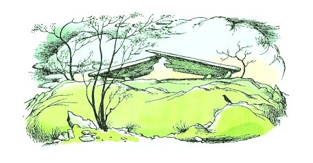

| [C・S・ルイス／瀬田貞二] ナルニア国物語1 | |
| C・S・ルイス／瀬田貞二 | |
| (2015) | |
|
ナルニア国物語１
ライオンと魔女
Ｃ．Ｓ．ルイス作／瀬田貞二訳
|
も く じ
１ ルーシィ、衣装だんすをあけてみる
２ ルーシィの知ったこと
３ エドマンドの番
４ プリン
５ ドアのこちらに、まいもどって
６ 森のなか
７ ビーバー一家にもてなされる
８ ごはんのあとの一騒動
９ 魔女のやかた
10 魔法のきずな、ゆるみだす
11 アスラン、近づく
12 ピーターの初陣
13 世のはじめからの魔法
14 魔女の勝利
15 世のはじまりより前からのもっと古い魔法
16 石像のむれ、よみがえる
17 白ジカ狩り
訳者あとがき
ルーシィ・バーフィールドへ
親愛なるルーシィ
ぼくはこのお話をきみのために書いた。でも、書き始めたときには、本より女の子の方が早く成長するとは思っていなかった。だからきみは、いまさらおとぎばなしでもない年になってしまったわけだ。この本が印刷され、製本されるころには、きみはもっと成長していることだろう。でもいつかきみは、さらに年を重ね、またおとぎばなしを読むようになるだろう。そのときは、本棚のどこか上の方からこの本を引き出し、埃をはらって、その感想をぼくに話してくれるかもしれない。ぼくはたぶん耳が遠くなっていて、きみのいうことが聞こえないかもしれない。それにもうろくしてしまって、きみの話がさっぱり理解できないかもしれない。それでもやっぱりきみのやさしい名付け親であることに変わりはないだろう。
Ｃ・Ｓ・ルイス
１ ルーシィ、衣装だんすをあけてみる
むかし、ピーター、スーザン、エドマンド、ルーシィという四人の子供たちが、いました。この物語は、その四人きょうだいが、この前の戦争（第一次世界大戦）の時、空襲をさけてロンドンから疎開した時におこったことなのです。きょうだいは、片いなかに住むある年よりの学者先生のおやしきに送られたのですが、そこは、もよりの駅から十五キロ、もよりの郵便局からでも三キロもはなれたところでした。先生は、奥さんがいないので、マクレディさんという家政婦と三人の女中さんといっしょに、たいそう大きなおやしきに住んでいました。（女中さんの名は、それぞれ、アイビー、マーガレット、ベチーといいますが、このお話にはあまり出てきません）。先生は、頭はもとより、顔まで、もしゃもしゃの白髪でうまった、とても年とった人で、四人とも会ったばかりですぐ、この先生がすきになりました。でも子供たちがきたその日の夕がた、四人をむかえに玄関に出てきた先生が、あまりふうがわりなようすなので、いちばん年下のルーシィは、すこしばかりこわがりましたし、そのすぐ上のエドマンドのほうは、わらいたくてわらいたくて、それをかくすのに、鼻をかむふりをしていなければならないほどでした。
先生におやすみなさいをして、その晩二階にあがってから、すぐに男の子たちは、女の子の部屋へはいってきて、みんなでこんな話をしました。
「ぼくたち、まったく、ついてるよ。」と年上のピーターがいいました。「とてもすばらしいことがおこりそうだな。あのおじいちゃん、ぼくたちのすきなことをさせてくれるよ。」
「あのひと、いいひとだわ。」とスーザンがいいました。
「なんだ、そんなこと、ほっとけよ。」エドマンドという子は、すぐにつかれるくせにそのようすをみせないで、きまって意地悪になるのです。「そんな話しかたばかりするなよ。」
「どんな話しかた？」とスーザン。「なんにしても、とにかく、もうあんたは、寝る時間ね。」
「おかあさんみたいないいかたするなよ。」とエドマンド。「どんなしかくがあって、ぼくに寝ろっていうのさ。きみだって、寝にいけよ。」
「ほんとに、みんな、もう寝たほうがよくない？」とルーシィがいいました。「わたしたちの話し声が聞こえたら、おこられるにきまってるわ」
「そんなはず、ないね。」とピーター。「というのはね、ぼくたちが何をしようと、気にかける者がひとりもいない家だからだよ。とにかく、話し声は、きかれっこない。ここから下の食堂までいくには、十分もかかるし、そのあいだに、どれだけ階段や廊下を通るか、わからないくらいだもの。」
「あの音は、何かしら？」ふと、ルーシィがいいました。この家は、ルーシィの知っているどの家よりも、はるかに大きいやしきでした。ルーシィは、あの長い廊下やドアがつづいていて、たくさんのがらんとした部屋があることを考えただけで、なんだかぞっとしてきました。
「ただの鳥さ、ばかだな。」とエドマンド。
「フクロウだよ。」とピーター。「ここはたしかに、鳥たちにとっては、すてきなところだろうな。ぼくは、もう寝るよ。でもね、あしたは、おもてに出て、大いに探検しようよ。このあたりなら、きっとおもしいろものが見つかるね。ここへくる途中の山を見たろ。それに、あの森は、どう思う？たしかに、ワシがいる。シカもいるよ。タカもいるだろうな」
「アナグマもよ！」とルーシィ。
「キツネだって！」とエドマンド。
「ウサギ！」とスーザンが、いいました。
けれども、つぎの朝になってみると、ざあざあふりつづく、ひどい雨で、窓からのぞいても、山はもとより、森も、庭さきの流れさえも、見えませんでした。
「ああ、もちろん雨になるにきまってたよ。」とエドマンドがいいました。それはみんなが、学者先生と朝ごはんを食べて、先生がみんなのためにとくにあけておいてくれた二階の一室にひきあげてきたところです。ここは、ほそながい天井の低い部屋で、一方に窓が二つ、もう一方にも二つあいていました。
「ぐすぐすいわないでよ、エド。」とスーザンがいいました。「十中八九、一時間ぐらいのうちに、あがるわ。それまで楽しくやりましょうよ。ここにはラジオがあるし、本ならずいぶんあるもの。」
「ぼくには、そんなものいらない。」とピーターがいいました。「家のなかを探検するんだ。」
これには、みんな、さんせいでした。そしてこれが、あの冒険のはじまりになりました。このやしきは、どんなに探検してもきりのないような家で、思いがけない場所がいっぱいありました。てはじめに四つか五つ、ドアをあけてみますと、みんなの思ったとおり、それはお客のとまる予備の部屋でした。でもそのつぎに四人は、ばかにほそながい部屋にきました。そこには絵がどっさりかけてあり、おまけによろいかぶとが一そろい立ててありました。そのつぎの部屋は、ぐるりに緑色の壁紙がはってあって、部屋のすみに、たてごとがおいてありました。そのさきの廊下を三段おりて、五段あがりますと、小さな広間のようなところに出て、そこのドアをあけると、バルコニーに出ます。それから、ひとつづきの部屋があって、なかはドアでつながっていましたが、どの部屋にも本がどっさりならんでいました。あるのはどれも古い古い本で、なかには、教会にある聖書よりも大きいものもあります。さて、そのすぐあとで、四人は、がらんとした部屋をのぞきました。大きな衣装だんすが一つあるきりです。ドアのところに鏡がついている旧式のたんすです。部屋じゅうがからっぽで、窓の台に、アオバエの死がいがあるだけでした。
「ここには、何もなし！」とピーターがいって、みんなは、どやどや、部屋を出ていきました。が、ルーシィだけが残りました。そのたんすに鍵がかかっていることはまずたしかだとは思いますが、ドアをあけてみるくらいは、やってみるねうちがあると思って、ひとりだけふみとどまったのです。ところがおどろいたことに、ドアがいともかんたんに、あくでありませんか。あけたひょうしに、ぼろぼろと、しょうのう玉が二つ、ころがりだしてきました。
なかをのぞくと、外套がいくつも、つるさがっています。たいていは、長い毛皮外套です。ところで、ルーシィにとって、毛皮のにおいをかいだり、毛皮にさわったりするほどすきなことがありませんでした。ですからルーシィは、すぐさま、衣装だんすのなかにあがって、外套のあいだにわりこむと、毛皮に顔をすりつけました。もちろん、たんすのドアはあけっぱなしにしておきました。戸をしめるのが常識はずれなことは、ルーシィも知っていました。ルーシィはすぐに、もうすこしなかにふみこみました。すると、はじめの一列のうしろに、二列目の外套がぶらさがっているのがわかりました。二列めは、もうまっくらなものですから、ルーシィはそのさきのたんすのうしろがわに、おでこをぶつけないように、手をのばしておきました。そして、もう一あしふみこみ、──さらに二あし三あし、なかへはいりました。きっと指さきが、うしろの板じきりにさわる、と思ったのですが......さわりませんでした。
「すごく大きなたんすなんだわ、きっと。」とルーシィは思って、もっとおくへからだをおしいれるために、外套のやわらかなかたまりをかきわけていきました。すると、何か足のうらにざくざくふみつけるものがあることに、気がつきました。「しょうのう玉があるのかしら？」と思って、かがんで、手でさわってみようとしました。けれども、衣装だんすのかたくてつるつるの木の床にはふれないで、やわらかくて、ざらざらした、ばかにつめたいものに、さわりました。
「あら、おかしいわね。」とひとりごとをいって、また一、二歩さきに進みました。
そのとたんに、顔と手にさわったものは、もうやわらかい毛皮ではなくて、ごつごつして、ちくちくさすことに、気がつきました。「おや、木のえだのさきみたいだわ！」ルーシィは声をあげていいました。そしてその時、前方にあかりを一つ見たのです。そのあかりは、衣装だんすのうしろがあるはずの、ほんの十センチか十五センチしかはなれたところにではなく、ずっと遠くのほうにありました。つめたい、ふわふわしたものが、おちてきました。気がつくと、なんと、真夜中の森の中につっ立っていて、足もとには雪がつもり、空から雪がふっていたのです。
ルーシィは、すこしこわくなりました。けれども、一ぽうでは、心がわくわくして、ゆくてをつきとめたくてたまらなくなりました。かたごしにふりかえって見ますと、まだ衣装だんすの入り口のあけっぱなにしたあたりが見えますし、そもそもルーシィが足をふみいれたあのからっぽの部屋さえ、黒い木々のみきのあいだからながめることができました。（もう一度いいますが、ルーシィは、衣装だんすの中にとじこもるのは、ばかげていると思ったものですから、たんすのドアをあけっぱなしにしておいたんです）。そちらは、あいかわらず、あかるい昼間のようでした。「まずいことがおこったら、いつでも帰れるわ。」とルーシィは思いました。そしてこんどは、雪をキシキシとふみしめて、森の中をあちらに見えるあかりのほうへ進んでいきました。
十分ぐらいしてついてみると、あかりは、街灯のランプだったのです。ルーシィは、ランプを見あげながら、どうして森のまんまん中に、ランプがあるのかしら、そしてこれからどうしようかしらと思って、立っていますと、こちらへ、パタパタ近づいてくる足音がきこえました。そしてまもなく、木の間のやみから、街灯のあかりのさすなかへあらわれてきたのは、まことに奇妙きてれつな人だったのです。
それは、ルーシィよりすこし背が高い人で、雪のつもった真っ白な傘をさしていました。腰から上のほうは、人間のようですが、その両足は、ヤギの足そっくりで（足に生えている毛は、黒くてつやつやしています）、また足さきは、ヤギのひづめでした。そのほかにこの人は、しっぽを生やしていましたが、それにはその時、ルーシィは気がつきませんでした。というのは、しっぽが雪の上にひきずらないように、傘をかざしている手にきちんと、まきつけてあったのです。この人は、首に赤い毛のマフラーをまきつけていましたが、からだも、赤い色をしていました。ふうがわりな顔だちのくせに、とても気もちのいい、小づくりな顔で、ぴんとさきのとがった短い口ひげを生やし、髪の毛はうずをまいて、二本の角が、ひたいの両がわからつき出ていました。片手には、さきにいいましたように、こうもり傘をもち、もう一方の腕には、茶色の紙包みをいくつかだきかかえていました。その荷物とこの雪ですから、まるでクリスマスの買い物の帰りといったところです。──この人は、フォーンでした。ギリシアではサタイアという、ヤギと人のいりまじった、野山の小さな神でした。フォーンは、ルーシィを見ると、あんまりたまげたので、包みを全部おとしてしまいました。
「なんてこった！」フォーンは、大きな声をあげました。
２ ルーシィの知ったこと
「こんばんは！」とルーシィがあいさつしました。けれどもフォーンは、あわただしく、じぶんの包みをひろうばかりで、はじめは返事ができませんでした。全部ひろいおわってから、ひょいと頭をさげました。
「こんばんは、よいおばんで──」と、フォーンはいいました。「ごめんなさい、やたらにうかがっては、ぶしつけとは思いますが──あなたは、イブのむすめさんでいらっしゃると考えてよろしいでしょうか？」
「わたしの名は、ルーシィですわ。」とルーシィには、フォーンのいういみがわからないままに、こうこたえました。
「でも、あなたは──おゆるしください、あなたは、女の子というもの、なんでしょう？」とフォーンがたずねました。
「もちろん、わたしは女の子よ。」とルーシィ。
「で、ほんとに、人間なんですね？」
「もろちん、人間よ。」とルーシィは、まだわけがわからないままに、こたえました。
「ごもっとも、ごもっとも。」とフォーンはいいました。「なんてわたしは、まがぬけてるんでしょう。でもいままで、アダムのむすこどのにも、イブのむすめごにも、お会いしたことがないんです。いや、うれしいですね。いやほんとに、──」と、何かいってはいけないことをいいかけて、ちょうどよくそこに気がついたように、話をきって、「うれしい、そう、ほんとにうれしいですよ。」と話をつづけました。「名まえをなのらせてください。タムナスと申します。」
「わたしこそ、お会いできて、うれしいわ、タムナスさん。」とルーシィ。
「では、うかがいますが、イブのむすめごルーシィさん、どうして、このナルニアにいらっしゃいましたか？」とタムナスさん。
「ナルニア？ それ、なんですか？」
「ここは、ナルニアの国です。いまいるここがそうなのです。あの街灯と、東の海の岸べに立つケア・パラベルの大きな城とのあいだは、いたるところナルニアです。で、あなたは、だれもいない西の森から、おいででしたか？」
「わたし、わたしね、あきべやの衣装だんすを通ってきましたの」
「ああ！」とタムナスさんは、かなしそうな声をだしました。「まだ小さなフォーンだったころ、もっとしっかり地理の勉強をしておいたら、そういったふしぎな国ぐにのことも、まだよくわかるのでしょうがね。おそすぎました。」
「でも、あそこは、国なんかじゃないの。」と、わらいだしそうになって、ルーシィがいいました。「ほんの、このうしろよ。と、思うけど。わからないわ。あちらは、夏なんです。」
「ところがナルニアでは、」とタムナスさんがいいました。「冬です。それがずっとつづいてきたんです。が、わたしたちは、こんな雪のなかで長話をしていては、風邪をひいてしまう。どうでしょう、とおい〝あき・へや〟という国の常永久の夏のかがやく〝いしょたんす〟というあかるい町からこられた、イブのむすめさん。これからわたしのところへお茶をのみに、いらっしゃいませんか？」
「たいへんありがたいんですけど、タムナスさん、」とルーシィ。「でも、そろそろ、帰らなくちゃいけいなかしら、と思ってるんです。」
「あの角をまがった、すぐそこです。わたしのとこには、ぼんぼん火がもえていますよ。おいしい油づけの小イワシも、トーストもありますし、お菓子もあります。」
「どうも、ご親切に。うかがいます。......でもあんまり長くはいられないわ。」
「では、この腕をとってくだされば、イブのむすめさん、ふたりの上に傘がさせます。そう、そんなぐあいです。さ、まいりましょう。」
こうしてルーシィは、まるでまえから知り合った仲のようにして、このけものとも人ともつかないふしぎな人物と手を組んで、森の中へふみだしていきました。
さほどいかないうちに、道はけわしくなり、あたりにいたるところ岩があらわれて、そのうちに小高い丘をのぼったりくだったりしました。そして小さい谷におりて、その谷底につくと、タムナスさんは、にわかに横にまがりました。とほうもなく大きな岩のなかへ、すたすたとすいこまれるように、歩いていったのです。そして、気がつくと、ルーシィは、フォーンにみちびかれて、洞穴の入口にはいっていくところなのでした。なかにはいるとすぐに、たきぎをもすあかりがまたたき、ルーシィは、まぶしくて、目をぱちぱちさせました。タムナスさんのほうは、かがみこんで、小さな火ばしで、もえているたきぎを一つとりだすと、部屋のランプに火をともしました。「時間はかかりませんからね。」といいながら、タムナスさんはすぐに、いろりに鉄びんをかけました。
ルーシィは、いままで、こんなにすてきな部屋に通されたことがないと、思いました。赤い岩の、小さい、こざっぱりとした岩穴は、からりとかわいていて、床にじゅうたんをしき、二つの小さないすがあり（「一つはわたしの、もう一つはお客用です。」とタムナスさん）、テーブルが一つ、食器だなが一つ、だんろにはだんろ台があって、その上には、白髪まじりのあごひげをはやした年よりのフォーンの肖像画がかかっています。部屋の片すみには、ドアがあって、これはタムナスさんの寝室にいくのでしょう。壁には本棚があって、本がどっさりつまっています。フォーンがお茶のしたくをしているまに、ルーシィは本の題に目を走らせてみました。『森の神シレナスの生涯とその思想』、『おとめニンフたちのならわし』、『人間、森にこもる坊さんと森番について──神話伝説の一研究』、『人間は実在するか？』などという題でした。
「さあどうぞ、イブのむすめさん！」
それはすてきなお茶のもてなしでした。やわらかくゆでたきれいな茶色の卵がめいめいに一つずつ出ましたし、トーストは、小イワシをのせたもの、バターをぬったもの、ミツをつけたものがありました。そのつぎには、砂糖をかけたお菓子が出てきました。ルーシィのおなかがいっぱいになると、フォーンは話をはじめました。それは、森のくらしの、ふしぎな物語でした。まず、真夜中のダンスの集まりに、泉に住んでいる水の精のニンフたちや、木のなかにくらしている木の仙女ドリアードたちが、どのようにして水や木のなかからぬけだしてきて、フォーンとたちとおどりまわったかという話。それから、つまかえた者に望みをかなえてくれるまっ白なシカを追って、隊をくんでいく日も狩りをした話や、森の地下ふかくの金堀り穴や岩穴に住む赤毛小人たちといっしょに、ごちそうを食べたり、宝さがしをした話。または、森じゅうが緑だったたのしい夏には、年とったシレナスも、ふとったロバにのって、よくフォーンたちのところへ遊びにきたもので、時によると若いバッカスの神までやってきて、流れは水のかわりにぶどう酒になり、森じゅうをあげて、何週間もたのしいかぎりのおまつりがつづいたという話。こんな話を話してきて、フォーンは、「それがいまでは、冬でない時がないのです。」と、ゆううつそうにつけ加えました。それから、じぶんの気をひきたてるために、食器だなの上においてあった箱のなかから、一本のわらでできているような、奇妙な小さい横笛をとり出して、タムナスさんは、吹きはじめました。その音色は、ルーシィの心に、泣きたいような、わらいたいような、おどりだしたいような、しかもねむたいような気もちを、同時にかきたてました。ルーシィがようやく気をとりもどすまでに、ずいぶん長い時間がすぎたにちがありません。ようやく、ルーシィはこういいました。
「ああ、タムナスさん、笛をやめていただくのがとても残念だわ。節まわしがたまらなくすきなんです。でも、でも、わたしはもう帰らなきゃ。ほんのしばらく、おじゃまするつもりだったのに。」
「いまとはなっては、もうだめです。」とフォーンは、横笛をおいて、首をふりながら、ルーシィをさもかなしそうに、見つめました。
「だめです、って？」とルーシィは、びっくりして、いすからとびあがりました。「どういうこと？それ。すぐにも、家へ帰らなくちゃ。ほかの人たちが、わたしに何かあったのじゃないかと心配しますから。」こういってから、ルーシィははっとしてたずねました。「タムナスさん、いったい、どうなさったの？」というのは、フォーンの茶色の目に、みるみる涙がたまって、ほろほろとほおをつたって、おちはじめたからでした。涙はやがて鼻のさきからしたたりおち、とうとうフォーンは、両手で顔をおおって、大声をあげて泣きはじめました。
「あら、タムナスさん、タムナスさん！」ルーシィはこまりきってしまいました。
「泣かないで！ 泣かないでちょうだい。いったいどうなさったの？ご気分でも悪いの？ああ、タムナスさん、どうなさったのか、おっしゃいな。」けれどもフォーンは、心臓がやぶれんばかりに、むせび泣きつづけました。そしてルーシィが立ち上がって、タムナスさんの肩に手をまわし、じぶんのハンケチをかしてあげたのに、それでも泣きやみません。フォーンは、ハンケチをうけとったきり、涙をふきつづけました。ハンケチがあまりぬれて使えなくなると、両手でしぼってまたふいてるしまつです。とうとうルーシィの立っているところも、水たまりのようになってしまいました。
「タムナスさん！」とたまりかねたルーシィは、耳もとでどなって、あいてのからだをゆすぶりました。「やめて！すぐやめなさいってば！はずかしく思わないの？そんなに大きなフォーンのくせ。いったいぜんたい、どうして泣くの？」
「おー、おー、おー、」とタムナスさんは、すすりあげました。「わたしは悪いフォーンだから、泣くんですよう。」
「あなたが悪いフォーンだなんて、わたしには思えない。あなたは、とてもいいフォーンだわ。あなたほどすてきなフォーンに、わたし、会ったことないもの。」
「おー、おー、そうおっしゃるけど、あれがわかったら、そうはおっしゃらないでしょう。」と、タムナスさんは、むせび泣きのあいまあいまに答えました。「とんでもない、わたしは、悪いフォーンですよう。この世のはじまりから、わたしほど悪いフォーンは、いなかったでしょう。」
「でも、どんなことをやったというの？」
「あのおとうさんは、」とタムナスさんは、指さして、「あのだんろ台の上にかかっている絵が、わたしのおとうさんです。おとうさんなら、こんなことをぜったいにしなかったでしょうよお。」
「どんなこと？」
「わたしのやったようなこと。」とフォーンがいいました。「白い魔女にやとわれていたんです。それが、わたしの正体だ。わたしは、白い魔女に使われている者です。」
「白い魔女？ それ、だれなんですか？」
「ナルニアじゅうを、がっちりおさえつけているのが、そいつです。ここをいつも冬にしておくのが、その女です。いつもいつも冬なのに、けっしてクリスマスがこない！なんということだろう。」
「まあ、ひどいこと！ でもその人が、あなたに何をさせているんですか？」とルーシィ。
「それが、いちばんいけいなところなんです。」とタムナスさんが、ふかいうめき声を一つもらしました。「わたしは、あいつのための人さらいなんだ。それがわたしの正体ですとも。このわたしをようく見てごらんなさい、イブのむすめさん。どうです、そう見えませんか。わたしに何の悪いこともしない小さな子、かわいそうなむじゃきな子どもに森の中で会うと、さも親しそうなふりをして、わたしの洞穴へその子をさそいこみ、いろいろとあやして眠らせてしまってから、白い魔女にその子をひきわたす、そんな者には見えませんか？」
「見えないわ。」ルーシィがいいました。「あなたって、けっしてそんな人じゃない。」
「でも、そうなんです。」
「では、」とルーシィが、ほんとうのことをいわなくては、と思いながらも、フォーンに手きびしくならないように、注意してゆっくり口をききました。「そうとしたら、とてもいけいなことをなさったわ。でも、あなたは、それをとてもこうかいしてるんだから、もう二度となさらないわね。」
「ねえ、イブのむすめさん、まだおわかりにならないんですか？」とフォーンがいいました。「それは、むかしやったことじゃない。たったいま、ここで、やってるんです。」
「それ、どういうこと？」とルーシィは、さっと顔色をかえて、叫びました。
「あなたが、その子どもなんです。」こう、タムナスがいいました。「わたしが森の中で、アダムのむすこさんか、イブのむすめさんを見かけたら、その子をつかまえて、ひきわたすように、白い魔女からいいつけられているのです。ところが、あなたが、わたしの出会ったはじめての人なんですよ。だからわたしは、あなたの友だちのようなふりをして、お茶にさそい、あなたを眠らせてから、あいつのところへいって、教えてくるつもりで、いままで、ずっとねらっていたんです。」
「ああ、でもあなたは、けっしてそんなことをなさらないわ。」とルーシィがいいました。「ね、タムナスさん、なさらないでしょ？ぜったい、そんなことを、なさっちゃいけないわ。」
「でも、そうしないと、」とタムナスさんがまた、泣きはじめました。「あいつには、かならずわかるんです。そうなれば、白い魔女が、このしっぽをちょんぎり、角をきりおとし、ひげをぬきとり、杖をふるって、このきれいなわれめのあるひづめまで、やくざ馬のひづめのような、きみのわるいかたいものに変えてしまうでしょう。その上、おこりかたがもっとはげしければ、わたしは石にかえられて、ケア・パラベルの四つの王座がみたされる日まで、白い魔女のおそろしいやかたで、フォーンの形の置き物にされることでしょう。そうなれば、いつ石からもとの身にかえる日がくるか、それともそんな日がくるかどうかさえ、わかったものじゃありません。」
「まあ、おきのどくに！ タムナスさん。でも、どうかもう、家へ帰らせてくださいな。」とルーシィがいいました。
「もちろん、お送りしますとも。」とフォーンはいいました。「もちろん、そうしなくちゃ。いまになって、それがやっと、わかりました。あなたにお会いするまでは、人間というものを知りませんでした。もちろん、もうあなたを、白い魔女にひきわたすことはできません。あなたを知ってしまいましたからね。でも、すぐ出かけなければなりませんよ。あの街灯のところまで、お送りします。そのさき、〝あき・へや国のいしょうたんす町〟へもどる道はおわかりでしょう？」
「わかると思います。」
「それじゃ、できるだけこっそり、まいりましょう。」とタムナスさんはいいました。「森じゅうに、あいつのスパイがいっぱいいます。木のなかにも、あっちがわのやつがいますからね。」
テーブルの上のお茶のあとしまつをそのままに、ふたりは立ちあがると、タムナスさんは、ふたたび傘をさし、ルーシィと腕を組んで、雪の中に出かけました。帰りの道は、フォーンの洞穴にきた時のようにはいきませんでした。ふたりは、足のかぎり早く、ひとこともかわさずに、こっそりゆきました。タムナスさんは、暗いところばかりえらんでいきました。ふたりがようやくあの街灯のところについたとき、ルーシィは心から、ほっとしました。
「ここからは、おわかりですね、イブのむすめさん。」とタムナスさんがいいました。
ルーシィは、木の間をじっとすかしみて、とおくに、昼間の光のさす一点を見つけました。
「だいじょうぶです。衣装だんすのドアが見えるわ。」とルーシィ。
「では、できるだけ早く、おかえりなさい。」と、フォーン。「そして、あの、わたしの、しようとしたことを、ゆ、ゆるしていただけますか？」
「あら、もちろん、なんとも思わないわ。」とルーシィは心から、フォーンの手をにぎりしめ、握手をしました。「どうか、わたしのことで、まずい立場におちないように、いのりますわ。」
「さようなら、イブのむすめさん。」フォーンはいいました。「あのハンケチ、いただけますか？」
「どうぞ！」ルーシィはこうこたえて、こんどは昼の光のさすほうへ、足のうごくかぎりせっせといそいでいきました。するとやがて、あのごつごつした木の枝にさわる感じがなくなって、外套にふれるようになり、足はきしむ雪のかわりに、板の床をふみました。と同時にルーシィはいつのまにか、衣装だんすから、この冒険のはじまったあきべやへ、ぽんとおどりでていました。ルーシィは、うしろ手に、しっかりと衣装だんすのドアをしめ、息をはずませながら、まわりを見まわしました。そとにはまだ雨がふっています。廊下から子どもたちの声がきこえてきます。
「ここよ！」ルーシィは大声をあげました。「ここよ、帰ってきたわ。だいじょうぶだったわ。」
３ エドマンドのばん
ルーシィは、あきべやから廊下に走り出てきて、ほかの三人を見つけました。
「だいじょうぶよ。」とルーシィはまたくりかえして、「ほら、帰ってきたわ。」といいました。
「いったい、なんの話よ？ ルーシィ。」とスーザンがたずねました。
「あら、どうして？」とルーシィのほうがおどろいて、「わたしがどこにいってたか、みんな、なんとも思わなかったの？」
「きみ、かくれてたんだろ？」とピーター。「かわいそうに、きみは、ひとりでかくれんぼしてたのに、だれもそれに気がつかなかったんでよ。だれかに探してもらいたかったら、もっと長いこと、かくれてなくちゃだめだ。」
「でも、何時間も何時間も、いなかったわ。」とルーシィがいいました。
ほかの三人は、顔を見あわせました。
「ここがいかれたな！」エドマンドが、じぶんの頭を指のさきでちょんちょんたたいてみせて、「すっかりいかれちゃったぞ。」といいました。
「どういうことなんだ？ ルー。」とピーター。
「あのね、朝ごはんのすぐあとだったわ。衣装だんすのなかにはいったのは。それから何時間もそこにいて、お茶をいただいて、それから、いろんなことに出会ったの。」
「ルーシィ、ばかいわないでちょうだい。」とスーザン。「わたしたち、ほんのいましがた、あの部屋から出たのよ、その時、あなたはそこにいたわ。」
「ばかなことをいってるんじゃないさ。」とピーター。「ただお話をこしらえて、かつごうというのさ。ね、ルー。そうだろ？」
「ちがうの、ピーター。お話なんかじゃない。」とルーシィ。「あれは──あれ、魔法の衣装だんすよ。そのなかに、森があって、雪がふってて、フォーンと魔女がいて、ナルニアっていうところよ。それじゃきてごらんなさい。」
ほかの三人は、どう考えていいかわかりませんでしたが、とにかくルーシィがとてもこうふんしていますから、いっしょに、もとのあきべやにもどりました。ルーシィは、まっさきにかけこんで、衣装だんすのドアをぱたんとひらくと、こう叫びました。「さ、みんな、はいって、じぶんで見てちょうだい！」
「まあ、へんなひとね。」とスーザンは、たんすのなかに頭をつっこんで、毛皮の外套をおしわけると、「どこにでもある衣装だんすじゃないの。ほら、ここが裏がわよ。」
そこで、みんながのぞきこんで、外套をおしわけてみました。そして四人ともみな──ルーシィさえも、どこにもある変わりのない衣装だんすであることを、たしかめました。森もなければ、雪もない、ただのたんすの裏がわの板があって、ぼうしや衣装をかけるフックがついているだけ。ピーターがはいっていって、指のふしでこつこつと板をたたいて、かたさをたしかめました。
「ずいぶんじょうずに、かついだね、ルー。」と、たんすから出てきてピーターが、いいました。「すっかり、ぼくたちをだましちゃったね。半分はほんきにしてたよ。」
「でも、かついだり、だましたりしてるんじゃないのよ。」とルーシィ。「たしかにほんとだったのよ。すこし前までは、こんなふうじゃなかったわ。こんりんざい、ちかってだわ。」
「およしよ、ルー。」とピーター。「すこしくどいよ。きみも、けっこう楽しんだはずだ。このへんでもうやめたらどうだ？」
ルーシィは、顔を赤くしました。そして何かいおうとしかけて、どういっていいかわからずに、泣きだしてしまいました。
それからいく日ものあいだ、ルーシィはとても、みじめな思いをしました。あの話は全部じょうだんよ、という気になれたら、すぐにでもみんなと仲なおりできたでしょう。けれどもルーシィは、根がたいへん正直な子で、じぶんが正しいと思っていることを、じぶんをだましてじょうだんだったことにしてしまうことができませんでした。じぶんがうそをついた、しかもひどすぎるうそだったとみなに思われていることが、ルーシィにはずいぶん堪えました。上のふたり、にいさんとねえさんには悪気はなかったのですが、すぐ上のエドマンドは時どき意地悪になる子で、こんどはこのことで、とてもいじめるのです。エドマンドは、ルーシィをあざわらったりひやかしたり、やしきじゅうの戸棚をあけて、またべつの国でも見つけたかと、たずねることをやめません。いっそう悪いことに、そのあと、こんなことさえなければ、どんなに楽しいかと思われる日がつづいたのです。みんなは朝から晩まで外にでて、水泳ぎ、魚つり、木のぼりをしたり、草原でねころんだりしてのびのびとすごしましたが、ルーシィだけは、なにをやっても、心からは楽しめませんでした。そして、そんなありさまが、つぎの雨ふりの日までつづきました。
その日は午後になっても、まだ、雨があがるけはいがないので、みんなで、かくれんぼをすることになりました。スーザンが鬼なり、みんなが、かくれ場所をさがしてちらばった時、ルーシィは衣装だんすのある部屋にいきました。たんすの中にかくれるつもりはありませんでした。あのいやなことをもう一度みんなが口にのぼせるはめになることはしたくありません。けれども、なかをもう一度のぞいてみたかったのです。なにしろ、いまはじぶんでも、ナルニアやフォーンのことが、夢ではなかったかしらと、うたがいはじめていたからです。やしきは、たいへん大きくて、いりくんでいて、かくれ場所はいくらでもありますから、いま衣装だんすを一目見てからでも、どこかほかにかくれる時間はあると思いました。けれどもルーシィが、たんすの前にきた時に、そとの廊下に足音がきこえました。ですから、たんすのなかにとびこんで、ドアをしめて待つよりほかはありません。とはいえもちろんドアをぴったりしめなかったのは、衣装だんすがたとえ魔法のたんすでなかろうと、そのなかにとじこめられるようなことをしたら、よほどのおばかさんだと思ったからなのです。
ところでルーシィのきいた足音は、エドマンドのものでした。エドマンドは、部屋にはいって、ちょうどルーシィが衣装だんすのなかにかくれるところを見てしまいました。それでじぶんもすぐ、はいろうと思いました。それは、そこがとくべついいかくれ場所だと思ったからではなくて、ルーシィのでたらめの国のことで、妹をもっとからかうたねが見つかったと思ったからにすぎないのです。エドマンドは、ドアをあけました。前のように、外套がつるさがっていて、しょうのう玉のにおいがして、暗くて静かで、ルーシィのけはいがありません。「ぼくのことを、鬼のスーザンだと思ったんだな。」とエドマンドは、ひとりごとをいいました。「それで、おくのほうにこっそりかくれてるんだな。」エドマンドは、ひらりとなかにとびこんで、ドアをぴたりとしめました。しめたらばかげたことなのに、忘れてしまったのです。それから、くらがりのなかでルーシィを手さぐりでさがしはじめました。すぐに見つかると思っていたのに、さっぱり見つからないのですっかりたまげてしまいました。あともどりして、ドアをあけ、そとのあかりをいれようと思っても、どこにドアがあるのか、わからなくなってしまいました。これではたいへんと、あらゆるほうへ、夢中で手さぐりしはじめました。ついに「ルーシィ、ルー、どこだい？いること、知ってるぞ！」と大声でどなりだしました。
こたえがありません。そしてエドマンドは、じぶんの叫び声がおかしいことに気がつきました。戸棚のなかでひびく音にならないで、ひろいおもてできくようなちょうしです。思いがけず寒いことにも、気がつきました。その時、あかりが見えました。
「やれ、ありがたいぞ。」とエドマンドがつぶやきました。「ドアが、はずみでひとりでにあいたにちがいないや。」エドマンドは、ルーシィのことはすっかり忘れて、あかりのほうへ、つまりじぶんがたんすのドアがあいたと思ったほうへ、進んでいきました。けれども、あきべやへ出るかわりに、こんもりしたモミの木のしげみをぬけて、森の中の、木々のないあき地にきていたのです。
足もとには、さらさらかわいた雪があり、木々の枝には、もっとふかぶかと雪がつもっています。頭の上には、冬ばれの朝によくみかける、青みがかった空がのぞいていました。おりからエドマンドの目の前に、木々のあいだから日がのぼるところで、それはまっ赤であざやかな朝日でした。なにもかも、静まりかえっていて、生きものはまるでこの世にエドマンドひとりのようでした。木の間に、一羽のコマドリも、一ぴきのリスも見かけず、森はどちらをむいても、ひろびろと遠くまでひろがっていました。エドマンドは、身ぶるいしました。
エドマンドは、ようやく、ルーシィをさがしていたことを思いだしました。そして、「でたらめの国」のことでずいぶんルーシィにつらくあったことも思いだしました。でも、それがちっともでたらめでないということになったのです。エドマンドは、ルーシィがどこか近くにいると思って、大声で叫びました。「ルーシィ、ルーシィ！ぼくもきたよ。エドマンドだよ。」
返事がありません。
「このあいだから、ぼくがいったことを、おこってるんだな。」とエドマンドは思いました。じぶんがまちがっていたことをみとめるのはいやでしたが、こんなふしぎな、寒くて静かなところに、ひとりぼっちでいるのはもっとやりきれません。
そこでエドマンドは、また叫びました。
「おーい、ルー！ きみのいったことをうたがって、ごめんよ。ぜんぶほんとうのことだって、いまわかったよ。出ておいでよ、仲なおりしようよ！」
やっぱり、返事がありません。
「女の子らしくすねてどこかにかくれてて、あやまってもきいてくれないんだな。」エドマンドは、もう一度あたりを見まわして、どうもこの場所が気にいらないので、もとの家へ帰ろうと決心しました。その時です。どこか森のずっとおくのほうから、鈴の音がきこえました。エドマンドは耳をすませました。音はだんだん近づいて、とうとう二頭のトナカイのひく一台のそりが、あらわれてきました。
トナカイは、子馬ほどもある大きなもので、そのからだは、雪もおよばないくらい白く、枝角には金がぬってあるものですから、のぼる朝日の光をうけて、火のようにかがやいていました。からだにつけるたづなもおもづなも腹おびも、すべてまっ赤な革でできていて、それにいっぱい鈴がついています。その上でトナカイをあやつるのは、立ちあがっても一メートルにおよばない、ひとりのふとった小人で、こしかけている小さなからだに、北極グマの毛皮を着て、長い金色のふさ飾りをてっぺんからぶらさげた赤い頭巾をかぶっています。とほうもなく長いあごひげが、ひざをかくし、ひざかけ毛布のかわりをつとめています。しかしそのうしろの、そりのまんなかにあたる、はるかに高い座席には、おそろしくかわったひとが、こしかけていました。たいへん位の高そうな、エドマンドがこれまで見たことのないほど背の高い、堂々とした女の人でした。この人も、のどもとまで白い毛皮の外套をきて、右手にほそながいまっすぐの金の杖をもち、頭に金のかんむりをいただいています。その顔は、真っ白で、──青白いというのではなくて、雪か紙か砂糖のように白いのですが、くちびるだけは、ひどくまっ赤でした。ほかの点では美しい顔だちだといえますが、けれども、その表情は高ぶっていて、つめたくて、きびしいものでした。
そりは、見る目もあざやかに、エドマンドのほうへすべってきました。鈴をしゃんしゃんと鳴らし、小人がむちをひびかせ、両がわに雪をとばして、近づいてきました。
「とまれ！」とえらそうな女の人がいいました。小人がきゅうにトナカイをひきしめたので、トナカイはしりもちをつきそうになりました。でもすぐからだをたてなおして、くつわをかみ、鼻息を立てて、たたずみました。きんきんする寒気のなかで、鼻息は、けむりのようにふきだしました。
「これ、申せ。そちはなんじゃ？」と女の人は、エドマンドをじっと見つめながらいいました。
「ぼくは、ぼく、ぼくの名は、エドマンドです。」とエドマンドは、へどもどしていいました。にらまれかたが気に入らなかったのです。
女の人は顔をしかめました。「それが、女王にたいする口のききかたか？」と前よりきびしい顔つきで、女の人はいいました。
「おゆるしください、陛下。ぞじませんでした。」とエドマンド。
「なに、ナルニアの女王を、知らんと？」とその人は、声をあげていいました。「ほう、このさき、ずんとよく知らせてくれよう。だが、かさねてきくが、そちは、なんじゃ？」
「どうぞ、おゆるしを。おっしゃることが、わかりませんので。わたしは、学校にいっております。いえ、いままではそうでしたが、いまは、お休みちゅうで、ございます。女王さま。」エドマンドがいいました。
４ プリン
「だが、そも、そちはなんじゃ？」とふたたび女王がたずねました。「大きくそだちすぎた小人の、ひげをかりとった者か？」
「ちがいます、女王さま。ひげなんか、はえません。まだ男の子です。」
「男の子とな！ では、アダムのむすこのことじゃな？」
エドマンドは、何もいわずに、じっと立っていました。もうその時には、すっかり頭がこんらんして、何をきかれたのか、わからなかったのです。
「なんであるにせよ、そちはおろか者とみえる。」と女王がいいました。「はきはきとこたえを申せ。さもないと、がまんがならんぞ。そちは、人間か？」
「そうです、女王さま。」
「では申せ、どのようにして、わが国にはいってまいったのか？」
「衣装だんすをとおってまいりました。女王さま。」
「衣装だんす？ なんのことじゃ？」
「わたしは、つまりその、そこのドアをあけて、ここにまいったのです。女王さま。」
「ほう、」と女王はいって、あとはエドマンドにむかってというよりも、ひとりごとのように、「ドアとな。人間の世界からドアをあけてくる。なんだかきいたことがあるぞ。そのために、何もかもだめになるかもしれない。だが、この者はたったのひとり。しかもやすやすとあやつれそうだ。」こういってから、女の人は席を立って、ぴたりとエドマンドを見すえました。その目はかっともえました。そして同時に、杖をふりました。エドマンドは何かおそろしいことがおこると思っても、身動きができません。もうこれまでと、観念した瞬間、女の人は、気もちをかえたようでした。
「おお、かわいそうに！」と女の人は、がらりとちがう声音で、「まあ、さむそうだこと！さ、こちらへきて、そりにおすわり。そうすれば、そちのからだに、このマントをかけてとらそう。」
エドマンドは、とてもこういうあつかわれかたはきらいなのですが、したがわないわけにいきません。そりにのりこんで、女の人の足もとにすわりました。すると女王は、その大きな毛皮のマントのすそをエドマンドのからだにかけて、そこにうまくつつみこみました。
「何か、あたたかい飲みものは？」と女王がいいました。「飲みたいだろうな？」
「はい、いただきます。女王さま。」とエドマンドは、歯をかちかちさせながらいいました。
女王は包みのなかから、銅でできたらしい、ごく小さいびんをとりだしました。そして、手をのばして、そりのそとがわの雪の上に、そのびんから一しずくをたらしました。エドマンドは、そのしずくが、一いきするあいだ、ダイヤモンドのように光りながら、宙にかかっているのを見ました。けれども雪の上におちたとたんに、シューッという音がして、何かがじょう気をあげて、宝石をちりばめたコップにつまったまま、あらわれました。御者の小人がすぐにそのコップをとって、一つおじぎをすると、顔にわらいを浮かべて、エドマンドにさしだしました。いいわらいかたではありませんでしたが、エドマンドは、あつい飲みものをすすってみると、気ぶんがだいぶよくなりました。いままでに飲んだことのない、あまくて、あわ立ったクリームのようなものでした。飲むと、それこそ足の爪さきまであたたかくなりました。
「何もつままずに、飲むのでは、味気ないのう、アダムのむすこよ。」と、女王が、すこしして、いいました。「そちがいちばんすきなものは、なんじゃ？」
「プリンでございます。女王さま。」
すると女王は、おなじびんから、雪のなかへまた一しずくたらしました。するとたちまち緑色の絹のリボンでしばった、まるい箱が一つあらわれ、それをひらくと、おいしそうなプリンがどっさりでてきました。どのプリンもしんまでふわふわしてて、あまくて、これ以上おいしいものをエドマンドは食べたことがありませんでした。もうすっかりあたたまって、その上ひどくいい気もちになりました。
エドマンドが食べているあいだに、女王はつぎつぎに質問をつづけました。はじめのうちは、エドマンドも、口にいっぱいほおばったまま話をするのは失礼だという礼儀を守ろうとしましたが、すぐにそれを忘れて、できるだけプリンをむしゃむしゃ口へほうりこむことばかりに夢中になりました。すると、食べれば食べるほど、もっと食べたくなって、なぜ女王がこんなに根ほり葉ほりきくのだろうと考えることができなくなりました。こうして女王は、エドマンドに兄と姉と妹がいて、妹のほうがもうナルニアにきたことがあり、フォーンに会ったということを、ききだしました。また、エドマンドとそのきょうだいたちをのぞいては、だれひとりナルニアを知らないことも、ききだしました。女王は、きょうだいが四人ということには、とくに気がひかれたとみえて、なにをきいてもそこにもどっていくのでした。「たしかに、四人じゃな？アダムのむすこがふたり、イブのむすめがふたり、それにしかと相違ないか？」エドマンドは、口いっぱいプリンをほうばりながら、「はい、もうしあげたとおりです。」といいましたが、女王さまといい忘れても、女王は気がつかないようすでした。
とうとう、あれほどあったプリンもなくなり、エドマンドは、からっぽの箱をじろじろながめながら、女王が「もっとどうじゃ？」と声をかけてくれないかしらと、思いました。きっと女王のほうでは、エドマンドがそう思っていることを、よく知っていたのでしょう。というのは、エドマンドのほうこそ、知らぬがほとけで、あのプリンには魔法がかかっていて、一度食べたら、ますます食べたくなってたまらないし、どしどし食べていいことになろうものなら、食べても食べても食べたりなくなって、ついには死んでしまうということを、女王はとっくに知っていたのです。けれども、女王は、それ以上プリンをすすめようとはしませんでした。そのかわりに、こう申しました。
「アダムのむすこよ、そちの兄と、姉と妹に、ぜひ会いたいものじゃ。みなの者を、つれてこられぬか？」
「やってみましょう。」エドマンドはこうこたえながら、からの箱ばかり見ています。
「では、もしそちが、もちろんそちのきょうだいどもをつれて、ここにまいったら、プリンをもっとつかわそう。いまはだめじゃ。この魔法は一度きりじゃ。だがわがやかたにくれば、またやれるのじゃ。」
「どうして、いまはそのやかたにいけないんですか？」とエドマンドがたずねました。エドマンドは、はじめにそりにのせられた時、どこかじぶんの知らない、もう帰れないところにつれていかれるのじゃないだろうかと、びくびくしていました。けれどもいまは、そんなおそれをすっかり忘れていました。
「すてきなところじゃぞ、わがやかたは。」女王がいいました。「きっとすきになるな。プリンだらけじゃ。それに、わらわには、ひとりの子もおらぬ。前からひとりかわいい男の子がほしいと思っておった。その子を王子としてそだて、わらわなきあとはナルニアの王にしたいものと思っておった。王子となれば、その子は、金の冠をいただいて、ひねもすプリンを食べておるがよい。ところでそちは、わらわのみたところ、この上なくりこうで、みめうるわしい男の子じゃな。王子としたいものじゃが、それは、きょうだいをつれてきた時のことよ。」
「どうして、いまじゃないんですか？」エドマンドの顔はすっかり赤くほてって、口も指も、ねばねばでした。そのようすは、女王がどういおうと、とてもりこうとも、美しいともいえるものではありませんでした。
「おお、いまそちをつれていけば、そちの兄や姉や妹に会えなくなるではないか。そちの身うちにあいたくてならぬぞ。そちはいずれ王子になる身、してそののちは王になる身じゃ。しかとそうこころえよ。その時はそちも、小姓やおつきの者をもたねばならぬ。で、わらわが、そちの兄を公爵に、姉と妹を公爵夫人にとりたててつかわそう。」
「でも、きょうだいには、とりたていいところがありませんよ。とにかく、そのうちに、いつだってつれてこられますとも。」
「そうか。だがそちが一度わがやかたにくれば、きょだいのことなど、すっかり忘れてしまうわ。そちだけ大喜びのあげく、きょうだいをむかえにいくのがいやになるぞ。だめじゃ。そちはいまのところそちの国へもどり、よいか、かならずきょうだいたちといっしょに、いつかここへやってくるのじゃ。いっしょでなければ、だめだぞ。」
「けれども、ぼくの国へ帰る道が、わからないんです。」
「わけのないこと。あのランプが見えるか？」女王は杖をあげて指さしました。エドマンドはふりむいて、ルーシィがフォーンにあったあの街灯を見ました。「あそこをこえて、さきへいけば、人間界へいたる道じゃ。」そして女王はその反対がわを指さして──「また、あちらに、木々の上にそびえる二つの小山が見えるかな？」
「見えた、ようです。」
「わがやかたは、あの二つの山のあいだじゃ。では、こんどきたら、あの街灯を見つけ、二つの山をさがしもとめて、森をつきぬけてくるがよい。そうすれば、わがやかたにいたるぞ。だが、心せよ。かならず、きょうだいどもといっしょでなくてはならぬ。ひとりでくればわがきつい怒りをまねくこと、うたがいないぞ。」
「つれてこられます。」
「ついでに申すと、わらわのことをきょうだいたちに話すでない。そちとわらわのふたりだけの秘密にしておいたほうが、おもしろくはないか？おどろかしてやろうぞ。あの二つの山へつれてくるだけのこと。そちのようにりこうな子なら、なんとか口実がつくれるだろう。つれてまいったら、『このやかたに何がいるか見ようじゃないか』などと申せばよい。それがいちばんじゃ。そちの妹がフォーンに会ったと申したが、その妹はきっと、わらわについて、けったいな話をきいておるにちがいない。その子はわらわのところにこぬかもしれぬ。フォーンどもは、どんなでたらめでも申すからの。さて──」
「お願いです。どうか、お願いです。」といきなりエドマンドが女王のことばにわってはいりました。「どうか、家に帰るまでに食べるプリンを一つ、いただけないでしょうか？」
「ならぬ、ならぬわい。」と女王がからからと笑っていいました。「このつぎまで、おあずけじゃ。」こういって、女王は小人にそりをだせというしるしをしてみせました。そりがみるみるうちに遠ざかっていくあいだ、女王はエドマンドに手をふって、「こんどじゃ、こんどじゃぞ！忘れるな。早くこい。」とよびかけました。
エドマンドが、そりの走りさったあとをじっと見守っているうちに、じぶんの名を呼ぶ声を耳にしました。あたりをながめまわして、森の反対の方向からやってくるルーシィを見つけました。
「あら、エドマンド！」ルーシィが声をあげました。「それじゃ、あんたもとうとうはいったのね。どう、すてきじゃない？いまね──」
「わかったよ。きみがうそをいってないことはわかったとも。やっぱり魔法の衣装だんすなんだ。きみの気がすむんなら、ごめんなさいというさ。でもきみは、いったいぜんたい、どこにいってたんだ？四方八方さがしてたんだぜ。」
「あんたがきたことがわかってたら、待っててあげたのに。」ルーシィのほうは、ばかにうきうきしてうれしそうで、エドマンドのいやにくってかかるようないいかたや、その顔を赤くしたへんな変わりかたに気がつきませんでした。「わたしは、フォーンのタムナスさんのところで、ごはんをいただいてたの。あの人、元気よ。わたしをにがしたけど、白い魔女はつかまえにこなかったんですって。魔女が知らなかったらしいの。これでうまくいくだろうって。」
「白い魔女？ だれだい、それ？」
「魔女は、ものすごくおそろしいひとなの。じぶんではナルニアの女王だといっているけど、ちっともその権利がない人でね、フォーンもドリアードもナイアードも、小人たちも動物たちも、いいほうのひとたちはみんな、魔女のことをきらってるわ。魔女は、だれをも石にかえることができるし、そのほかあらゆるおそろしいことをするんですって。その人は魔法を使ってナルニアをいつも冬にしてるのよ──いつも冬のくせに、クリスマスにはならないんだって。魔女は、手に杖をもち、頭に冠をかぶって、トナカイにひかせたそりで、どこへでもいくそうよ。」
エドマンドは、おやつをあんまり食べすぎたので、気もちが悪くなっていましたが、じぶんのなかよしになったえらそうな女の人が、おそろしい魔女だときかされて、ますます気もちが悪くなりました。けれどもエドマンドは、どんなものよりもあのプリンがもう一度食べたくてしかたがありませんでした。
「だれがきみに、白い魔女のいろんなでたらめをしゃべったの？」
「フォーンのタムナスさんよ。」
「フォーンのことばなんて、信用できるもんか。」エドマンドは、ルーシィよりもずっとよく知っているといわんばかりのちょうしで、いいました。
「だれがそんなことをいったの？」
「だれでも知ってるさ。これと思う人にきいてごらんよ。でも、こんな雪のなかに立ってるのは、かっこよくないな。帰ろうよ。」
「ええ、帰りましょう。」とルーシィもいいました。「ああ、エドマンド、あんたもはいってきてくれて、わたし、うれしい。ふたりもここへきたんだから、こんどこそほかの人たちも信じないわけにはいかないものね。そしたら、どんなにおもしろいでしょう！」
けれどもエドマンドは、心のなかで、じぶんにとっては、ルーシィほどおもしろくなるまいと思いました。みんなの前でルーシィのことばが正しかったといわけないわけにいかないでしょうし、ほかのきょうだいたちがきっと、フォーンやそのほかの動物たちのかたをもつにきまっていることも、わかっていました。けれどもエドマンドは、もう半分以上魔女の味方についていました。みんなでナルニアの話をするときにでもなったら、なんといったらいいでしょう？どのようにしたら、じぶんの秘密がかくしておけるでしょう？そうこうするうちに、ふたりはだいぶ歩いてもどりました。すると突然、枝さきのかわりに毛皮にさわって、つぎの瞬間ふたりとも、衣装だんすから、からっぽの部屋におり立っていました。
「あら、エドマンド、すごく苦しそうな顔だわ。どこか悪いんじゃないの？」
「大丈夫だよ。」エドマンドはそうこたえましたが、ほんとうは、とても気もちが悪かったのです。
ルーシィがいいました。「それじゃ、あっちへいって、みんなをさがしましょう。お話することが山ほどあるわ。それにこれからみんなして、どんなふしぎな冒険をすることになるでしょうね。」
５ ドアのこちらに、まいもどって
鬼ごっこがまだつづいていたものですから、エドマンドとルーシィが兄と姉をさがしだすのに、すこし時間がかかりました。それでもとうとう、きょうだいが顔をあわせて（あのよろいがすえつけてあるほそながい部屋で出会いました）、ルーシィがせきこんで──「ピーター！スーザン！きいてよ。みんなほんとのことなのよ。エドマンドも、見たの。衣装だんすを通りぬけたあっちの国は、たしかにあるのよ。そこの森で、わたしたちはばったり出会ったの。さあ、いってよ、エドマンド、ふたりに、あの話をして！」
「なんのことだい？ エド。」とピーターがききました。
ここで、この物語なかで、いちばんいやなところになります。この時まで、エドマンドは、気分が悪いし、むっとした顔をして、ルーシィの話がほんとうだったことをどういおうかとまよっていましたが、べつにこうしようときめていたことがあったわけではありませんでした。ところが、ピーターがふと、なんだときいた時に、だしぬけにむらむらと、この上なくいやしく、この上なく意地の悪いことをするつもりになってしまいました。ルーシィをうっちゃることにきめたのです。
「話して、エド。」とスーザンがいいました。
するとエドマンドは、ルーシィよりはるかに年上じみた、えらそうな顔をして（といってもたった一つちがいです）、くすくす笑いながら、こういいました。
「うん、話すとも。ルーシィとぼくは、衣装だんすのなかの国という作り話がみんな、ほんとうだというふりをして、よその国ごっこをしてるんだよ。けど、もちろん、じょうだんさ。そんなもの、ありっこないもん。」
かわいそうに、ルーシィはエドマンドをちらりと見たなり、部屋からかけだしていってしまいました。
エドマンドのほうは、いよいよ悪い子になっていましたから、うまくやったとほくそえんで、すぐにつづけて、こういいました。「やあ、ルーシィはすぐあれだ。いったいどうしたっていうんだろう。小さい連中とくると、手がつけられないな。いつだって──」
「こら！」とピーターがかっとなって、エドマンドのほうに向いて、「だまれ！このまえルーが、衣装だんすのおかしな話をしてからというもの、おまえはルーに、ずいぶんひどいじゃないか。いまもルーと、ごっこ遊びをしているというのに、じぶんがってにそれをほったらかしてしまう。ぼくには、おまえが意地悪でやったような気がするぞ。」
「でも、ほんとにおかしな話なんだもの。」とエドマンドが、たじたじしながらいいました。
「もちろん、おかしな話だろうさ。」とピーター。「でも、そこが肝心なんだ。ルーは、みんなで疎開してくるころまで、へんなところは一つもなかった。けれども、ここへきてから、頭がおかしくなったのか、とほうもないうそつきになったのかもしれない。でも、いずれにせよ、まえにはルーをさんざんからかったりやっつけたりしながら、こんどは、おだてあげたりそそのかしたりして、それでいいと思うのか？」
「ぼくは、ぼくはただ──」とエドマンドは、ことばにつまってしまいました。
「ちっともそんなこと考えなかったんだな。だから、意地悪だというんだ。おまえはいつだって、じぶんより小さい者に対して、横暴になるぞ。これまでも学校で、よく見たことだ。」
「やめて！」とスーザン。「ふたりのあいだで口げんかしたって、ちっともよくならないわ。みんなで、ルーシィをさがしにいきましょうよ。」
だいぶたってから、見つけだされたとき、ルーシィが泣いていたのはふしぎでありません。そしてみんなで、どういってきかせようと、さっぱりききめがありませんでした。ルーシィは、がんとしてじぶんの話をひるがえしませんでした。
「あんたがたがどう思おうとかまわない。どういわれようと気にしないわ。ここの先生にいったらいいでしょ。おかあさんに手紙を書いても、何をしてもいいわ。ただわたしは、たしかに、あそこでフォーンに会ったの。いっそ、あっちにいってればよかった。あんたがたはみんな、意地悪だわ。」
その晩は、まことに楽しくないものでした。ルーシィはうちひしがれていましたし、エドマンドは、じぶんのもくろみが思ったほどうまくいかなったことがわかりかかっていました。上のふたりは、ルーシィはたしかに気がおかしくなったと考えはじめていました。ルーシィが寝にいってからあとで、ふたりは廊下に立ったまま、ひそひそとそのことを話しあいました。
話のすえに、ふたりはつぎの朝、先生のところへいって、いままでの話をうちあけようということになったのです。ピーターの意見では、「ルーに変なところがあると思ったら、先生がおとうさんに手紙を書いてくれるよ。ぼくらの手にあまるからね。」こういうわけでふたりは、書斎のドアをコツコツとたたいたのですが、先生は「おはいり。」といって、立ちあがって、ふたりにいすをすすめ、「なんなりと相談にのりましょう。」といってくれました。それから先生は、どっしりすわりこんで、両手の指さきをぴっちりとあわせて、ひとこともさしはさまずにすっかりふたりの話をきき終わりました。話が終わってから、かなり長いあいだ何もいいません。やがてのことに、せきばらいをして、まるで思いがけなかった質問をあびせました。
「で、あんたがたは、妹さんの話がほんとうではないと、どこでどうしてきめたのかな？」
「だって、」とスーザンは話そうとして、ことばをきりました。お年よりの顔をみて、じょうだんごとではないことが、ありありとうかがえたのです。そのうちスーザンは気をとりなおして、ことばをつづけました。「エドマンドが、ふたりでごっこ遊びをしただけだといったのですもの。」
「そこじゃよ。そこをよく考えなければならん、慎重にな。たとえば──失礼をかえりみず、うかがうが、あんたの経験では、弟さんと妹さんのどっちのほうが信頼できる、つまり正直だと思うかな？」
「そこがおかしなところなんです、先生。」とピーターが口をだしました。「いままでは、いつだってルーシィにきまってたんです。」
「そして、あんたはどうなんだね？ じょうちゃん。」と先生はスーザンのほうをむいてたずねました。
「えーと、それはわたし、いつもならピーターと同じことをいいます。でもこれだけは、ほんとうのことじゃありません。森だとかフォーンだとかいうんですもん。」
「そこまではわたしにもわからんが、あんたがたがいままでいつも正直だと思ってきた者を、こんどはうそつきだといいたてるということは、これはえらいこっちゃぞ。よくよく考えなけりゃならん大事なことだと思う。」
「わたしたちは、むしろうそならいいがと思ってるんです。」とスーザン。「ルーシィにおかしなことがおこったのじゃないかと心配してるんですけど。」
「気がちがったと、いうのかね？」と先生はおちつきはらっていいました。「それなら、そんなに心配せんでいい。ようすを見たり話をかわしたりするだけで、ルーシィが気がちがったのではないことはだれにもわかるからね。」
「でもそうだとすると──」とスーザンはいいかけて、またつまってしまいました。スーザンは、おとなの人が先生みたいに話すとは夢にも思っていなかったので、どう考えていいかわからなくなってしまったのです。
「論理じゃよ！ すじ道を立てて考えてみよう。」と先生は、じぶんにいいきかすようにいいました。「このごろの学校では、論理を教えないのかな。ありそうなことは、三つ──妹さんが、うそをついているか、気がふれたか、ほんとうのことをいっているか、しかない。そのうち、うそをつかないことはわかっとるし、気がちがったのでないこともあきらかだ。してみれば、ほかの証拠がでてきて、ひっくりかえしでもしないかぎり、さしあたっては、妹さんはほんとうのことをいっていると、推論しなければならん。」
スーザンは、まじまじと先生を見つめました。先生の顔つきからみれば、からかっているのでないことは、たしかです。
「でも先生、あの話がほんとうなはずがありましょうか？」とピーター。
「なんで、そういうのかね？」と先生。
「たとえばあのことです。もしほんとうにあるものでしたら、だれでも衣装だんすにはいるたびに、その国が見えるわけでしょう。でもほら、ぼくたちがそこをさぐった時、何もなかったんです。ルーシィだってあの時、見たようなふりをしませんでしたよ。」
「だからどうだというのかね？」
「でも先生、もしじっさいにあるものなら、いつだってあるはずでしょ？」
「そうかな？」と先生がいいました。こういわれるとピーターは、どういっていいかわからなくなってしまいました。
「でも、時間はどうでしょう？」こんどはスーザンがいいました。「そんな時間はありませんでした。かりにそんな国があったところでルーシィがそこへ出かけたなら、時間がかかります。それだのにルーシィは、わたしたちが部屋を出たすぐあとで、追っかけてきたんですもの。一分もたちませんでしたわ。ルーシィは何時間もかかったようなようすでしたけど。」
「そこのところこそ、ルーシィのお話をほんとうらしいと思わせる点だな。」と先生がいいました。「じっさいにこのやしきのなかに、よその世界へかよう入口があるとしたら、（これだけはあんたがたにいっとくが、このやしきはまことにふしぎな家でな、わたしでさえさっぱりわからんところがあるよ。）──そしてルーシィが別世界へふみこんでおったら、その世界どくとくの時間がべつにあったとしても、おどろくにはあたるまい。別世界でどれほど長くとどまろうと、こっちがわの世界の時間をかけたことにならないのだろう。またいっぽうからいえば、ルーシィぐらいの女の子が、じぶんでそんな時間のことを思いつくとは思えない。もし想像のごっこ遊びをしているんだったら、かなりの時間をかけてかくれていて、それから出てきて話をするはずじゃないか。」
「では先生は、」とピーター。「ああいう別世界がやたらにあるとおっしゃるんですか。角をまわれば、すぐそこというふうな？」
「それ以上にありそうなことは、ないよ。」こういって先生は、めがねをはずしてそのレンズをふきはじめながら、ぶつぶつひとりごとをつぶやきました。「いったい、いまの学校では、何を教えておるのかな。」
「それでは、わたしたちはどうすればいいでしょう？」とスーザンがいいました。スーザンはせっかくの会話が、肝心な点をそれてしまうと思ったのです。
「じょうちゃんや、」と、思いがけない鋭い目つきで、先生はふたりをきっと見あげるようにしていいました。「だれも思いつかないでいるが、やってみるだけのねうちのある、一つの考えがあるがのう。」
「それは、なんですか？」とスーザン。
「ほかのひとのじゃまをしないようにするということさ。」これで、先生との相談はきりあげなければならなくなりました。
でも、このことがあってからは、ルーシィにとってかえってぐあいがよくなりました。ピーターが気をつけているので、エドマンドがからかうのをやめましたし、ルーシィはもとよりだれも、衣装だんすの話をする者がありまんでした。それは、ふれないことになったようでした。そんなわけで、しばらくのあいだは、あの事件はすっかり下火になり、消えてなくなりかけたように思われました。けれども、そうはならなかったのです。
学者先生のこのやしきは、先生ご自身でさえあまり知らないくらいですが、たいへん古くて、知れわたっていて、イギリスじゅうからいろいろな人がきては見せてほしいと申しこんでくるほどでした。つまりこのやしきは、名所案内書はもとより歴史の本にもかかれているような建物でした。それはもっともなことで、ありとあらゆるたぐいのさまざまな物語がこのやしきについておびただしく伝わっていて、なかには、いまお話していることよりふしぎな物語さえありました。見物の団体がきてたのみますと、先生はきまって見学をゆるし、家政婦のマクレディさんが案内に立って、ならんでいる絵やよろいのこと、書庫のめずらしい本のことを話しながら、見物人をつれてゆくのです。このマクレディさんは、子どもがきらいで、見物人にとうとうと説明しているところをじゃまされるのが大きらいでした。そもそも、子どもたちがきたあくる日の朝に、マクレディさんは（もっともな注意をいろいろきかせたあげく）、「これだけは忘れないでくださいな、わたしが見物人をつれて歩いている時は、ぜったいにじゃまをしないことですよ。」といったものです。
「なんだい、まるでぼくたちが、わざわざ朝のうち半分をつぶして、知らないおとなのむれを追っかけまわしたがっている、とでもいうようじゃないか！」とエドマンドがもんくをいいましたが、ほかの三人もそう思ったのです。ところがそれが、二度めの冒険のきっかけになりました。
いく日かたったある朝、ピーターとエドマンドが一そろいのよろいをながめながら、部分部分にはずせるだろうかなどといっているところへ、女の子たちがその部屋にとびこんできて、「ほら、たいへんよ。マクレディさんと団体さんがやってくるわ。」といいました。
「おおいそぎ！」とピーターがいいました。そして四人はその部屋のはずれのドアを通りぬけて、緑の間をぬけ、書庫にはいった時に、ゆくてに人声をきき、マクレディさんが見物人をつれて裏階段からあがってきたにちがいないことに気がつきました。表階段をあがってくると思っていたのに、それこそ裏をかかれたのです。さてそれからさきは──四人の頭が混乱したためといいますか、マクレディさんが子どもたちをつかまえようとしたためといいますか、あるいは何かこのやしきにひそむ魔法の力があらわれて、四人をナルニアにさそいこんだといいますか──どこにいっても逃げ場がないように思われた時に、スーザンがこういったのです。「ほんとに、見物なんていやんなっちゃうわ！通りすぎるまで、衣装だんすの部屋へはいっていましょうよ。ここまでは追っかけてこないわ。」けれども部屋のなかへはいったとたんに、廊下にがやがやいう声、ついで、だれかがドアのハンドルをがちゃつかせる音が聞こえ、──四人は、部屋のドアのハンドルがぐるりとまわるのを見たのです。
「早く！」とピーターがいいました。「ほかにないぞ。」こういって衣装だんすのドアをばたんとあけました。四人は一かたまりになってなかにはいりこみ、そこにすわりこんで、くらやみの中でどきどきしていました。ピーターはドアをひきよせてはおきましたが、ぴったりしめはしませんでした。もちろんピーターは、ふんべつのある人間なら衣装だんすの中にぴったりとじこもるようなふるまいをするものでないことを、知っていたからです。
６ 森のなか
「マクレディさんが早く見物の人たちをつれて、ひきあげていってくれるといいわ。すっかり足がしびれちゃった。」とスーザンがいいました。
「おまけに、このしょうのうの匂いには息がつまるよ。」とエドマンド。
「どのポケットにもいっぱい玉がつまってるのね、虫よけに。」とスーザン。
「背中がちくちくするね。」とピーター。
「それに、寒くないこと？」とスーザン。
「そういえば、たしかに寒い。あ、ひどいや、ぬれてるぞ。ここはいったい、どうしたんだろう？ぼくは、ぬれてるものの上にこしかけてたんだ。しかもぬれかたが、ますますひどくなってくるぞ。」ピーターは、もがきながら立ちあがりました。
「出よう。もういっちゃったよ。」とエドマンド。
「あーらまあ！」スーザンがこのときだしぬけに叫びました。みんなは、どうしたのかとたずねました。
「わたし、木にもたれて、すわってたんだわ。おや！あかるくなってきた──あっちのほう。」
「おやおや、ほんとだ。見てごらん、あっちもこっちも、あたりは木ばかりだ。それに、しめっぽいのは雪だよ。やっぱり、ルーシィのいう森へきちまったんだなあ。」とピーターがいいました。
もうまちがいっこありませんでした。四人の子どもたちは、冬の昼間のあかるみのなかに目をぱちぱちさせて立っていました。四人のうしろには、外套かけに外套がずらりとならび、四人の前には、雪をかぶった木々が立っていました。
ピーターは、すぐルーシィにむかって、
「きみのいうこと、信じないでごめんよ。ほんとに悪かった。握手してくれるかい？」
「ええ、もちろんよ。」ルーシィはいって、その手をとりました。
「それじゃ、これからどするの？」とスーザン。
「するって、もろちん森へはいって、探検するのさ。」とピーター。
「うわあ！」スーザンは声をあげて、足ぶみをしました。「寒くてたまらないわ。ここの外套をきたら、どうかしら？」
「ぼくたちんじゃないよ。」とピーターが心もとなげにいいました。
「だれも気にしないわよ。とにかくこのうちから持ちだしちゃうわけじゃないわ。たんすの中からだすわけでさえないと思うの。」
「そこまで思いつかなかったよ、スー。」とピーター。「だったら、もちろんきていってもいいね。見つけたところへ、またぶらさげておけば、だれも外套を持ってったといっておこる者はいないよ。それに、たしかにこの国は、どこもみな衣装だんすの中にあるはずだものね。」
ほかの子たちも、すぐさまスーザンの妙案を実行にうつしました。外套はどれも大きすぎましたから、かかとのほうまでひきずって、外套というより、むかしの王さまや貴族たちのかけるマントのように見えました。でも四人はけっこう暖かくなって、おたがいに新しい身なりのほうがすてきに見えるし、この冬げしきにふさわしいと、思いました。
「まるで北極探検にいく気分ね。」とルーシィがいいました。
「北極探検でなくたって、わくわくするよ。」とピーターがいって、先頭に立って森の中を進みました。頭の上には黒雲がかかっていて、夜にならないうちに、まだ雪がふりそうでした。
そのうちにエドマンドが口をきりました。「あのね、街灯のところへいこうとするんなら、もっと左へいかなけりゃいけないんじゃないの？」エドマンドはこのとき、以前に森にきたことをそぶりにもだしてはならなかったのに、うっかり忘れてしまったのです。ことばを口からもらしたとたんに、しっぽをだしたことに気がつきました。一同はぴたりと立ちどまりました。みんな、エドマンドをじっと見つめました。ピーターが、小さく口笛をならしました。
「なら、ここにきたんだな。」とピーター。「あの時ルーは、ここでおまえに会ったといった。そして、おまえは、ルーがうそをついたときめつけた！」
ひととき、おそろしく静まりかえりました。やがて、「そうか、はら黒いけちなけだものはいっぱいいるが──」とピーターがいいかけて、ぴくりと肩をすくめると、それきり、ぷつりとことばを切りました。じっさい、いまさら何をいってもはじまらないように思われました。やがて四人は旅をつづけることにしました。けれどもエドマンドは、胸の中でつこうつぶやいていたのです。「いいか、このしかえしはたっぷりしてやるぞ。なまいき！じぶんだけえらいと思ってるお説教屋め。」
「いったいどこへいくつもり？」スーザンが、わざと話をかえようとして、いいました。
「ルーが案内に立ってくれるといいな。うまくやってくれるにきまってるさ。どこへつれてってくれる、ルー？」とピーター。
「タムナスさんをたずねたらどうかしら？ タムナスさんて、まえにお話したすてきなフォーンのことよ。」
みなさんせいして、いそぎ足になって雪をふんでいきました。ルーシィは、たしかにりっぱな道案内のあかしをたてました。はじめのうちは、道が見つかるかしらと、まよいましたが、こちらのねじけた木、あちらの切り株と、つぎつぎに目印を見つけだして、みんなをけわしい丘から小さな谷にみちびき、とうとうタムナスさんの洞穴の入口にたどりつきました。ところが、きもをつぶすことがらが、待っていたのです。
入口のちょうつがいはねじきれ、ドアはめちゃめちゃにこわれていました。洞穴のなかは、暗く寒く、じめじめとして、いく日もだれも住んでいなかった場所のにおいがこもっていました。雪が戸口の穴からふきこんで、床にあつくつもっていましたが、雪にいりまじっている黒いものは、火をたいたあとの木のもえがらと灰なのでした。だれかが灰を部屋じゅうにまきちらし、ふみちらして歩いたあとがありました。かざってあった瀬戸物は床の上におちてくだけ、フォーンのおとうさんの肖像画は、ナイフでずたずたに切りさかれていました。
「こりゃ、えらい地くずれだぞ。ひどいとこへきたもんだ。」とエドマンド。
「おや、これはなんだ？」とピーターが、かがみこみました。じゅうたんの上から床にとめてあった紙きれに気がついたところでした。
「何か書いてあるんじゃない？」とスーザンがたずねました。
「うん、書いてあるようだな。でもこのあたりじゃ読めないね。そとへ出てみよう。」
みんなは、昼の光のさすところへ出てピーターをとりかこみ、ピーターはつぎのような文句を読みあげました。
当家屋ノサキノ住人 ふぉーんノたむなすハ、けあ・ぱらべるノ城主ニシテ、離レ島ノ女帝ヲカネル、なるにやノ女王えいでぃす陛下ニ対スル大逆罪ノツミ、マタ陛下ノ敵ナル者ヲ助ケすぱいヲカクマイ、人間トヨシミヲ交シタルツミニヨッテ、告発ヲウケ、拘引サレテ裁判ヲマツモノデアル。
女王秘密警察長官 もーぐりむ（署名）
女王陛下 万歳！
子どもたちは、たがいに顔を見つめあいました。
「こんなところ、とてもすきになれない。」とスーザン。
「この女王って、だれ？ ルー、きみ、この女王のこと、知ってるの？」とピーター。
ルーシィがこたえました。「そのひとは、ちっともほんとうの女王じゃないのよ。おそろしい魔女なの、白い魔女よ。だれでも──森のひとたちはみんな──そのひとを憎んでるわ。この魔女が国じゅうに魔法をかけているから、ここがいつも冬で、クリスマスにならないのよ。」
「あの、わたし、これからさき何やっても、いみがないと思うんだけど、」とスーザンが口をはさみました。「つまりね、ここはとても安心していられるところじゃないような気がするの。それに、おもしろいことも、ないように思うわ。おまけに、だんだんと寒さはますし、食べるものも持ってきてないし......。家へ帰ったらどうかしら？」
「あ、だめ、だめよ。帰れないわ。」とルーシィがにわかにいいました。「ね、わからない？いまは帰れないわよ。こんなことがあったあとですもの。きのどくなフォーンが、こんなめにあったのも、みんなわたしのせいよ。あの人は、魔女からわたしをかくまってくれて、帰る道を教えてくれたんだわ。それが、女王の敵を助けて人間とよしみを交したということなの。わたしたちは、なんとかしてあの人を助けださなくちゃならないわ。」
「なにができる？ 食べ物もないくせに。」とエドマンド。
「こら、だまれ！」ピーターがエドマンドに腹をすえかねて、どなりました。「きみはどう思う、スーザン？」
「わたしは、ルーのいうとおりだと、心から思うわ。でもほんとうのところ、わたし、もう一歩もさきへいきたくない。いっそこなけりゃよかったわ。でも、そのなんとかさん、つまりそのフォーンさんを助けるために、わたしたちはなんとかしなけりゃならないと思うの。」
「ぼくも、そう思うんだ。」とピーター。「食べ物がないのが心配で、いっそひきかえして、食物ぐらから何か持ってきたい気はやまやまなんだけど、一度ここから出てしまったら、またこの国にはいれる見こみがないかもしれないだろ。だから、このまますすまなけりゃいけないと思うんだ。」
「そうよ、そうよ。」と、女の子たちはいいました。
「そのきのどくな人がどこにとじこめられてるかが、わかったらなあ！」とピーター。
一同がそのまま立ちつくして、つぎにどうしたらいいかとまよっていたときに、ルーシィがいいました。「あら！コマドリがいる。あんなに赤いあの胸を見てよ。ここではじめて見かける小鳥だわ。ナルニアでは、小鳥も話ができるんじゃないかしら？何かわたしたちに話したそうなようすだわね。」そこでルーシィは、コマドリのほうをむいて呼びかけました。「コマドリさん、あんた、タムナスさんがつれていかれたところを教えてくれる？」こういってルーシィは小鳥のほうへ一歩すすみました。小鳥はぱっと飛び立ちましたが、すぐとなりの木に枝うつりしたばかりでした。そしてそこにとまって、みんなの話していることばがすっかりわかったように、しげしげと一同をながめました。四人のほうは、思わずしらず、一、二歩小鳥のほうへ歩みよっていきました。するとコマドリはまたとび立って、となりの木に逃げ、また同じようにまじまじと一同をみつめるのです。これほどまっ赤な胸と、訴えかけるようなきれいな目をもった小鳥は、だれも見たことがないでしょう。
ルーシィが「ねえ、小鳥がついてこいっていってるにちがいないと、思わない？」といいました。
「わたしもそう思うの。ピーター、あんたはどう？」とスーザン。
「そうだね、あとをつけてってみるといいかもしれないね。」とピーターがこたえました。
コマドリにはこのやりとりがすっかりわかったように思われました。小鳥はたえず一同の四、五メートルさきにたって、木から木へ飛びうつりましたが、かならず四人がついてこられる距離におりました。こうしてコマドリは、一同をみちびいて、くだり坂にかかりました。コマドリがとまるたびに、枝から小さな雪しずくがおちました。やがて頭上の雪がおおわれて、冬の日があらわれ、あたりの雪がきらきらと照りわたりました。四人はこのようにしておよそ半時間も、女の子ふたりを前にしてすすんでいくうちに、エドマンドがピーターにこうささやきました。「きみがそんなにえらそうにお高くとまっていなけりゃ、きいてよかったと思うこと、話してやってもいいんだけどな。」
「それは、なんだ？」とピーターがたずねました。
「しーっ、そんな大声をだすなよ。」とエドマンド。「女の子たちをおどかしちゃ、ぐあいが悪いぜ。ぼくたちのしていること、きみ、よくわかってるの？」
「何がさ？」と声を低めてピーターがいいました。
「ぼくたちがついていくあの案内の鳥のこと、じつところ何も知ってないんだぜ。あの鳥がどっちの味方なのか、どうしてわかる？何かわなにかけるつもりじゃないかな？」
「ばかなことをいうなよ。あれは、コマドリだ。ぼくが読んだお話には、どれにもいい鳥として出てくるよ。コマドリが悪い者のほうについてるはずがないと思うよ。」
「それじゃ、いいほうってのはどっちなんだい？いったいフォーンがいいほうで、女王（そうか、この人は魔女だ魔女だといわれてるんだっけね）が悪いほうだと、どうしてぼくたちにわかるんだい？どっちのことも、何一つぼくたちは知らないじゃないか。」
「フォーンはルーシィを助けてくれたよ。」
「フォーンが、じぶんでそうだといっただけだ。でも、どうしたらぼくたちにそれがわかるの？それからもう一つの見かたがある。ここからどうやってうちに帰ったらいいのか、だれかわかってるのかい？」
「しまった。それは考えつかなかったな。」
「とにかく、夕ごはんにはありつけないさ。」と、エドマンドがいいました。
７ ビーバー一家にもてなされる
ふたりの男の子がうしろのほうでこそこそいいあっているうちに、女の子たちがいきなり「あっ！」と声をあげて、立ちどまりました。
「コマドリが！ コマドリが飛んでちゃったわ。」とルーシィが泣き声をだしました。そのとおり、小鳥は見えなくなっていました。
「さて、どうしたもんかな？」とエドマンドがいって、さも「ぼくがさっきなんといった？」といわんばかりの顔つきで、ピーターをじろりとながめました。
「しっ、ほら、見て！」とスーザン。
「なに？」とピーター。
「木々のあいだに、動くものがいるのよ。ほら、左手のあっちのほう。」
みんなは、いっしんにそちらを眺めました。だれも、ちょっとも安心のできない気もちでした。
「また動いたわ。」としばらくしてスーザンがいいました。
「こんどは、ぼくも見た。まだあそこにいるよ。あの大きな木のうしろにはいったばかりだ。」とピーター。
「なんでしょう？」とルーシィが、つとめてふるえ声をださないようにしながらいいました。
「何だかしらないが、ぼくたちをさけてるね。見られたくないんじゃないか？」とピーター。
「ね、うちへ帰りましょうよ。」とスーザンがいいました。するとその時、だれが声をだしたわけでもないのに、みんなの心にだしぬけに、前の章の終わりあたりでエドマンドがピーターにささやいたことばと同じことが、浮かびました。四人は、道に迷ってしまったのです。
「ね、なんなのかしら？」ともう一度ルーシィがたずねました。
「そうね、何か動物のようね。」とスーザンが返事をしましたが、それから急に、「あら、あら、あっち！早くみて！あそこよ。」といいました。
四人はこんどこそ、はっきりと見ました。毛皮をきて、ひげを生やした顔が、木のあいだから四人をのぞいていたのです。そしてこんどは、そのものはすぐに引っこみはしませんでした。そればかりでなく、その動物は、静かにというしぐさで人間がくちびるに指をあてるように、口に足指をあてがってみせました。そしてひょこっと、ふたたびいなくなりました。子どもたちはみな、その場で息をこらしました。
するとつぎの瞬間に、そのふしぎなものが、木のうしろからでてきて、さもだれかに見張られていはしないかというふうに、あたりを見まわすと、「しーっ！」といって、いまたっている森のもっと木のたてこんでいるほうへこいというあいずをして、またすぐ見えなくなりました。
ピーターがいいました。「何だかわかったよ。ビーバーだ。しっぽが見えたもの。」
「じぶんのほうへきてもらいたいのよ。」とスーザン。「それに、音を立てないように注意してるのね。」
「そうだ。」とピーター。「だが、いくべきか、いってはならないか、それが問題だ。ルー、きみはどう思う？」
「いいビーバーだと思うわ。」とルーシィ。
「どうしてそんなことわかる？」とエドマンド。
「思いきって、やってみたら？」とスーザン。「つまりね、ここにぽかんとして立ってたってだめだし、わたし、晩ごはんが食べたいのよ。」
この時ビーバーはまた、木のうしろから頭をつきだして、みんなをしんけんなようすで手まねきしました。
「いこう。一つやってみよう。みんななるべくくっついてろよ。ビーバーがもし敵にまわるようだったら、むこうは一ぴきなんだから、ぼくたちはがんばるんだ。」とピーターがいいました。
こうして子どもたちは、みんないっしょにかたまって、その木のうらがわにまわりますと、ちゃんと一ぴきのビーバーが、まちかまえていました。けれどもビーバーはまだ後ずさりしながら、低いしわがれたのど声で、こうささやきました。「もっとさきへ、もっとさきへいきましょう。こっちです。見通しのきくところは、安心できませんぞ！」そしてみんなをつれこんだところは、四本の木が黒々とよりそって枝をうちかさね、雪がつもらないために足もとに松葉と茶色の土が見える場所でした。そこにきてその動物は、ようやく話しはじめました。
「あなたがたは、アダムのむすこさんがたと、イブのむすめさんがた、ですか？」
「そういうようなものです。」とピーター。
「しーっ！ どうかそんな大声をださないでください。ここだって安心できません。」
「どうしてです？ だれがこわいんです。」とピーター。「ぼくたちのほかに、だれもいないじゃありませんか。」
「木たちがいますよ。」とビーバー。「木たちはいつも耳をかたむけています。たいていの木は、こっちの味方ですが、わたしたちを裏切って、あの方へなびく木もいるんです。あの方って、だれだかわかりますね。」こういってビーバーは、首をこくんこくんといくどかうなずかせました。
「どっちのがわということになると、それじゃ、どうしてあんたがぼくたちの味方だといえるの？」とエドマンド。
「失礼を申しあげるつもりじゃないんです。ビーバーさん。ごらんのように、ぼくたちはここをまるで知らないんです。」とピーターが、すぐおいてかけて、つけ加えました。
「ごもっとも、ごもっとも。」ビーバーは、「ここに証拠があります。」といいながら、みんなに小さい白いものをさしだしました。みんながびっくりして見つめているうちに、突然ルーシィがいいました。
「ああ、そのとおりだわ。これは、わたしのハンケチです。おきのどくなタムナスさんにあげたものだったわ。」
「そうなんですよ。」とビーバー。「かわいそう、つかまえるまえに、引っぱられるという噂をきいて、あのひとはわたしにこれを渡したのです。そして、もしじぶんの身に何かおこったら、きみがみなさんに会いにいって、あなたがたを......」ここでビーバーの声はかすれて、ぷつんと切れました。そしてなぞめいたうなずきかたを一つ二つしてみせました。それからまた子どもたちに、できるだけ近くによってもらいたいというしぐさを見せましたので、子どもたちの顔がビーバーのひげにさわるくらいに近よせられますと、低い低い声でこうつけ加えました。
「アスランが動きはじめたといううわさです。もう上陸したころでしょう。」
すると、たいへん奇妙なことがおこりました。子どもたちは、だれひとり、アスランとはどんなひとかということを知らなかったのですけれども、ビーバーがこのことばをいったとたんに、どの子もみんな、いままでにないふしぎな感じをうけたのです。きっとみなさんも夢のなかで、だれかが何かをいった、そのことばがさっぱりわからないくせに、たいへん深いいみがあるように感じたことが、あるにちがいありません。その感じがとてもおそろしいことだったために、夢でうなされるとか、反対にことばにあらわせないくらいすばらしくて、一生忘れられないほど美しい夢になり、ぜひもう一度あの夢が見たいと思うことも、あるでしょう。いまがちょうどそれでした。アスランの名をきいて、子どもたちはめいめい、心のなかで、どきんと感じました。エドマンドは、わけのわからないおそれのうずにまきこまれました。ピーターはふいに強くなって、なんでもやれる気がしました。スーザンは、なにか香ばしいにおいか、うつくしい楽の音がからだをつつむ思いでした。そしてルーシィは、朝目をさましてみたら、たのしい休みか、喜ばしい夏がはじまった時のような気もちを味わいました。
「それで、タムナスさんはどうなんです？ どこにいるんですか？」とルーシィがたずねました。
「しーっ！」とビーバーはまた低い声で、「ここにはいません。すっかりお話ができ、ごはんをさしあげられるところへ、まず、みなさんをおつれしなければなりません。」
エドマンドをべつとして、ほかのみんなは、いまではビーバーを信用しきっていましたし、エドマンドもふくめて、「ごはん」のことばをきくと、大喜びでした。そこで一同は、この新しい友だちのあとについていそぐことになり、この友だちのほうは、おどろくほどの早足で、森のしげみばかりえらんで一時間以上みんなを案内していきました。みんなはとてもつかれましたし、おなかもぺこぺこになりましたが、そのとき、きゅうに前のほうの木立がうすくなり、きゅうなくだり道になりました。そして一分もすると、からりと空のひらけたところに出て（日はまだ輝いていました）、下にすてきなけしきのひろがるところにさしかかりました。
一同の立っていたのは、ふかくえぐれたせまい谷の、切りたった崖の上で、下にはかなり大きな川がながれ、といいたいところですが、いまのようにこおりついていなければ、とうとうと流れていたことでしょう。そして一同のすぐ目の下のところに、川をせく一つのダムがこしらえてありました。ダムを見ているうちに、みんなはふと、もちろんビーバーはダムをつくるものだし、これはこのビーバーさんがこしらえたものにちがいないと、思いあたりました。そしてまた、ビーバーさんの顔に浮かんだつつましい表情を見て、──こういう表情は庭を作っている人のところへ庭を見にいったり、本を書いた人の物語をその場で読んだりすると、そのご主人がよく浮かべるものです──みんなは、いよいよそのことに気がつきました。ですから、スーザンが「まあ、なんてすてきなダムでしょう！」といったのは、ふつうの礼儀にすぎませんでしたが、ビーバーさんは、この時ばかりは「しーっ！」などといわずに、「なに、ほんのつまらぬもので！まだ本式にできておりませんので！」といいました。
ダムの上流は、もともとはふかい川の淵だったはずですが、もちろんいまは一枚の平たい、こい緑色の氷の層でした。そしてダムの下流は、上よりずっと低くなっていて、やはりこおりついていますが、こちらは平らでなくて、川水があわだち、わきかえっておどったまま、その瞬間にこおった形になっていました。また、水がダムの上からしたたる場所や、ダムのあいだからほとばしるところでは、ずらりとつららの壁となってかがやき、さながら、まじりけのない砂糖でこしらえた大きな花や花たばや、花づなや花わでかざりあげたようでした。そして、そのダムの中ほどに、ところどころダムの上にもつきだしていますが、おかしなかたちの小さな家が一けん、ちょうど大きなハチの巣のようなぐあいに作られていて、屋根の穴から煙が一すじたちのぼり、それを見ると、おなかをすかしている者たちは、すぐ夕ごはんのしたくだなと考えて、ますますおなかをすかしました。
みんなは、こうしたけしきに気がついただけですが、エドマンドは、そのほかのことに気がつきました。川のすこし下流のほうで、ほかの小さな川が流れこんでいますが、この川は、べつの小さな谷間から流れでたものです。その谷の奥をながめてエドマンドは、小さな二つの山を見つけました。それはたしかに、白い魔女が街灯のところで別れた時、じぶんに指さしてみせた山にちがいありません。それでは、あの山のあいだに、せいぜい一、二キロのうちに女王の城があるはずではありませんか。エドマンドはそう思うと、むらむらとプリンのことを考え、はては王さまになることまで考えて（「そしたらピーター、どうするかね？」と心のなかで思いました）、とうとうおそろしい思いつきがいくつも浮かびました。
「とうとうまいりました。」ビーバーさんがいいました。「うちのおくさんが、みなさんをむかえるしたくをしているようです。さ、ご案内いたしましょう。じゅうぶんに気をつけて、すべらないでくださいよ。」
ダムの上は、歩けるだけの幅がありましたけれども、氷がはって（もちろん人間にとっては）、けっして歩きいいところではありませんでした。ダムのかたがわの深い淵のほうは凍ってダムと同じ高さですが、ダムのもういっぽうはおそろしく落ちこんでいます。その道をビーバーさんがみんなを一列にして渡っていき、中ほどまでくると、川上と川下をはるかに見わたすことができました。そしてちょうどそのまんなかにきた時に、家の入口にたどりついていました。
「きましたよ、うちのおくさんや。」とビーバーさんが呼びました。「みなさんを見つけましたよ。ほれ、アダムとイブのお子さんたちがおいでだよ──」そしてみんなは、家のなかにはいっていきました。
はいりがけにまずルーシィが気がついたのは、かたかたいう音でした。そしてまず見たものは、部屋のすみにすわって、口に糸をくわえながらいっしんにミシンをうごかしている、親切そうなビーバーのおばあさんでした。音はそこからきこえるのです。おくさんは仕事をやめて、子どもたちがはいってくるとすぐ、立ちあがってきました。
「とうとうやってきましたね！」おくさんはそういって、しわだらけの前足の手をさしだしました。「とうとうね。生きていて、こんな日におめにかかれるなんて、ありがたいことですわ。おいもはゆだってるし、やかんもことこといいだしましたよ。ではうちのだんなさん、さかなをとってきてくださいな。」
「とってこようとも。」ビーバーさんが家を出て（ピーターもいっしょに）いき、ふかい淵にはった氷の上をわたって、いつも手おので切りあけておく氷穴のそばにいきました。わきにバケツをおいて、ビーバーさんはじっと穴のふちにすわりこみ（ひえこむことなどまるで気にかからないようすでした）、いっしんに穴のなかをのぞきんこでいましたが、そのうち電光石火、さっと手をさしいれて、「竹やの竹えもん」ととなえるより早く、みごとなマスを一ぴき、すくいあげました。このようにしてビーバーさんがいくどかさっと手をいれるたびに、かなりのさかながたまりました。
そのあいだに、女の子のほうは、ビーバーおくさんの手つだいをして、やかんに水をいれ、テーブルをととのえ、パンをきり、オーブンに料理の皿をいれてあたため、家の片すみにあった樽のなかから、ビーバーさんの大ジョッキにビールをつぎ、フライパンを火の上におき、油をあたためました。ルーシィはビーバー一家が、タムナスさんの洞穴とはまるで似ていませんが、とても気もちよい住家をつくりあげていると思いました。本も絵もありませんし、ベッドのかわりに船室のように壁につくりつけた寝台になっています。ハムや玉ネギのたばが天井からつるさがっていて、壁にはゴム長靴や防水服、手おのや大ばさみ、こてやすき、モルタルをはこぶ道具やつり竿やあみや袋のるいがかけたりならべたりしてあります。テーブルにかけるきれは、きれいにあらってありましたが、そまつなものでした。
ちょうどフライパンが、じゅうじゅういいだしたころ、ピーターとビーバーさんがさかなをもって帰ってきました。だんなのビーバーさんはおもてでちゃんとさかなを切身にしてきました。とりたてのさかなをフライにするにおいがどんなにおいしそうだったか、できあがるまで子どもたちがどんなに待ちどおしく思ったか──それでビーバーさんが「さあ、もうできますよ。」といった時、子どもたちのおなかがまったくぺこぺこだったということは、みなさんにもおわかりでしょう。スーザンはジャガイモのお湯をきって、かわいたなべの中にもどし、レンジのところで粉ふきイモをこしらえ、ルーシィはビーバーおくさんといっしょに、マスのフライをもりつけして歩き、ほんの数分のうちにめいめいが腰かけ（ビーバーおくさんがだんろのそばですわるゆりいすのほかは、ビーバー家にあるのは全部三本あしの腰かけでした）をひきよせて、食べる楽しみにひたりました。子どもたちにはクリームのようにこいミルクのコップ、ビーバーさんはビールのジョッキをかたむけました。こい黄色のバタの大きなかたまりがテーブルのまんなかに出ていて、そこからすきなだけバタをすくってジャガイモにぬって食べるのもすてきでしたが、半時間前にとった新鮮な川魚をフライパンから皿にうつして半分もたたぬうちに食べるほど、すばらしいことはないと、子どもたちは思いました（わたしもそうだと思います）。こうしてみんながさかなを食べおわったころ、ビーバーおくさんが、まったく思いがけないごちそうをオーブンからとりだしまして、やかんを火にかけました。それはすてきにねとねとする大きなマーマレード菓子で、やきたての湯気をほかほかたてていました。みんながこのマーマレード菓子を食べおわったころ、お茶がわいて、それぞれにつがれました。お茶を手にもって、みんなは、腰かけをうしろにひいて壁によりかかり、まんぞくのため息をもらすばかりでした。
「それでは、」とビーバーさんが、からになったジョッキをおしやって、お茶を手前にひきつけ、「パイプで一服やらせていただいてから、仕事にとりかかりましょうか。また雪になりますね。」こういって窓の外へ目をあげました。「雪になったほうがつごうがいい。というのは、そうなれば、ここへくる者がおりますまいからね。また、だれかがあとをつけようとしても、雪では足あとが見つかりませんからね。」
８ ごはんのあとの一騒動
「それではどうか、タムナスさんにどんなことがおこったのか、話してくださいな。」とルーシィがいいました。
「ああ、あれはひどいことだ。」といってビーバーさんは、頭をふりました。「まことに、まことにひどい事件です。あの人が警察の手でつれていかれたことは、まちがいありません。わたしは、それを見ていた鳥からききました。」
「でもどこへつれていかれたんでしょう？」
「そう、あの連中をさいごに見かけた時は北のほうへむかっていたのだそうです。それがどういうことなのかは、だれでも知っておりますよ。」
「わからないわ。わたしたちは知りませんわ。」とスーザンがいいました。ビーバーさんは、すっかりふさぎこんだようすで、首をふりました。
「おそろしいことですが、どうもあのやかたへつれこまれたと思うのです。」
「でも、あのひとをどうしようというんでしょう？ビーバーさん。」とルーシィが、息をはずませてたずねました。
「それは、どうも、たしかなことはいえないのですがね。あそこにはいってから、出てきたものは、あまりありません。立像ですよ。立像だらけだそうですよ──中庭といわず、階段といわず、広間といわず。ひとびとをあの女はかえてしまって──（ビーバーさんはことばを切り、ぶるっとからだをふるわせました）──石にしてしまうんです。」
「でもビーバーさん。」とルーシィ。「わたしたちにはどうもできないでしょうか？わたしたち、あの人を助けだすために何かしなければならないと思うんです。ああ、あまりにもおそろしいことだわ。みんな、わたしのせいなのに。」
「できたら、きっと、あなたはあの人を助けだすでしょうね。」とビーバーおくさんがいいました。「けれどもあなたには、あの女の意志にさからってあのやかたにはいりこみ、生きて帰ってこられる見みこみは、ありませんよ。」
「なんとか計略がめぐらせないだろうか？」とピーター。「何かに変装するとか、行商人か何かになっていくとか。そうでなければ、魔女が出かけるのをうかがうとか。ええい、しゃくにさわるな。なんとか方法があるはずだ。あのフォーンは、命がけで妹を助けてくれたんですよ、ビーバーさん。とても見殺しにはできません。」
「それは、だめですよ、アダムのむすこさん。あなたがたがやっても、だめです。だれがやってもだめです。けれども、もうあのアスランが、動き出した──」
「おお、アスランのことを、話してください！」同時に、いくつも声があがりました。それは、春たつはじめのしるしのように、よいたよりのように、またあのふしぎな感じが、みんなの胸にわきおこったからでした。
「いったいアスランて、だれなんですか？」スーザンがたずねました。
「アスランがだれかって？ おやおや、知らないんですか？王さまですよ。この森のつかさ主ですよ。でもしょっちゅういるわけではないんです。わたしの時代にも、またわたしの父の時代にも、アスランは、ここにいませんでした。ですが、とうとうもどってきたという知らせがあったんです。あの方は、いまこの時はもうナルニアにいます。あの方が、白い女王のことをうまくさばいてくれるでしょう。タムナスさんを助けだすのは、あなたがたではなくて、あの方ですよ。」
「あの女のひとは、そのひとも石にできないのかな？」とエドマンド。
「いやはやどうも、アダムのむすこさんよ、じつにつまらんことをおっしゃるものだ！」ビーバーさんが大わらいしてこたえました。「あの方を石にするって？ま、あの女が、ちゃんと二本の足で立って、まっすぐあの方の顔が見られれば、せいいっぱいのところで、それでもこっちがおどろくくらいですよ。とても、とても。あの方は、あらゆるものを本来のすがたにもどすのです。古い歌にもこういっているとおりですよ。
アスランきたれば、あやまち正され。
アスラン吼ゆれば、かなしみ消ゆる。
きばが光れば、冬が死にたえ。
たてがみふるえば、春たちもどる。
あの方に会えば、おわりになりますよ。」
「それじゃ、会えるのかしら？」とスーザン。
「もちろんですとも、イブのむすめさん。ですからこそ、ここにご案内したのです。じつは、あなたがたがあの方にお会いになれるところへ、おつれするつもりなんです。」
「あの、人間ですか、その方？」とルーシィ。
「アスランが、人間ですって？」ビーバーさんは、きっぱりといいました。「もちろん、ちがいます。あの方を森の王だといいましたが、海のかなたの国の大帝のむすこでもあります。けものの王がだれだかごぞんじないでしょうか？アスランはライオンですよ。ライオン王、偉大なライオンなんです。」
「おお！ わたし、その方を人間だとばかり思ってました。あの、危険なこと、ありませんか？ライオンに会うなんていえば、びくびくしちゃうわ。」とスーザン。
「そりゃそうでしょうよ。じょうちゃん。たしかにそうですとも。」とビーバーおくさん。「アスランの前に、ひざまずかないで出ていけるひとがいたら、それこそ大した勇士か、たいへんなばかなんですわ。」
「それじゃ、危険なんじゃありませんか？」とルーシィ。
「危険か、ですと？」とビーバーさん。「うちのおくさんのいったことばをきいてなかったんですか？危険か安全かなどということは、問題にならないんですよ。しいて申しあげれば、もちろん、あの方は、安全ではありません。けれども、よい方なんです。まえにいいましたように、王さまなんですよ。」
「ぼくは、その方にとても会いたくなった。」とピーター。「おっかないといえば、もちろんおっかないんだけど。」
「おっしゃるとおりだ、アダムのむすこさん。」ビーバーさんが、いきおいよく、前足でテーブルをどしんとうちましたので、コップや皿ががらがらといいました。「それにちゃんとお会いすることになってます。できればあした、石舞台であなたがたが、あの方におめにかかるよう、伝言がいっているんです。」
「それは、どこですか？」とルーシィ。
「お教えします。この川をくだっていったところで、ここからかなりあります。ご案内しますよ！」
「でもそのあいだ、おきのどくなタムナスさんは、どうしてるでしょう！」とルーシィ。
「やはり、タムナスさんを助けだす一ばんの早道は、アスランに会うことです。あの方がいっしょなら、こっちはなんでもやれますよ。でもあなたたちの手助けがいらなくなるというわけではありませんよ。それについては、またこんな古い歌がありますが。
アダムの肉、アダムの骨が
ケア・パラベルの王座について、
悪い時世がおわるもの。
ですから、あの方もきたし、あなたがたもやってきたいま、悪い時代は、もうまもなく消えうせるにちがいないんです。わたしたちは、むかしここにアスランがいたころの話をきいたことがあります。それはずいぶんむかしで、いついつごろといえないくらい前でした。でもいままでに、あなたがた人間のなかまは、だれもきたことがありませんでした。」
「どうもわかりませんね、ビーバーさん。」とピーター。「魔女は、人間じゃないんですか？」
「あの女は、人間だと思われたがっています。じぶんで女王を名のる理由も、人間だからだといいふらしています。でもあれは、イブのむすめではありません。あの女は、あなたがたの血すじの（こういってビーバーさんは、ちょっとおじぎをして）アダムの、いちばんはじめのおくさんで、リーリスという女の、血すじをうけているんです。そしてこの女は、ジンとよばれる天魔のたぐいでした。そしてもう一方に、人間以前の巨人時代の巨人たちの血がまじりました。どうしてどうして、あの魔女には、ひとったらしの人間の血もあるものですか。」
「それだから、あの女は骨のずいまで、悪いんですね、うちのだんなさん。」とビーバーおくさん。
「そうだとも、そうだとも。うちのおくさんや。人間については二つの見かたができますが（といって、ここにいらっしゃるみなさんに悪気があっていうのじゃありませんよ）、人間らしくみえながら人間でない者については、二つの見かたはないのです。」
「でもわたしは、りっぱな小人を知ってますよ。小人たちも人間ににてるじゃありませんか？」とビーバーおくさん。
「よい小人ならわたしも知ってるがね、でもよい小人のかずはとてもすくないし、だいいち人間とはたいへんちがうものだよ。でも、いいかね、よくおきき、人間になりかけているが、まだならないもの、人間だったことがあっても、いまはちがうもの、人間でありながら人間じゃない者に出会ったら、目をしっかりとその相手からはなずにおいて、手おのをいつもからだにひきつけておくといい。とにかくそういうわけで、魔女はいつも、ナルニアに人間がきはしないかと見張っているんです。魔女はこれまで長年のあいだ、あなたがたをねらってきました。もしいま四人がここにいると知ったら、とんだおそろしいことになりますよ。」
「でもぼくたちが、魔女となんの関係があるんです？」とピーター。
「もう一つ古いいい伝えがあるからですよ。ケア・パラベルには、──これはこの川が海にそそぐ川口にちかい海べにあるお城です。そしていつかはこの国の都となるはずのところです。そのケア・パラベルには四つの王座があって、いつからとなくナルニアにいい伝えられるところでは、ふたりのアダムのむすこがた、ふたりのイブのむすめがたが四つの王座についた時、白い魔女の時代はおわるばかりか、魔女のいのちもおしまいになるというのです。だからこそわたしたちがあれほど注意に注意をかさねて、ここまでしのんでこなければならなかったのですよ。もしあの女に、あなたがたのことを知られてごらんなさい。このひげを一ふりするよりもかんたんに、みなさんのいのちがとんでしまいますよ。」
子どもたちはみな、あまり熱心にビーバーさんの話にききいっていましたので、長いあいだそのほかのことには気がつきませんでした。そしてビーバーさんが話しおわったあとでみんながしんとしてだまっておりますと、ふとルーシィがいいだしました。
「あら、エドマンドは、どこ？」
ひと時のおそろしい沈黙がきました。やがてみんなは口々に「いつ見かけた？いなくなってからどのくらいたつかしら？おもてにいない？」などとたずねあって、いっせいに戸口にかけよって、そとをのぞきました。雪がしんしんとふりつづいていました。川の淵の氷のふかい緑いろは白くてあつぼったい毛布の下に消えさり、ダムのまんなかに立っている家のあたりからは、どちらの岸も見えません。みんなは、そとに出ました。やわらかい新雪に足首までうずめてかけまわり、家のまわりを四方八方さがしました。「エドマンド！エドマンド！」みんなは声がかれるまで叫びました。けれども音もなくふる雪が、声をつつみこむようで、こだまさえもどってきませんでした。
「なんておそろしいことになったんでしょう！ああ、やっぱりこなければよかった。」みんながとうとうあきらめて帰ってくると、スーザンがこういいました。
「ビーバーさん、いったいぼくたちは、どうすればいいんでしょう？」ピーターがききました。
「どうするですって？」輪かんじきをつけていたビーバーさんがいいました。「どうって、すぐにわたしたちは、出かけなければなりませんね。一刻のゆうよもありません！」
「では四隊にわかれてさがすほうがいいでしょうね。めいめいにちがう方向をさがせばいい。見つけた者は、すぐにここにもどってくること。そして──」とピーター。
「さがしにいくんですと？ なんでです？」とビーバーさん。
「なんでって、もちろんエドマンドをですよ。」
「エドマンドをさがすなんて、必要ありませんよ。」とビーバーさん。
「どういうことなんですか？」とスーザンがいいました。「まだそんなに遠くにいけないはずです。それに、どうしたって、さがしださなけりゃならないんです。それだのに、さがす必要がないとおっしゃるのは、どういうことなんですか？」
「そのわけは、」とビーバーさんがこたえました。「エドマンドがいったさきが、もうわかっているからです！」このことばには、みな、あっとおどろいてしまいました。「まだわからないんですか？あの女のところへ、白い魔女のところへいったんですよ。エドマンドは、わたしたちみんなを裏切ったのです！」
「ああ、まさか！ いいえ、ぜったいにちがうわ。そんなこと、しっこありません。」とスーザン。
「しっこ、ありませんか？」とビーバーさんはいって、三人の子どもたちをじっと見つめました。三人がいおうとすることばは、くちびるの上にでかかって消えてしまいました。にわかに心の中で、たしかにエドマンドがそうしたのだということをつよく感じたからです。
「でも、道を知ってるんでしょうか？」とピーター。
「前にこの国にきたことがありませんか？ ひとりできたことはなかったんですか？」とビーバーさん。
「ええ。」とルーシィが、小さい小さい声でこたえました。「あると思います。」
「それで、何をしたとか、だれにあったとか、あなたに話をしましたか？」
「いいえ、ちっとも話しませんでした。」とルーシィ。
「では、わたしの申すことをよくおききください。」とビーバーさん。「エドマンドは、まえに白い魔女にあって、その味方につき、あの女の住家を教えられていたのですよ。この考えを前にお話する気になれませんでしたが（なんといっても、あなたがたのごきょうだいですからね）、はじめてお会いして、あのひとを見たとたんに、裏切りそうだな、と思いましたよ。もう、魔女の味方になって、魔女の食べ物を食べてしまった目つきでしたよ。ナルニアにずっとくらしていらっしゃれば、それがわかるんです、目を見ればよしとね。」
するとピーターが、どこか息のつまったようないいかたで、「それにしても、やっぱりぼくたちは、エドマンドをさがさなけりゃなりません。すこしばかりひどいやつでも、ぼくたちのきょうだいですし、それにまだ、ほんの子どもですから。」
「白い魔女のやかたにいくんですか？」とビーバーさん。「エドマンドばかりじゃない。あなたがたみんなが助かるチャンスは、ただ一つあの女に近よらないことにあるのが、わからないんですか？」
「どうしてですか？」とルーシィ。
「だって、あの女のほしいのは、あなたがた四人を手にいれることですよ。（あの女のいつも考えてるのは、ケア・パラベルの四つの王座なんですから。）もし四人ともあのやかたにそろったら、それこそあの女の思うつぼです。そしてあなたがたは、口をきく前に、あの女の集めている石の像のむれに、新しくくわえられてしまうでしょう。けれども、エドマンドだけ手にはいったばかりなら、きっと生かしておきますよ。おとりとして使おうとしますからね。つまりあなたがたがのこりの三人をつかまえるための生きえですよ。」
「ああ、それでは、わたしたちに力をかしてくれるひとは、だれもいないのかしら？」とルーシィ。
「アスランだけです。」とビーバーさんがいいました。「これから出かけて、あの方に会わなければなりません。それがたった一つのチャンスです。」
「わたしの考えではね、みなさん、」とビーバーおくさん。「あの子がいつ逃げだしたかを知ることが、とてもたいせつじゃないかと思うんですよ。こちらの話をあの子がどこまできいていたかしだいで、あの女につげ口できる話のなかみがちがってきますもの。たとえば、あの子が出ていく前にアスランのことを話していたでしょうか？話していなければ、とてもつごうがいいことになりましょう。なぜならアスランがナルニアにきたことやわたしたちが会いにいくことをあの女が知らなければ、そっちのほうはまったく警戒しないでしょうからね。」
「アスランの話が出たとき、エドマンドがいたかどうか、おぼえていませんね。」とピーターがいいますと、ルーシィがあいだにはいりました。
「ああ、そうだった。いましたわ。」とルーシィはがっかりした調子でいいました。「ね、おぼえていない？エドマンドが、魔女はアスランでも石にかえられないかときいたでしょ？」
「そういえば、そうだった。しまったなあ！ いいそうなことだ！」
「ますますいけませんね。アスランと会う場所が石舞台だといった時、まだいたでしょうかね？」とビーバーさんがききました。
もちろん、これにこたえられる者はいませんでした。
「では、もしそれをきいていたとすれば、」とビーバーさんがことばをつづけました。「あの女はすぐにそっちに、そりを走らせて、わたしたちが石舞台にいくまでに、つかまえるでしょう。そうなれば、どうしてもアスランと切りはなされてしまいます。」
「でも、あの女はそんなことを最初にやりはしませんよ。」とビーバーおくさん。「まずエドマンドが、わたしたちのいるところを話したとたんに、すぐ今晩にもわたしたちをつかまえに出かけるでしょうよ。もしあの子が半時間まえに出かけたとすれば、あと二十分もすれば、あのひとがやってきますよ。」
「そのとおりだ、うちのおくさん。わたしたちは、ここから逃げださなければなりません。一ときのむだもできませんよ。」とビーバーさんが、立ちあがりました。
９ 魔女のやかた
もちろんみなさんは、エドマンドがどうなったか、その身にどんなことがおこったかを知りたいだろうと思います。エドマンドは夕ごはんのじぶんの分を食べながら、いつもプリンのことばかり考えていたので、せっかくのごちそうもあまりおいしく思いませんでした。悪い魔法がかかった食べ物のためにおかしくなった舌ほど、ふつうのよい食べ物の味をわからなくするものはないのです。そしてみんなの話をきくと、ますます楽しくありませんでした。ほかの子たちが、じぶんのきげんをとってくれないで、つめたくするように思って、ひがんでばかりいたからです。もちろんそんなことはありません。エドマンドが頭の中で、かってにそう考えていただけでした。そのうちにエドマンドは、ビーバーさんがアスランのことを話し、アスランと石舞台で会うつもりだといったのを、きいてしまいました。それからエドマンドは、そっとそっと部屋のすみへよっていって、ドアにかかっていたカーテンのかげにかくれました。アスランということばのひびきをきくと、ほかの人たちには、なんともいえない、いい気もちがするのに、エドマンドには、なんともわからないおそろしい気もちがしたのです。
ちょうどビーバーさんが、「アダムの肉、イブの骨」という古い歌をうたっていたときに、エドマンドはたいへん静かにドアのとっ手をまわしました。そしてビーバーさんが、白い魔女はほんとの人間でなくて、天魔のジンと巨人族のまじったものだと話しだすまえに、エドマンドはおもての雪のなかに出て、用心ぶかくうしろのドアをしめたのでした。
こんなことになっても、エドマンドがまったくの悪者で、じぶんのきょうだいを石にしてしまいたいと思っていた、とは考えないでください。エドマンドは、ただプリンがほしくて、王子に（それから王さまに）なりたくて、ピーターがじぶんをけだものだといったおかえしがしたかったのでした。そして魔女がじぶんよりほかのきょうだいによくするのはいやでしたし、じぶんなみでもおもしろくありません。といって、きょうだいにひどいことをするというのもこまりますから、魔女がひどいことをするはずがないと、むりに思いこみ、かってにきめておりました。エドマンドは、心の中で、「だって、あのひとを悪いという者は、あのひとの敵だから、そのいうことなんて、半分はほんとじゃないさ。とにかく、あのひとは、ぼくにはよくしてくれた。ほかの者よりずっとよくしてくれたんだ。きっとあのひとは、ほんとの女王なんだ。なんにせよ、おっかないアスランよりはいいさ！」とつぶやきました。すくなくとも心の中で、じぶんのやっていることを、こんなふうにいいわけしたのです。けれどもそれは、あまりうまいいいわけではありませんでした。心の底では、白い魔女がひどい女で、残酷な魔物だということをはっきり知っていたのです。
外へ出てあたりいちめんにふる雪のなかで、すぐ気がついたのは、ビーバーの家に外套を忘れてきたことでした。もちろん今とはなってはとりにもどれません。つぎに気がついたことは、昼間のあかりがほとんど消えかかって、暗くなってきたことでした。昼ごはんについたのが三時ごろで、冬の日は短いものです。これは思いがけなかったことで、おおいそぎでがんばらなければなりません。ですからエドマンドは、えりを立てて、そろそろとダムの上を渡って（さいわいに、雪がつもっていましたから、さほどつるつるすべりませんでした）、川のむこうの岸につきました。
岸についてみると、ますますぐあいが悪くなっていました。日はずんずん暗くなり、おまけに雪がまわりをうずまいてふるものですから、三歩さきも見えません。その上、道がありませんでした。たえずふかい雪だまりに落ちこみ、氷のはったぬかるみにすべり、倒れ木につまずき、急な崖をずりおち、岩根にぶつかって手足をすりむき、からだじゅうぬれて、さむくて、きずだらけになりました。あたりに音のしないこと、ひとりぼっちでいることが、たまらなく恐ろしく思われました。それで、すんでのことで、これからしようと思うことをあきらめて引っかえし、すっかり白状してなかなおりをしようとしましたが、「ぼくがナルニアの王さまになったら、まず第一に、いい道をこしらえてやろう。」とひとりごとをいったおかけで、つぎつぎに、王さまになったら何をするかと考えることになって、元気をとりもどしました。どんな宮殿に住みたいとか、なん台自動車がほしいとか、さてはじぶんだけの映画館だのなんだのを考えたあげく、鉄道をどこへしこうとか、ビーバーとダムをとりしまる法律をどう作ろうとかまで考えて、とうとう、ピーターをつけあがらせないためにどうするかとあれこれ考えて、さいごの計画をまとめたころ、天気がかわりました。まず、雪がやみました。つぎに風がにわかに強くなって、からだがこおるほど寒くなりました。そしてついに、雲がふきちって、月が出ました。満月でした。その光に雪がいたるところかがやいて、昼間のようになりました。ただくらがりでははっきりしませんでした。
エドマンドがもう一つの川に出たころに、月が出ていなかったら、きっと道がわからなくなっていたでしょう。もう一つの川というのは、ほら、みんながビーバーの家にはじめてついたころ、あの川の下流に小さな川が合流しているのをエドマンドがながめた、その小さなほうの川でした。エドマンドはその川をさかのぼりはじめました。けれどもその川の流れてくる小さな谷は、いままでたどってきた谷よりもずっと急で、ずっと岩がごろごろしていて、おまけにやぶがやたらにおいしげっていましたから、まっくらでしたらとても歩けなかったでしょう。月が出ていても、しげみのあいたをかがみぬけたり、雪がどさりと背中に落ちてきたりするので、すっかりぬれてしまいました。すると、そのたびごとに、ますますピーターがにくらしくなって、こんな苦労はぜんぶピーターのせいだと思われました。
けれどもとうとう平らになって、谷がひらけているところに出ました。そして川のむこうがわに、エドマンドのいるところにかなり近く、二つの山のあいだの小さな原のまんなかにあたって、白い魔女のやかたにちがいないと思われるものが見えました。月はいよいよあかるくかがやいていました。そのやかたは小さい城といえましょう。塔が集まってできているようで、針のようにとがった長い屋根のある小さな塔がずらりとならんでいました。さながら魔法使いか居残り坊主のかぶる、とんがり帽子のように見えました。それがこうこうと月の光をあびて光っていて、長いかげが雪の上にきみわるくおちているのを見ると、エドマンドははじめて、そのやかたをおそろしいと思いました。
でも、今さらひきかえしても、ておくれでした。エドマンドは、氷のはった川をわたり、やかたへむかって進みました。ことりと動くものもありません。なんの音もきこえません。じぶんの足音さえも、新しくつもったふかい雪にすいこまれて、ひびきません。エドマンドはやかたのかどを一つ、また一つとまわり、張りだした塔を一つ、また一つと通りすぎて、しきりに入口をさがしました。そしてぐるりとまわって、いちばん遠いすみでやっと入口を見つけました。それはひろいアーチ（弓形の門）でしたが、鉄の大とびらは、あいていました。
エドマンドは、門にしのびよって、ひろい中庭をのぞきました。すると心臓もとまりそうな光景が目にうつりました。門のすぐ内がわには、月の光をあびて、大きなライオンが、とびかからんばかりのかっこうでかがんでいました。エドマンドは門のかげに立ちつくして、進むもしりぞくもおそろしく、膝をがたがたふるわせていました。かなり長いこと、寒さともおそれともつかず、歯をかちかちいわせて立っていましたが、じっさいはどれほどそうしていたものか知りませんが、エドマンドには何時間もたったように思われました。
そのうちにとうとう、そのライオンがじっとして動かないのを、ふしぎに思いはじめました。ライオンははじめに見かけてから、一ミリも動かないのです。エドマンドはできるだけ片陰から出ないようにしながら、思いきってすこし近よってみました。そして、ライオンの立っている向きからいって、かれのほうはぜんぜん見えないことがわかりました。（「でももし首をこっちへむけたら、どうしよう？」とエドマンドは考えました。）ライオンは、何かをじっとねらっていました。そしてそこに、一メートルぐらいはなれたところに、背中をむけた小さい小人がひとり立っていました。「やあ！では、あの小人にとびかかるとたんに、逃げだせるぞ。」とエドマンドは思いました。けれども、やっぱりライオンは動きませんし、小人も動きません。そのうちに、とうとうエドマンドは、白い魔女がひとびとを石にする話をきいたのを思いだしました。きっとこれは、あの石のライオンなんだ──そう思ったひょうしに、エドマンドは、ライオンの背中にも頭の上にも雪がつもっていることに気がつきました。ではもちろん、ただの立像にちがいない！生きている動物が、雪をかぶったままになっているはずがあるものか。そこで、そろりそろりと、心臓をやぶれそうに高鳴らせながら、エドマンドは、ライオンに近づいていきました。わかっていても、なかなかそれにさわれませんでしたが、とうとう、手をすばやくだして、ちょいとさわってみました。つめたい石でした。エドマンドは、ただの石像にびくびくしていたのでした。
こうしてあまりほっと安心したものですから、寒さがきびしかったにもかかわらず、突然爪さきまで、暖かくなり、それとともに、じつにすてきだと思われるような考えが頭に浮かびました。「ははあ、これがみんなが話していた、偉大なライオンのアスランだな。あのひとはもうアスランをつかまえて、石にしてしまったんだ。では、あいつらがどんなにアスランについてあれこれいっても、もうおしまいさ！へっ、何がアスランがこわいもんか！」
ですからエドマンドは、ざまみろといわんばかりにライオンをながめているうちに、まことにばかばかしい、子どもっぽいことをしました。ポケットから鉛筆をとりだして、ライオンの口の上にひげを描き、両眼のまわりにめがねをつけました。こうしてから、「よお！アスランのばかめ！石になってうれしいか？じぶんをとてもえらいと思ってたんだろ？」といいました。ところが落書きをされても、大きな石のけものの顔は、じつにおそろしく、悲しげで、しかも気高く、月光をあびて上をながめていますので、エドマンドはどうからかっても気もちがはれませんでした。そこでライオンをあとにして、中庭を通っていくことにしました。
中庭のまんなかにくると、さながらチェスの盤のうえに、こまをさしかけにしておいたように、たくさんの立像があちこちに立っているのが見られました。石のサタイア、石のオオカミ、石のクマ、石のキツネ、石の山ネコがいました。また美しい女の子のすがたをした木の精の石像もありました。ひとの顔で馬のからだをしたセントールや、つばさをはやした馬や、エドマンドが竜だと思った長い石もありました。それらが全部、あかるい寒い月の光をあびて、まるで生きているもののようでありながら、まるで動かないで、ふしぎなかっこうをして立っているものですから、中庭をとおりぬけるのは、まことにうすきみのわるいことでした。中庭のまんまん中に、人間の形のとほうもなく大きな石像がありました。それは木のように高くて、おそろしい顔にもじゃもじゃひげをはやし、右手に大きい棍棒をにぎっていました。これは石の巨人で、生きていないんだと思いながらも、エドマンドはなかなかそのそばが通りぬけられませんでした。
その時、中庭のはずれの玄関のほうに、うすあかりがさしているのが見えました。そのそばにいきますと、あいている入口へいく段かの石段があり、そこをのぼったところに、入口のしきいをふさいで、長ながと一ぴきのオオカミが、ねそべっていました。
「大丈夫、大丈夫。」とエドマンドはじぶんにいってきかせました。「あれは、ただの石のオオカミだ。むかってくるもんか。」そして足を上げてまたごうとしました。そのとたんに、大きなそのオオカミが立ちあがり、背中の毛をさかだてて、大きな赤い口をあけて、こううなりました。
「だれだ？ だれだ？ 動くな。うろんなやつめ。だれだかいえ！」
「おゆるしください、オオカミさま、」とエドマンドはふるえて、ことばもでないくらいでした。「ぼ、ぼくの名は、エドマンドです。いつか森の中で、女王陛下と会った、アダムのむすこです。女王陛下に、きょうだいがナルニアにきたと、つたえにまいりました。みんな、すぐそこの、ビーバーの家にいます。あの方は──会いたいとおっしゃったので──」
「女王陛下に申しあげてくる。」とオオカミ。「いのちがおしくば、入口にじっとしておれ。」こういってオオカミは、やかたのなかに消えていきました。
エドマンドは、指が寒さでずきずきするし、心臓がどきどきするしで、つらい思いでじっと立って待っていますと、やがてその灰色オオカミ、魔女の秘密警察長官モーグリムがすたすたともどってきて、こううなりました。「はいれ！はいれ！女王陛下のお気に入りの小僧だな──気に入られて幸運かどうかはわからんがね。」
そこでエドマンドは、オオカミの足をふまないようにできるかぎり注意して、なかへはいりました。
なかは、たくさんの柱のならんだ長い暗い部屋で、ここにも中庭と同じように、立像がどっさりありました。入口の近くにひとりの小さなフォーンが、顔にこの上なく悲しそうな表情を浮かべて立っていましたが、エドマンドは、これがルーシィの友達なのではあるまいかと思わないわけにいきませんでした。あかりはただ一つ、一このランプから流れてきていて、ランプのそばに、白い魔女がこしかけていました。
「陛下、ただいままいりました。」とエドマンドは、ただむちゅうでかけよりました。
「なぜ、ひとりでまいった？」と魔女はおそろしい声でいいました。「いっしょにほかの者どもをつれてこいと、申さなかったか？」
「お願いです、陛下。わたしは、できるかぎりのことをいたしました。この近くまでつれてまいりました。ほかの者は、川の上のダムにある小さな家に、──ビーバー夫婦といっしょにおります。」
ゆっくりと残酷な笑みが、魔女の顔にあらわれました。
「して、知らせはそれだけか？」
「いえ、陛下。」とエドマンドは、ビーバーの家をはなれるまえにきいた話をすっかり話しました。
「何？ アスランとな？」女王は叫びました。「アスラン！それはまことか？もしうそをつきおったら──」
「わたしはただ、きいた話をくりかえしているだけでございます。」とエドマンドが口ごもりました。
けれども女王は、そんなエドマンドにもう注意をむけず、すぐ手をたたきました。するとただちに、まえに女王といっしょにいるのを見たあの小人があらわれました。
「そりの用意じゃ。鈴のついてない革具をつけよ。」
10 魔法のきずな、ゆるみだす
ここでこんどは、ビーバーさん夫婦と三人の子どもたちのほうに、話をもどさなければなりません。ビーバーさんが「ぐずぐずしているひまがありません。」といった時からすぐに、みんなは外套をつけはじめました。ビーバーおくさんだけは別で、おくさんは袋をとりだして、テーブルの上におくと、こういいました。「さあ、うちのだんなさんや、あのハムをおろしてちょうだい。ここのお茶のつつみと、あっちのお砂糖もくださいな。マッチもたのみます。どなたか、部屋のすみのいれものから、パンを二つ三つとってくださいな。」
「あら、ビーバーおくさん、何をしてらっしゃるの？」とスーザンがたまげていいました。
「みんなの荷物をこしらえるんですよ。」とビーバーおくさんは、おっとりとかまえていました。「食物ももたないで、旅に出るつもりではないでしょうね、そうでしょ？」
「でも、そんな時間はありませんわ！」とスーザンは、外套のえりのボタンをはめながら、「あのひとが、いつここにくるかわかりませんもの。」といいました。
「わたしも、そういったんですがね。」とビーバーさんも、口調をあわせました。
「ばかなこと、いわないで。よく考えてごらんなさいな、うちのだんなさん。いいですか、あの女がここにくるころには、すくなくともあと十五分はかかりますよ。」
「でも、あの女より前に石舞台につこうとするには、うんといそいで出かけなければいけないんじゃありませんか？」とピーター。
「そうよ。そのことを考えとかなけりゃいけませんわ、ビーバーおくさん。あのひとがここにきて、わたしたちが出かけたのを知れば、最大スピードでやってくるわ。」とスーザン。
「そうするでしょうね。」とビーバーおくさんはあいかわらず、おちついていました。「でもわたしたちが、どんなにいそいでも、あのひとよりさきにはつけませんよ。あのひとは、そり、こっちは歩きですもの。」
「それじゃ──わたしたち、だめかしら？」とスーザン。
「さあ、いい子だから、わいわい、いわないでちょうだいな。」とビーバーおくさん。「ひきだしからきれいなハンケチを六枚だしてくださいな。もちろんわたしたちは、大じょうぶだと思ってますよ。わたしたちは、あのひとよりさきに、いきつけなくても、あれをやりすごして、あのひとの思いがけない道を通って、いけますとも。」
「そりゃ、まったくだ。うちのおくさんや、」とだんなさん。「でも、もう出かける時だよ。」
「まああなたも、ごたごたいわないでね、うちのだんなさん。あれをとってちょうだい。これでよしと。ほら、ここに四つ荷物ができましたよ。いちばん小さいのは、いちばん小さいひとに。そう、あなたですよ。」とおくさんは、ルーシィを見て、つけたしました。
「さあ、いそいでやりましょうよ。おねがい」とルーシィ。
「はい、もう、したくはできましたよ。」とビーバーおくさんはこたえながら、だんなさんに手つだってもらって雪靴をはきました。「ミシンを持ってっちゃ、重いかしら？」
「それは、重いとも。」とだんなさん。「すこし重すぎますよ。まさか、おいそぎの旅のとちゅうで、ミシンを使うつもりじゃないだろうね。」
「あの魔女が、ミシンをいじったり、こわしたり、ぬすんだりするかと思うと、たまらないんです。」とビーバーおくさん。
「ああ、どうか、どうか、どうか、いそいでくださいな！」と三人の子どもたちがいいました。こうしてとうとう一同は外へ出て、ビーバーさんがドアに鍵をかけました。（「これで、すこしあの女を手まどらせる。」とビーバーさんはいいました。）そしてみんなは、めいめい肩に荷物をかついで出かけました。
外に出たころ、雪はやみ、月が出ていました。一列になって、ビーバーさんが先頭、つぎにルーシィ、それからピーター、そのあとがスーザン、そしてさいごがビーバーおくさんでした。ビーバーさんは、ダムを渡って、川の右岸にうつり、それから川岸の下手にならぶ木の間をぬって、かなりひどい道をたどりました。谷間の両がわは月の光をあびて光り、みんなの頭上に高くそびえていました。「できるだけ下を向いて歩いたほうがいいんです。あの女は、いつも高いところをいかなけりゃなりません。こんな下のほうにそりがおろせませんからね。」
あたりは、もし気もちのいい安楽いすにもたれて窓からながめられたら、すてきな景色だったことでしょう。こんな時でさえ、ルーシィは、はじめのうち、その景色にほれぼれとしました。けれども、どこまでも歩いて歩きぬくうちに、ルーシィはまず、かついでいる荷物が、だんだん重く感じられ、それにつれて、どこまでこうやって旅がつづけられるかがわからなくなりました。そうなると、氷の滝がかかっているこおった川の目もくらむようなかがやきにも、木々の上にたまった白い雪ぼうしや、あかるい満月や、かぞえきれない星にも目を見はることをやめて、ビーバーさんの短い足がまるで永久に止まることがないように、雪の上をすたすたと歩くのを見つめるのが、せい一ぱいでした。やがて月も見えなくなり、雪がふたたびふりだしました。そしてとうとうルーシィがつかれきって、眠りながら歩いていますと、突然、ビーバーさんが川岸から右のほうへはずれていき、こんもりしげったやぶのほうへむかって急な斜面をのぼっていくのが見えました。そこでこんどはすっかり目がさめて、よくみると、すぐ近くまでいかなければみつからないように、やぶのしげみにしっかりかくされた小さな穴のなかに、ビーバーさんがちょうど消えていくところでした。ほんとうに、どういうことなのかがルーシィにやっとのみこめた時には、ビーバーさんのひらたいしっぽだけがのぞいていたのでした。
ルーシィは、ビーバーさんのあとについて、からだをかがめて、はってはいりました。そのあとルーシィのうしろから、よじのぼる音、あえぐ音がきこえたと思うと、たちまち五人みんなが、穴のなかにおりました。
「いったいここはどこですか？」とピーターの声が、くらやみのなかで、つかれてげっそりしたような調子で、たずねました。
「ここは、むかしのビーバーの非常避難のかくれ場所ですよ。」とビーバー。「ぜったい秘密のところです。いいところではありませんが、四、五時間は眠らなければなりませんからね。」
「出ぎわに、あんなにぶつぶついわれなかったら、まくらぐらい持ってくるんでしたわ。」とビーバーおくさん。
タムナスさんのところのようなすてきな洞穴じゃない、とルーシィは思いました。ほんの地べたの穴にすぎませんが、かわいていて、土のにおいがします。穴の中がずいぶん小さいものですから、みんなが横になると、着物ごと一かたまりになりました。そのおかげもあり、かなり歩いてほてってきたせいもあって、どうやら気もちよく落ちつきました。もし土の床がもうすこし平らだったら、どんなによかったでしょう。そのうちにビーバーおくさんがくらやみの中で、小さな水筒を出して、何か飲み物をみんなにまわしました。飲み物は、せきこませたり、吹きださせたり、のどをひりつかせたりしましたが、のみおろしたあとは、うっとりするほど暖かくなって、だれもみな、ひといきに眠ってしまいました。
ルーシィには、ほんのちょっとの間のように思われましたが（ほんとうは何時間もたっていたのです）、すこし寒いし、ひどくからだがこわばったように感じて、あたたかいお風呂にはいりたいと思いながら、目をさましました。すると、ほおのところが長いひげでくすぐられるような感じがして、首をあげてみると、洞穴の入口から、寒々した昼の光がさしこんでいるのが見えました。けれどもそのあとですぐに、はっとしてすっかり目がさめてしまいました。それはほかの人たちも同じでした。みんな、口と目を大きくあけてすわりこみ、ゆうべ歩いているうちからいつきこえるかと気になっていた（時にはきこえたと思ったことさえあったのですが）、しゃんしゃんなる鈴の音に、耳をかたむけました。
ビーバーさんは、音をきいたとたんに、いなずまのように、おもてにとびだしていきました。ルーシィはその時、まずいことだと思ったのですが、どうしてどうして、とても気のきいた動きだったのです。ビーバーさんは、よそから見られないように、やぶやいばらのなかをくぐって、斜面の上へよじのぼれることを知っていました。とにかくいま、魔女のそりがどっちへいったかを、見さだめておきたかったのです。ほかの人たちは、洞穴のなかにすわって、どうしたかしらと思いながら待っていました。五分ばかりたったとき、みんなをぞっとさせるような音がきこえました。いくたりかの声がしたのです。ルーシィは、思いました。「ああ、ビーバーさん、見られたんだわ。あの女につかまったんだわ！」ところが、すこしたってもっとおどろいたことに、洞穴のそとから一同をよぶビーバーさんの声がきこえたのでした。
「大丈夫ですよ！」とビーバーさんは、叫んでいました。「出ておいで、うちのおくさんや、さあ、いらっしゃい、アダムのすえの方がた。大丈夫ですよ。あの女ではちがう！」──もちろんこんないいかたは、文法的にはまちがっています。でもビーバーさんはわくわくしてくると、すぐこんな話しかたをするのです。もちろん、ナルニアでの話ですが。わたしたちの世界では、ふつうのビーバーは、まるきり話さないことになっています。
さて、ビーバーおくさんと子どもたちは、ひとかたまりになって洞穴のそとに出ていきました。昼間の光のなかで目をぱちぱちさせて、からだじゅうに土をつけ、むさくるしく顔も洗わず、髪もとかさず、目がまだくっついているありさまでした。
「こっちへいらっしゃい！」とビーバーさんは、うれしさのあまり踊りださんばかりに叫びました。「どうです、ごらんなさい！これは魔女にいたい一撃ですよ！あいつの力はもうどしどしくずれていくようだ。」
「いったい、なんなんですか？ ビーバーさん。」みんなして崖をよじのぼっているとちゅうで、ピーターがたずねました。
ビーバーさんがこたえました。「お話しませんでしたかな？あの女がナルニアをいつも冬にしていて、クリスマスがこなかったことを。そういったでしょう。ところが、どうです、ま、ごらんなさい！」
やがて一同は、斜面の上にのぼりつめて、見たのでした。
そこに、一台のそりがありました。革具に鈴をつけたトナカイたちは、魔女のトナカイたちよりも、はるかに大きくて、毛の色は白でなく茶色でした。そしてそのそりにのっていたひとは、見たとたんにみんなの知っていた人でした。ヒイラギの実よりもまだあかるい赤の上着をつけ、内がわが毛皮になっている頭巾をかぶり、滝のように胸にかかっているみごとな白いひげをはやした、大きなおじいさんでした。だれでも知っているといいましたが、まったく人間の世界では、つまり衣装だんすのこちらがわでは、絵を見たり、さまざまなお話をきいたりして知っているだけですが、ナルニアでは、目のあたりこの人に会うことができました。でもナルニアでほんとうに会ってみると、こちらで見たものとずいぶんちがっていました。わたしたちの世界のサンタクロースの絵をみると、とてもこっけいで、ばかにごきげんのようすです。けれどもいまじっさいにその人とむきあった子どもたちには、そんなけはいが少しも感じられませんでした。サンタクロースは、まことに大きな人で、喜ばしげな顔をして、ほんとうにここにいるのですから、子どもたちは感動して、静かになってしまいました。そして三人とも、心から楽しくなると同時に、おごそかな感じもうけました。
「わたしは、とうとうやってきたよ。」サンタクロースはいいました。「魔女がわたしをずいぶん長いあいだ、しめだしてきたが、とうとうやってきたのだよ。アスランが動きはじめている。魔女の魔法は、弱くなってしまった。」
するとルーシィは、おごそかで静かな気もちでないとわからない、あの喜びのふかいおののきが、さあーっとからだじゅうを走りぬけるのをおぼえました。
「では、みなさんへ贈物だ。」サンタクロースは、まずビーバーおくさんにむかって、「ビーバーおくさんや、あなたには、新しくてずっといいミシン。あなたの家を通るとき、そこにおいていくことにしよう。」
「そうしていただければ、ありがたいのですが、」とビーバーおくさんは、ていねいなおじぎをしていいました。「でも、鍵がかかっておりますわ。」
「鍵もしんばり棒も、わたしにはきかないのだよ。ところでビーバーさん、あなたがおたくに帰ってみれば、きっとあなたのダムができあがって、手がくわわり、水のもれるところはもれないようになおっていて、新しい水門がとりつけられているだろうよ。」
ビーバーさんは喜びのあまり、口をあんぐりさせたまま、ひとこともしゃべることができませんでした。
「アダムのむすこ、ピーターよ。」とサンタクロースがいいました。
「はい。」
「これが、あなたへの贈物だ。おもちゃではなく、りっぱに使えるものだよ。しかも、使う時は、真近にせまっている。がんばって、やっておくれ。」このことばとともに、サンタじいさんは、ピーターに一個のたてと、一ふりの剣を渡しました。たては、銀色で、その上に、もぎたてのイチゴより赤い一頭のライオンが後足で立ちあがった紋章が描いてありました。剣のつかは金ででき、さやとそれをつるす帯があって、ピーターにうってつけの大きさと重さのものでした。ピーターはだまってうやうやしく贈物をうけとりました。この品物をこの上なく重大なものと感じたからでした。
「イブのむすめ、スーザンよ。これがあなたのだ。」サンタクロースは一はりの弓と、矢をいっぱいいれた矢筒と、小さな象牙の角笛とをスーザンに渡しました。「どうしてもやむをえない時だけこの弓を使わなければいけないよ。でも戦いに出て戦えというわけではないからね。この弓矢は、的をはずすことがない。またこの角笛は、くちびるにあてて吹く時、あなたがどこにいようとも、何かの助けがくるはずです。」
そしておしまいに、サンタじいさんは、「イブのむすめ、ルーシィよ。」と呼びかけました。ルーシィが進みでました。おじいさんはルーシィに、ガラスでできているような（人びとはのちになってダイヤモンドでできているといいました）、小さなびんと、小さな一ふりの短剣をくれました。「このびんの中には、太陽の山に生えた火の花のしたたりからこしらえた薬酒がはいっている。あなたでもお友だちでも大きなけがをした時は、いく滴かのめばかならずなおる。それにこの短剣は、どうしてもやむをえない時に身をふせぐためだよ。あなたは、必ず戦いにくわわることはないのだがね。」
「でも、サンタさま、その場にならなければわかりませんが、わたしはちっとも戦いにくわわることをおそれないと思いますけど。」
「それは問題ではない。女が戦う時の戦さは、みにくいものだ。それでは、」とサンタクロースは、ふいにおごそかなようすをくずして、「いますぐみなさんにききめのあるものをさしあげよう！」ととりだしたのは（わたしはきっと、背中の袋からだしたのだと思いますが、だれもとりだすところを見ていませんでした）、大きなおぼんで、その上に、五個の茶わんと角砂糖の鉢、クリームいれの壷、おまけにしゅうしゅう湯気をあげているとても大きな茶わかしまでのっていました。それからサンタじいさんは、「クリスマス、おめでとう！ほんとうの王さま、ばんざい！」と叫んで、むちをぴしりとならしますと、おじいさんもトナカイも、そりも何も、みんながわれにかえる前に、たちまち見えなくなってしまいました。
ピーターが、さやから剣をひきぬいて、ビーバーさんに見せていますと、ビーバーおくさんは、みんなにいいました。
「さあさあ、みなさん！ そこに立ったままおしゃべりしてると、お茶がひえますよ。それじゃ、でくのぼうですよ。さあ、おぼんをはこんでくださいな。朝ごはんにいたしましょう。パンきりナイフを持ってこようと思いついて、なんてまがよかったでしょう。」
そこで一同は急な崖をおりて、洞穴のなかにもどりますと、ビーバーさんがパンをきってハムをいれてサンドイッチをこしらえ、ビーバーおくさんがお茶をついで、みんなしてたっぷりごちそうになりました。けれどもやがて食事がおわりますと、ビーバーさんは立ちあがりました。「さあ、出かける時間ですぞ。」
11 アスラン、近づく
ところが一方、エドマンドのほうは、それこそ目もあてられないようなあわれなありさまになっていました。小人がそりをしたてに出ていってから、こんどこそ魔女がこの前の時のように、じぶんによくしてくれるだろうと思っていますと、どうしてどうして、魔女はひとこともことばをかけてくれません。それでとうとう、エドマンドが勇気をふるって、「あの、お願いです、陛下、プリンをくださいませんか？たしかあなたは、このまえ、そうおっしゃって......」といいますと、魔女は「だまっとれ！ばかもの！」とこたえました。それから気もちをかえたらしく、ひとりごとのように、こう申しました。「こやつを、とちゅうで、ぶったおれさせてもならんわい。」そして、もう一度手をたたきました。するとべつの小人があらわれました。
「この人間めに、のみくいするものを持て！」と魔女がいいつけました。
小人は立ちさって、しばらくすると、鉄のおわんに水をいれ、鉄のお皿にかさかさのパンのきれをのせて、持ってきました。小人はいやなわらいを浮かべながら、おわんと皿をエドマンドのわきの床におきました。
「へ、王子さまのプリンでござい。へ、へ、へ！」
「持ってってくれ。」とエドマンドは、ふきげんにいいました。「古いパンなんか、食べたくないや。」けれども、きっとエドマンドのほうにむけた魔女のおそろしい顔つきをみて、エドマンドはぼそぼそいいわけをして、パンをかじりはじめましたが、あまりかちかちで、のみくだすことができませんでした。
「こんど食べるときには、そのパンでも、がつがつ食べることになるぞ。」と魔女がいいました。
パンをもぐもぐ食べているあいだに、はじめの小人がもどってきて、そりのしたくができたと知らせました。白い魔女は立ちあがり、エドマンドについてこいといって、出ていきました。中庭へ出ると、雪がまたふっていましたが、魔女はすこしも気にとめずに、そりに乗り、エドマンドをじぶんのそばにすわらせました。しかし出かける前に、魔女はモーグリムを呼び、大オオカミがそりのそばに、犬のようにすっとんできました。
「そなたは、なかまのうちから、もっとも足早のものをえらび、ただちにビーバーの家にまいれ。そしてそこで見つけた者は何によらずかみ殺すべし。もしすべて出かけたあとであれば、大至急で石舞台へゆけ。ただし見られるな。そこにかくれてわらわを待て。わらわはそのまに、川をこしてそりを進めることのできる場所を見つけるまで、西のほうにかなりむかわなければならぬ。よいか、人間どもが石舞台につくより前にそなたがおいつけるかもしれぬが、もしやつらを見つけたら、どうすればよいか、わかっておるな！」
「おおせ、かしこまりました。女王陛下。」オオカミはそううなって、ただちに雪とやみのなかに、馬よりも早くとびだしていきました。五、六分のうちに、モーグリムは、ほかのオオカミを集めて、ダムにむかい、ビーバーの家をかぎまわっていました。けれども、もろちん、あき家なのがわかりました。もしその夜がはれていたら、ビーバーさんたちと子どもたちにとって、おそろしいことになったでしょう。はれていたら、オオカミは、ビーバーたちのあとをつけることができたにちがいありませんし、十中八九、あの洞穴にもぐりこむ前につかまえていたでしょうから。けれどもいまはまた雪がふりはじめて、においがこおり、足あとも雪で消えていました。
そのあいだ、小人はトナカイにむちをふるい、魔女とエドマンドはアーチ形の門から、くらやみと寒さのなかにそりでとびだしていきました。それは、外套をきていないエドマンドにとって、つらい旅行になりました。ものの十五分も進むうちに、もうからだの前のほうは、雪だらけになりました。やがてエドマンドは雪をはらうことをやめました。どんなに早くはらっても、新しい雪がつもって、くたびれてしまったのです。そのうちにまもなく、からだのなかまでぬれてきました。まあ、なんとエドマンドのみじめったらしいこと！今はもう、魔女が王さまにとりたててくれそうなようすもありません。エドマンドが、魔女はよいひとで親切で、こっちがわが正しいんだと、むりやり思いこもうとして、わが身にいいきかせてきたことは、すべてばかばかしいものになりました。こうなるといまは、なんとしてでも、ほかの子たちに、ピーターにさえ会いたくてたまりません。もう心をなぐさめることといえば、これは全部夢で、いつかは目がさめるにちがいないと思うばかりです。まったく何時間も進めば進むほど、万事は夢のようになってくるものでした。
これは何ページにわたって書いても書きつくせないほど、長くつづきました。けれどもわたしは、そこをとばして、ただ雪がやんで、朝がきても、まだそりはあかるい光のなかを走りつづけていったとだけ、書いておきましょう。雪をけって走る音と、トナカイの革具のきしむ音がきこえるだけで、そりはなおもどんどんと進んでいき、とうとう魔女が、「これはなんじゃ？とまれ！」といって、そりがとまりました。

エドマンドは、どれほど魔女が、さあ朝ごはんにしようと声をかけてくれるのを願ったことでしょう。けれども魔女がそりをとめたのは、まるでちがうわけがあったからでした。すこしさきにある一本の木の根もとに、みるも楽しい集まりがひらかれていました。リスとそのおくさんとそのこども、ふたりのフォーンとひとりの小人、それに、おすギツネが集まって、丸いテーブルをかこんでいました。エドマンドには、何を食べているのかまるで見えませんでしたが、いいにおいがしてきました。そして、ヒイラギをかざって、ほしブドウ入りのケーキでも食べているように思われました。これでは、まるでクリスマスのおいわいです。そりがとまった時、いちばん年上のように見えるキツネが、立ちあがって、右の前足のゆびさきにコップを持ったまま、何かいおうとしていたところでした。けれども、その座のみんなは、とまったそりにのっている人を見ると、たちまち顔から楽しさをかきけしてしまいました。おとうさんリスは、フォークを口へはこぶとちゅうでとめ、フォーンのひとりは口のなかへいれたままとめました。そして赤ちゃんリスは、おそろしがって、キーキーなきました。
「これは、なんのまねじゃ？」と魔女の女王がたずねました。こたえる者がありません。
「申せ、むしけらども。」と女王がいいました。「さもなくば、この小人にむちを使わせて、その舌をむりにも動かせるぞ。この大ばんぶるまい、このぜいたく、このわがままは、なんのまねじゃ？こんなものをどこから手にいれたのじゃ？」
「おそれながら、陛下。」とキツネがいいました。「これは、もらったのでございます。それではばかりながら、陛下のご健康をいのって、いま──」
「だれから、もらったのじゃ？」
「サ、サ、サンタ・クロースで......」とキツネがどもりました。
「何？」魔女はわめいて、そりからとびおりると、おびえきっているけものたちのほうへすたすたと歩みよりました。「いままで、あれがきたことはない！あれがくるはずがない！なんということを。いや、だんじてちがう。うそをついたと申すなら、いつでもゆるしてつかわすぞ。」
するとこの時、子リスの一ぴきが、すっかり頭をくるわせて、「きたんだ、きたんだ、きたんだもん！」と、小さなさじでテーブルをたたきながら、キーキー声をあげました。エドマンドは、魔女がきりりとくちびるをかみ、血がひとしずく、白い片ほおに浮かぶのを見ました。魔女は、杖をふりあげました。「おお、やめてください、やめてください、お願いです！」とエドマンドが叫びました。けれどもその叫びをききながら、魔女は杖をふるいました。たちどころに楽しい集まりは、ただ石でできたけもののむれになって（一つは、石のフォークを、石の口へはこぶ途中でいつまでも永久にとめて）、石の皿、石のほしブドウ入りケーキをのせた石の丸テーブルをかこんで、すわりこんでいました。
魔女は、そりにのりながら、エドマンドの顔を、気ぜつするほどなぐりつけました。「おぼえておけ。敵や裏切り者をゆるしてくれと頼むやつは、こうしてくれるのじゃ。さあ、とばせ！」このお話の中で、エドマンドははじめて、じぶん以外のものをかわいそうだと思ったのでした。これらの小さい石像のむれが、昼は何もいえず、夜はくらいなかを、じっとすわりとおし、一年たち二年たってしだいに年をかさね、ついにからだにこけがはえ、やがて顔まで、ぼろぼろにくずれてしまうことを考えると、あわれに思われたのです。
ふたたびそりは、走りつづけました。そのうちにまもなくエドマンドは、そりのけたてて走る雪が、いままでよりもずっとゆるんで、くじゃぐしゃになってきたことに気がつきました。それとともに、もうあまり寒くないことにも、気がつきました。その上、霧がかかってきました。まったく一ときごとに、霧がこくなり、暖かくなりました。そりは、いままでのようにうまく、とばせませんでした。はじめのうちは、エドマンドも、トナカイがつかれたのだと思いましたが、そのうちにじつはそうでないことがわかりました。そりは、ぎくんと動いたり、横すべりをしたり、石にぶつかったようにがたがたゆれたりしました。そしてどんなに小人がトナカイにむちをくれようと、そりはしだいにのろくなっていきました。そしてまた、いたるところに、えたいのわからない音がしているようでしたけれども、そりの走る音、がたがたする音、小人がトナカイをどなる声のやかましさで、エドマンドには、よくききとれませんでした。するとだしぬけにそりがぴったりのめりこんでしまって、どうにも動かなくなりました。そしてほんのわずか、しんとした時間が生まれました。その静まりかえった時間に、エドマンドはとうとう、へんな音をききとることができたのです。耳なれない、こころよい、サラサラ、ピチャピチャいう音で、──じつは耳なれないどころか、エドマンドが、まえにきいたことのある音でした。どこで、きいた音かしら？すると、いっぺんにおもいだしました。流れ走る水の音でした。目にこそ見えませんでしたが、まわりじゅうで、サラサラ、ゴボゴボ、あわ立ち、たぎり、遠くのほうからはごうごうとうなって、たくさんの流れが流れだしていました。そしてエドマンドの心臓は、（どういうわけだかわかりませんが）ずしんと高鳴って、きびしい氷がとけさったことをさとりました。すぐ近くでは、木という木のこずえから、ぽとぽとぽとと、しずくが落ちていました。ある木から、大きな雪のかたまりが、ずしんとすべりおちるのが見え、エドマンドはナルニアにきてからはじめて、モミの木の濃い緑を目にしました。けれどもエドマンドは、もっとよく見たりきいたりするひまがありませんでした。魔女が、こういいました。
「ぽかんとすわりこんでおるな、このばか者！そとへ出て、手をかせ！」

もろちんエドマンドは、この命令にしたがわないわけにいきませんでした。エドマンドは、雪の中にふみだしました。──雪といっても、いまはもう雪どけのぬかるみにすぎませんでした。そして小人に力をあわせて、はまりこんだぬかるみから、そりをひきだしにかかりました。やっとそりをひきぬいて、トナカイにはひどくむごたらしいしうちですが、小人はむりやりそりをひかせようとしたあげく、すこしさきまで進みました。ところが雪はどしどしとけてしまって、緑の草むらがいたるところに顔をのぞかせはじめていました。エドマンドのように、長いこと雪の世界ばかりながめてきた者たちにとって、はてしのない白一色が終わって、緑の点々が見えてきた時のほっとする気もちは、どれほどだったでしょう。そりは、ふたたびとまってしまいました。
「これは、うまくございません、陛下。」と小人がいいました。「こんな雪どけでは、そりがやれません。」
「では、歩かなければならぬ。」と魔女。
「歩いたのでは、ぜったいに追いつけません。あいつらが先をこしていますから。」と小人ががみがみいいました。
「その方は、わらわの左大臣か、どれいか？」と魔女。「いわれたとおりにせよ。その人間めを後手にしばって、そのなわのはじを持て。そのむちも持ってまいれ。また、トナカイの革具を切れ、トナカイどもは、ひとりでに道を見つけて、もどるだろう。」
小人は命令をおこないました。そして数分間のうちにエドマンドは後手にしばられて、せっせとせきたてて歩かせられていました。エドマンドは、ぬかるみや泥やぬれた草ですべり通しで、そのたびに小人が悪たいをついて、時にはむちをふるいました。魔女は、こびとのうしろで、やれ、いそげ！それ、いそげ！といいつづけていました。
ひと時ごとに緑のまだらは大きくなり、雪のまだらは小さくなっていきました。ひと時ごとに、木々はますます雪の衣をゆすりおとしました。まもなく、見えるかぎりのところに、白のすがたはなく、モミのこい緑や、カシワとブナとニレの黒っぽいごつごつしたはだかの枝々がながめられました。そのうちに、霧が白から金色に変わったと思うと、やがてきれいに晴れあがりました。まばゆい日の矢が、さんさんと森の地はだにもれそそぎ、頭上には高い木々のこずえのあいだに、青空がのぞきました。
するとまもなく、もっとふしぎな、もっとすばらしいことがはじまりました。とつぜん、すぐ近くの白カバの林のかげに、エドマンドは、その地面をいたるところびっしりとおおいつくす小さな黄色い花を見ました。キンポウゲでした。水の音は、いよいよ大きくなりました。やがてほんとうに三人は、流れを渡りました。川を渡ると、ユキワリソウがさいているのが見えました。
「とっとと歩け！」小人は、エドマンドが花を見ようとして首をまわすたびに、こうどなって、意地悪くつなを強く引っぱりました。
けれどももちろんそんなことをしても、エドマンドが見てとるのをじゃますることはできませんでした。わずか五分もたつうちに、こんどは十何本かのクロッカスが、一本の古い木の根元のまわりに、すくすくと出ているのに気がつきました。金と、紫と、白の花々です。するとつぎに、水の音より、もっときれいなひびきがきこえました。三人が通る道のそばの一本の木の枝から、いきなり一羽の鳥がさえずったのでした。そのさえずりは、すこしさきの枝から、ほかの鳥のさえずりにうけつがれました。すると、それがまるであいずででもあったかのように、あらゆる方角からいっせいに、なきしきりさえずる声がわきおこって、たちまちのうちに、鳥声がみちみち、五分のうちに、森じゅう、鳥たちの音楽がひびきあいました。エドマンドが目をむけるところには、鳥たちが枝うつりするやら、頭をかすめてとぶやら、ほかの鳥を追うやら、けんかするやら、くちばしで羽づくろいをするやら、どこにもそのすがたがうつりました。
「もっといそげ！ 早くいたせ！」と魔女はいいました。
もはや霧のなごりもありません。空はいよいよ青くすみ、ときどき白い雲があわただしく走りすぎるばかりです。森のうちひらけた草地には、サクラソウが咲きました。そよ風がおこって、ゆれる枝から雪どけのしずくをちらし、歩く三人の顔に、すがすがしいかおりを吹きつけました。木という木は、すっかりいのちをとりもどしました。カラ松とカバの木は、新緑におおわれ、キングサリは金色にまみれました。ブナの林は、やわらかいすきとおった葉をのばしました。その下を歩くと、日の光も青くそまりました。ハチが一ぴき、ブーンと道をきってとびました。
「これは、雪どけではありません。」小人がふと立ちどまって、いいました。「これは、春でございます。どういたしましょう。あなたさまの冬は、ほろぼされましたぞ！アスランのしわざでございます。」
「きさまたちのどちらでも、その名をもういちど申してみい。そくざに殺してくれるぞ。」と魔女はいいました。
12 ピーターの初陣
小人と魔女がこんなことをいっているあいだに、ずっと離れたところで、ビーバーさん夫婦と子どもたちが、何時間も、楽しい夢のような思いで歩きつづけていました。外套はとうのむかしにぬぎすててきました。そして、おたがいに「見てよ、カワセミだわ。」とか、「あら、ツリガネ水仙！」とか、「あのすてきなかおりは、何かしら？」とか、「ツグミの声をきいてごらん！」とか、口々にいっていましたが、それもやめました。みんなは、ただだまって、その美しさにとっぷりひたりながら、歩いていきました。そして、暖かい日だまりをぬけて、すずしい緑の雑木林を通り、ふたたびひろい林の空地に出ますと、せの高いニレの木が、はるか上で若葉の枝をうちかさね、地面にはいちめんコケがはえています。そこを通りぬけると、スグリの花々がびっしりと咲くところ、さらにあまいかおりがむせぶようなサンザシのしげみに出ました。
一同は、冬が消えうせて、森が数時間のうちに、一月から五月にかわったのを見て、エドマンドと同じようにあっけにとられました。そしてそれが、アスランがナルニアにきたからおこったことだとは、一同には（白い魔女のようにはっきりと）考えられませんでした。けれども、いつまでもかぎりのないあの冬を作りだしたものが、魔女の魔法のせいだとは、みんなにわかっていましたから、このふしぎな春がはじまった時、魔女のたてたたくらみのどこかにくるいがきた、大きくはずれたということもわかりました。そして雪どけがかなりの間つづいてからは、これでは魔女もせっかくのそりが使えないにちがいないと、気がつきました。そこで一同は、さほどいそがず、ちょいちょい休み、ゆっくりしてもいいことにしました。もちろんそのころは、ずいぶんつかれていました。けれども、つかれてやりきれないというのではありません。ちょうど一日じゅうおもてにいて働いた者が、その日の終わりに感じるような、けだるくて夢みるような、それでいて心中がおだやかな、あのつかれかたでした。スーザンは、片方のかかとにすこしまめをつくりました。
一同は、いくらか前に大きな川の川すじをはなれました。石舞台にいくには、すこし右下に（つまり、すこし南のほうへ）むかわなければならないのです。かりにその道をとらないとしても、こう雪どけがひどくなると、川の流れる谷間をたどりつづけることはできなかったでしょう。雪どけ水がふえて、川はたちまち洪水のように、すさまじくごうごうと、とどろきわたって黄色にあふれていき、道はまもなくその洪水の下になってしまったことでしょうから。
もう日が低くおち、光がしだいに赤く、影は長くなり、花々は閉じようとしていました。
「もう遠くありません。」とビーバーさんがいって、ふかぶかとした、はずむようなコケの上をふんで（つかれた足元に、気もちのよいものでした）、あたりにぽつんぽつんと背の高い木が、まばらに生えている斜面をのぼりはじめました。もう長かったその日のくれも近づいて、そんなに山にのぼるものですから、だれもかれも息がきれて、はあはああえぎました。そしてルーシィが、もう一度ゆっくり休まずとも、山の上までいかれるかしらと、そろそろ音をあげだしたころ、ふとみれば一同は、山の上についていたのです。そこのようすは、こうでした。
ひろびろとした緑の原で、ここからあらゆる方面に、目路のかぎりひろがる森が見おろせるのですが、ゆくての前方だけは、森がなくて、はるか東のほうに、ちらちら動くものが見えました。「やあ、すごい！」とピーターがスーザンにささやきました。「海だ！」
この山の上のひろびろとした原のまん中が、石舞台でした。それは、四この大石が直立する上に、黒ずんだすごく大きな一枚岩ががんじょうな平板となって、石の足台にのっているのです。ずいぶん古いものらしく、岩の上に、奇妙な線や形がいたるところにきざまれていて、見た者はだれでもそのいみが知りたいと思うのですが、だれも知らないことばをあらわす文字なのかもしれません。つぎに一同が見たものは、原の片すみに張られた大テントでした。それは、すてきなテントでした。黄色い絹のような幕と、幕からはった紫色のひもと、そのひもをとめる象牙色のくいでできていて、その上に空高く、うしろ足で立ちあがった赤いライオンの紋をつけた旗が、一同の顔にふきわたるはるかな海からのそよ風をうけて、ひらひらとなびいています。おりからの夕日にはえて、まことに美しいものですから、一同がそれに見とれておりますと、そのうち右手から音楽がひびきわたって、思わずそちらをふりむいた時、あいにきた相手のひとが、そちらにいるのが見えました。
アスランは、ひとむれの動物たちのまん中に立っていました。動物たちは、半月形にアスランをかこんでいて、木の精の女、泉の精の女（この人たちを、わたしたちの世界ではドリアード、ナイアードと呼んでいます）たちが、楽器をかなでていました。音楽のひびきは、そこからしてきたのです。また、四人の大きな（半人半馬の）セントールもいて、からだの下半分の馬になっているところは、たくましい力のある形で、からだの上半分の人間のほうは、おそろしいながらも美しい巨人でした。そのほか、そこには、一角獣もいれば、人の頭をつけた雄牛、愛の鳥ガランチョウ（わたしたちの世界ではペリカン）もおり、ワシと大きな犬もいました。そしてアスランのとなりには、二頭のヒョウがひかえ、一頭はアスランの冠を、一頭はアスランの旗印を持っていました。
けれどもアスランはそのひとを、どういいあらわしたらいいでしょう。ビーバー夫婦も子どもたちも、アスランに会って、どうすればいいか、どう話していいかが、わかりませんでした。ナルニアにいったことのない人にとっては、あくまで善人でありながら同時にすさまじいおそろしさをそなえた人というものは考えられません。子どもたちにしても、そんな人があるときかされれば、まるで信じなかったでしょうけれど、このアスランを見ては、いやでもそのことをさとらないわけにいきますまい。子どもたちはアスランの顔を見ようとして、ただ黄金色のたてがみと、何者をもうちひしぐような威厳のある王者の目を、ちらりとあおぎ見たばかりで、あとは、アスランを見つめることができずに、わなわなとふるえてしまったのでした。
「前へ進みなさい。」とビーバーさんがささやきました。
「いや、あなたこそ、おさきに。」とピーターがささやきました。
「いや、動物よりも、アダムのむすこさんからですよ。」と、もう一度ビーバーさんがささやきかえしました。
するとピーターが、「スーザン、きみがいけ。ご婦人、ゆうせんだよ。」とささやきました。
「いいえ、あんたが年上よ。」とスーザンがささやきました。そして、こんなことでごたごたすればするほど、おじけづいてしまいました。でもとうとう、ピーターが、ここはじぶんがひきうけようと心をきめました。ピーターは、剣をひきぬいて、あいさつの礼をとって高くかかげ、あわただしく妹たちに「さあ、おいで。元気をだして。」と声をかけ、ライオンの前へ進み出て、こういいました。
「われら、ここにまいりました。アスランよ！」
「ようこそ、ピーター、アダムのむすこよ。」とアスランがいいました。「して、ようこそ、スーザンにルーシィ、イブのむすめたちよ。また、ようこそ、ビーバーどの、ならびにご夫人。」
アスランの声音は、ふかく、ろうろうとしていて、みんなのそわつきをはらうはたらきがありました。一同は、よろこばしくなると同時に、すっかりおだかやかになりました。アスランの前に立って、何もいわないでいても、落ちつかない感じはありませんでした。
「しかし、四人めの者は、どこに？」とアスランがたずねました。
「あの者は、みなを裏切って、白い魔女の味方につきました。アスランよ。」とビーバーさんがいいました。その時、何かがピーターに、こういわせました。
「その原因の一部は、わたしのせいでした。アスランよ。わたしはあの弟をしかりとばしたのですが、そのためにまちがったほうにいかせたように思われます。」
これをきいて、アスランは、ピーターをなだめもせず、せめもせず、ただじっと、そのまじろぎをしない大きな眼でながめただけでした。すると、ほかに何もいうことがないように、その場の人々は感じました。
「お願いです、アスラン。エドマンドを助けるために、何かできましょうか？」とルーシィ。
「できるとも、だがそれは、思ったよりむずかしいことになりそうだ。」とアスラン。それきりしばらくのあいだ、アスランは、何もいいませんでした。その時まで、ルーシィは、アスランの顔がなんと、威風堂々としていて、力強く、しかもなごやかなのだろうと思っていましたが、いま、それとともに悲しいところがあるという思いが、胸をつきました。けれども、つぎの瞬間には、悲しげなようすはどこかになくなっていました。ライオンは、たてがみをゆすり、前足のうらを、はたとうちあわせて（ルーシィは、「なんておそろしい足うらかしら、あれほどビロードのようにやわらかくなっていなかったら、たいへんだわ！」と思いました。）いいました。
「このあいだに、食事のしたくをさせよう。ご婦人がた、このイブのむすめたちを大テントにつれていって、世話してとらせなさい。」
女の子たちがいってしまうと、アスランは足うらをピーターのかたにかけて（ビロードのようにやわらかなのに、なんと重かったことでしょう）、いいました。「アダムのむすこどの、いざこちらへ。あなたが王となる城を、遠くながら一目おめにかけよう。」
ピーターは、まだ手に剣を持ったまま、ライオンといっしょに原の東のはしにいきました。美しいけしきが、目にうつりました。夕日は、背にした西空に沈んでいくところで、見おろす下の土地一たいが、夕ぐれの光にそまっていました。森も山も谷間も、大きな川の下流にあたる銀色のヘビのようにうねうねした流れも、すべてかがやいていました。そしてそれらをこえた、なんキロもさきに、海があり、海のかなたは、いちめん雲がかっていて、その雲が夕日の照りかえしをうけて、バラ色にそまっているところでした。そして、ちょうどナルニアの国土が海に出会うあたり──あの大きな川の河口にあたるところに──小さな丘があって、その上に何かきらめくものがありました。それは、城でした。ピーターのほう、つまり夕日のほうにむいた窓という窓が、おりからの入り日をうけて、きらきらとかがやいていたのです。それがピーターには、大きな星が一つ、海辺におりてやすんでいるかのように、思われました。
「ごらん、人の子よ。あれが、四つの王座をもつケア・パラベルだ。王座の一つは、あなたが王としてすわるはずで、あなたがいちばん兄だから、いちばん位の高い王になるだろう。」
この時もピーターは、ひとこともいいませんでした。それはその時、だしぬけに、ふしぎな音がおこったからで、ラッパの音のようでありながら、もっとゆたかなひびきでした。
「あなたの妹の角笛だ。」とアスランがピーターに低い声でいいました。その低い声の調子は、もしライオンののど声などといういいかたが失礼になったらこまりますが、のど声というようなものでした。
ちょっとのあいだ、ピーターには、わけがわかりませんでした。でも、動物たちがみな進んでくるのを見、アスランが、前足をふって、「もとにもどれ！これから、王子に、いさおを立ててもらうぞ。」というのをきいて、どうすればよいかがわかりました。そこでピーターは、できるだけ早く大テントにかけつけ──おそろしいありさまを目にしました。
ナイアードたちとドリアードたちが、ちりぢりに逃げまどっていました。ルーシィが、兄のほうへ足のかぎりかけてきますが、その顔は、紙のように白くなっていました。スーザンはと見れば、木にとびついて、ぶらさがったところで、それを一ぴきの黒っぽいけものが追いかけているのです。はじめは、ピーターは、クマだと思い、つぎには、大型のシェパード犬かと思いましたが、それにしては大きすぎました。そこでやっと、オオカミだと気がつきました。そのオオカミは後足で立ち、前足をその木の幹にかけて、木をかきむしって、うなっています。そして、背中の毛をことごとくさか立てています。スーザンは、二つめの大枝より上にのぼることがでぎず、片足がぶらさがって、その足さきが、むきだした牙の三、四センチさきにたれていました。ピーターは、どうしてもう少しあがれないのか、せめてもう少ししっかり枝をにぎらないのかと、やきもきしましたが、じつはスーザンがすんでに気を失うところだったということが、すぐにわかりました。気を失えば、木からおちるでしょう。
ピーターは、じぶんが勇気にみちているとは思いませんでした。それどころか、気もちがわるくなるような気がしました。といって、このさい、何かしなければならないことには、変わりがありませんでした。ピーターは、その大きなやつのほうへ、しゃにむにつき進んでいって、わき腹めがけて、剣をひとふりふるいました。きっさきがオオカミにとどきません。電光のように、そいつはふりかえり、眼をらんらんともやして、いかりにみちたうなり声をあげながら大きな口をひらきました。オオカミがこれほどおこっていなかったら、ひとくちでぱくりとピーターののどもとにくらいついたにちがいありません。ピーターは、すべての出来事があまりすばやくおこったので、よく考えるひまもなかったのですが、ひょいとからだをふせて、思いきりはげしく、とびかかってくるけものの前足のあいだ、心臓めがけて剣をつきあげました。それからさきは、悪い夢をみているような、おそろしい、こんらんしたひと時でした。ピーターは、夢中で進んだりひいたりしましたが、オオカミは、生きているものやら、死んだものやら、むきだした歯が、ピーターのひたいにあたり、いたるところ、血と熱気と毛におおわれました。しばらくして気がついた時、そのけものはたおれて死んでいて、ピーターはいま、そのからだから剣をひきぬいているところでした。からだをおこして、ピーターは顔じゅうの汗をふき、目から汗をはらいました。そして、すっかりぐったりしてしまいました。
すると、ややしばらくして、スーザンが木からおりてきました。スーザンとピーターは、たがいに顔を見あわせたとたんに、ふるえてしまい、どちらからキスをしたのやら、声をたてて泣いたのやら、わかりませんでした。でもこんなことは、ナルニアでは、けっして、はしたないことではありません。
「早く！ いそげ！」とアスランの叫ぶ声がしました。「セントールよ、ワシたちよ！しげみに、ほかのオオカミがかくれたぞ。そら、そのうしろだ。もう、かけさったわ。あのあとを追え、女主人のところにいくにちがいない。よいか、魔女を見つければ、アダムの四人めのおとこの子が助けだせるのだ。早く、追いかけてくれ。」ただちに、雷のようなひづめのとどろき、つばさのひびきがして、追うことの早い動物たちが、せまってくるやみのなかにすがたをかくしました。
ピーターは、まだ息をはあはあとぎらせながら、ふりむいて、すぐそばにアスランがいるのを見ました。
「剣をぬぐうことを、忘れているな。」とアスランがいいました。
そのとおりでした。ピーターは、ぎらつく剣をながめました。やいばがオオカミの毛と血にまみれているのを知って、顔を赤くしました。からだをかがめて、草でやいばをきれいにふきさったあと、じぶんの服でぬぐいました。
「剣を渡して、ひざますぐがよい、アダムのむすこよ。」とアスランがいいました。そしてピーターがそうましすと、アスランはやいばのひらでピーターの肩をたたき、「立て、オオカミ退治のピーター卿よ。」と、騎士の位をさずけました。そしてつけくわえました。「こんどはどんなことがあろうとも、剣をぬぐうことを忘れてはならないな。」
13 世のはじめからの魔法
こんどは話をエドマンドのほうにかえさなければなりません。エドマンドは、歩けるだけ歩いて、これ以上歩けないというのにまだ歩かされましたが、とうとう魔女が、モミの木とイチイの木におおわれた暗い谷間で、たちどまりました。エドマンドはそのままへたばって何もできず、魔女たちがそのままにしておいてくれるなら、何がおころうと気にならず、うつむけにたおれてしまいました。それにあまりくたびれてしまって、どんなにおなかがすいているのか、のどがかわいているかさえ、気がつきませんでした。魔女と小人とは、そんなエドマンドのそばで低い声で話しはじめました。
「いいえ、もうむだでしょう、女王陛下。」と小人がいいました。「今ごろは石舞台についているにちがいありません。」
「おそらく、オオカミたちがわれらの居場所をかぎだして、知らせを持ってくるだろう。」
「そうとしても、よい知らせではありますまい。」
「ケア・パラベルの四つの王座が、三人だけでどうしてふさがるか？予言がまことになるはずがない。」
「あの者がまいりましたからには、そんなちがいはどうなりましょう？」小人は、今になっても、じぶんの女主人のまえでアスランの名を口にだす勇気が出ませんでした。
「あれは、それほど長くはおるまい。あれがいなくなったら、われらはケアの城の三人をやっつけてやる。」
「でもまだ、こいつは、」と小人は、たおれているエドマンドをけとばして、「取り引きのため、生かしておくほうが、よろしいかもしれませぬな。」
「なるほど！ そして、みすみすあいつらにこの小わっぱを助けださせようというのだな。」と魔女が、さげすむようにいいました。
「では、ただちにしなければならぬことにとりかかるほうがよいとぞんじます。」
「石舞台の上でそれをしたかったな。あそこは、それにふさわしいところじゃ。むかしからそういうことがされてきたところじゃ。」
「石舞台がまた、そのはじめの役目に使われるまでに、ずいぶん長い時間がたつわけでごさいますね。」
「まことじゃ。」と魔女はうなずいて、しばらくしてから、「では、はじめよう。」といいました。
その時、一ぴきのオオカミが、ものすごい勢いで、うなりをあげてとびこんできました。
「やつらを見ました。みな、石舞台に集まっております。あの者といっしょです。やつらが、わたしの親玉のモーグリムを殺しました。わたしはやぶのなかにかくれていて、すっかり見ました。アダムのむすこめが、モーグリムを殺したんです。逃げましょう、逃げましょう！」
「逃げることはない。」と魔女がいいました。「はやくいけ。そして、できるかぎり早く、ここに集まれと、わが手下どもにふれまわれ。巨人ども、人オオカミども、わがかたの木の精どもをよびいだせ。墓場鬼ともののけと人くい鬼と牛男をよびいだせ。悪鬼とばけもの、ちみもうりょうとおばけキノコをめしいだせ。みんなこぞってたたかうのじゃ。なんじゃ？わらわに杖がないと思うか？やつらの軍勢がくるにしたがい、石に変えないでおくものか。早くいけ。そちがいっておるあいだに、わらわはここで、すこししておくことがある。」
大きなオオカミは、一礼して、たちまちかけさりました。
「では、やろう！」と魔女がいいました。「ここには、のせる台がないが、まあよし。この木の幹に立てかければよかろう。」
エドマンドは、いきなり乱暴に、ひきおこされました。すると小人がエドマンドの背中を木にもたせて、きつくしばりつけました。エドマンドは、魔女が上にきていたマントをぬぐのを見ました。マントの下からむきだしの腕があらわれましたが、そのきみの悪いほど白いことといったら、この木々のしげった暗い谷間ではほかのところがあまり見えませんのに、そこだけがくっきりと見えたくらいでした。
「いけにえのしたくをせよ。」と魔女がいいました。すると小人は、エドマンドのえりをゆるめて、えりもとのシャツをおりかえしました。それからエドマンドの髪の毛をつかんで、ぐいとひきましたので、エドマンドはあごをあげなければなりませんでした。そのあとで、エドマンドは、耳なれない音をききました。シュッ、シュッ、シュッ！ちょっとのあいだ、何の音かわかりませんでしたが、そのうちに、はっと思いあたりました。ナイフをとぐ音でした。
その時にあたって、あらゆる方向から、さかんな叫び声がきこえてきました。ひづめのとどろき、つばさのはばたき、魔女のかなきり声、エドマンドのまわりは、おそろしいさわぎになりました。そのうちに、エドマンドは、なわがほどかれていることに気がつきました。強い腕がからだをささえていて、親切そうな大声が方々からきこえました。「ねかせろ──ぶどう酒をやれ、──のみなさい──もう心配するな──すぐによくなるぞ。」
それから、じぶんにむかってでなく、おたがいにしゃべりあっているさまざまな声もきこえました。「だれか魔女をつかまえたか？」「おまえがつかまえたと思っていた。」「いや、魔女の手からナイフをたたきおとしてから、見かけないんだ。」「おれは小人を追っかけていた。」「それじゃあいつは、逃げたというのか？」「ひとりで、何もかも注意してるわけにはいかない。」「これはなんだ？ごめん、ごめん、ただの古い切り株だ。」ところが、この肝心なときにエドマンドは、気を失ってたおれてしまいました。
やがて、セントールたちや一角獣たち、シカたちや鳥たち（これらはすべて、アスランが送りだした救助隊でした）は、エドマンドをつれて、石舞台にひっかえすことになりました。けれどもこの者たちがひきあげたあとで、この谷間でおこった出来事を、もし見とどけることができたなら、救助隊のものたちはきっと、あっとおどろいたにちがいありません。
谷間はすっかり静まりかえり、やがて月があかるくなりました。その月の光にてらされて、そこに古い木の切り株と、かなり大きい丸石が見られるのですが、近くでじっと見つめているとだんだんに、そのどちらにもおかしなところがあると思われてくるはずです。切り株のほうは、地面にかがんだふとった小男のようなかっこうです。はたして、長いことたつうちに、切り株がひょこひょこと、丸石のところに歩いていき、丸石がむくむくとからだをおこすようにして、切り株に話しはじめました。じつのところ、切り株と丸石とは、小人と魔女だったのです。じぶんのすがたをかくして別のものに見えるようにするのは、魔女の魔法でした。手からナイフをたたき落とされた瞬間にも、魔女はとっさに身を変えるくらいのゆとりはあったのです。その上、杖をしっかりにぎりしめていたので、杖もぶじに助かりました。
つぎの朝、三人の子どもたちが目をさました時（子どもたちは、大テントでクッションをつみ重ねた上で眠っていました）、ビーバーのおくさんから、まっさきにきいたのは、きょうだいのエドマンドが助けだされて、ゆうべおそくここにつれてこられたことと、今はアスランといるということでした。みんなは朝ごはんがすむとすぐさま、出かけていって、アスランとエドマンドが、ほかのものたちとはなれて、露のおりた草の上をいっしょに歩いているすがたを見ました。アスランが何を話したかは、みなさんにお話するひつようがないでしょう。それに、ほかにはきいた者もいないのです。ただそれは、エドマンドが忘れることのできない会話でした。ほかの子たちが近づいてくると、アスランは、エドマンドをつれて、そちらをむかえました。
「きょうだいがもどってきた。もう、すぎたことを話すひつようはないぞ。」とアスランがみんなにいいました。
エドマンドは、きょうだいのひとりひとりに、握手をもとめて、めいめいに「ごめんなさい！」といい、ほかの子たちは「もういいよ。」とか「いいのよ。」とかいいました。それからみんなは、エドマンドとふたたび仲よしになれたことがはっきりするようなことを、ごくふつうにさりげなくいいたいと、いっしんに思いましたが、もちろん、そうやすやすといえるものではありません。けれども、それでぎこちなくなるひまもなく、ヒョウの一頭がアスランに近づいて、こう申しました。
「敵からの使いの者がまいって、ぜひお会いしたいと申しております。」
「通せ。」
ヒョウはさって、まもなく魔女の小人をつれてもどりました。
「申しつたえは何か？ 大地の子よ。」とアスランがたずねました。
「ナルニアの女王、離れ島の女帝は、こちらにまいって、あなたさまと平和のうちにお話をしたいと申しております。」と小人がいいました。「あなたさまにも、また女王にも得になることがらについてでございます。」
「ナルニアの女王だと！ なんとまあ、思いあがった──」とビーバーさんがいいかけました。
「静かにせよ、ビーバーよ。」とアスランがいいました。「称号は、まもなく、そのほんとうの持ちぬしにもどるだろう。いまのところは、その名がいけないといいつのらないでおこう。さて、大地の子よ、立ちもどって女主人に申せ、あの大ガシワのほとりに杖をおいてくるという条件でなら、平和のうちに話しあいをすることに同意する、とな。」
それから、二頭のヒョウは、小人について、この条件が正しくおこなわれるかどうかを見にいきました。「でも、魔女がヒョウたちを石にすることはないかしら？」とルーシィが、ピーターにささやきました。ヒョウたちもきっと、同じことを考えていたにちがいありません。とにかく、小人といっしょに出かけた時、背中の毛をことごとくさか立てて、しっぽをぴんとこわばらせていました。見なれない犬にあったネコというようすでした。
「大丈夫だよ。」ピーターが返事をしました。「そんなことになるようなら、アスランがつかわすはずがないもの。」
いく分かたつと魔女が、この山の上にあらわれ、アスランのほうへつかつかと進んで、その前に立ちました。これまで魔女を見たことのない子どもたちは、その顔を一目見て、背すじにぞっとつめたいものが走りました。いあわせる動物たちのむれから低いうなり声がおこりました。これほど日があかるくてらしているのに、だれも、ふいに寒気を感じました。そのなかで、ふたりだけ、つねにかわらぬようすだったのは、アスランと魔女そのひとでした。このふたりの顔を見くらべるのは、この上なくふしぎでした。黄金色にかがやく顔と、死人のように白い顔が、すぐそばにならんでいるのですもの。ですが魔女は、アスランの目を見すえませんでした。そのことは、ビーバーおくさんが、とくに気がついていたのでした。
「ここには、裏切り者がおるな、アスラン。」と魔女がいいました。もちろんそこにいるすべての者に、それがエドマンドのことをさしたのだとわかりました。けれどもエドマンドは、ああいう目にあって、朝アスランと話をしたあとでは、今までのことをくよくよ考えるのをやめてしまいました。そしてただアスランをじっとながめつづけました。魔女が何をいおうと、知ったことでないというようでした。
「だが、あの子の罪は、あなたにむけておかしたものではない。」とアスラン。
「では、もとの魔法をおわすれか？」と魔女。
「忘れてしまったようだな。」とアスランが重々しくこたえました。「そのもとの魔法のことを話してください。」
「話せと？」魔女の声は、にわかにかん高くはりあがりました。「われらがそばに立っているこの石舞台の上に書かれていることをか？知らず山の火の石の上に、やりの穂ほどもふかく文字にして書きつけられていることをか？海のかなたの国の大帝のもつ王笏（王位をしめす杖）の上にきざみつけられていることをか？いや、すくなくとも、このナルニアがそもそもできる時にあたって、あの大帝がくだした魔法は、ごぞんじのはずじゃ。裏切り者はことごとく、おきてにしたがってわらわの当然のえじきとなり、裏切りがあるたびに、わらわが、それに死をあたえる権利のあることは、ごぞんじのはずじゃ。」
「おお、そのために、しだいにじぶんが女王だと思いこんでしまったのだな。」とビーバーさん。「大帝の死刑がかりだな。」
「静かに、ビーバー。」とアスランは、低い低いうなり声で、たしなめました。
「それだから、あの人間は、わらわのものじゃ。あれのいのちは、わらわの手のうちにあり、あの血潮は、わらわのものじゃ。」
「では、力ずくでとってみろ。」と、人の頭をつけた雄牛が、ひと声ほえるようにどなりました。
「ばかものめ。」と魔女は、すさまじいわらいを浮かべて、うなるようにいいました。「そちどもの主人が、ただ力ずくで、わらわの正しい権利をうばうことができると思うか？そちどもの主人は、むかしからのおきてがさだめたように、わらわが罪人の血をうけもたなかったなら、ナルニアはくつがえり、火と水のうちにほろびることを、よくごぞんじじゃ。」
「それは、まったくほんとうのことだ。わたしには、まちがいだといえぬ。」とアスランがいいました。
「ああ、アスラン！」とスーザンは、ライオンの耳もとでささやきました。「わたしたちには、できませんか？あの、あなたには、そんなおつもりはありませんわね？そのもとの魔法というものを、わたしたち、なんとかできませんか？それに対抗できるものがありませんか？」
「大帝の魔法に対抗するというのか？」アスランは、顔をゆがめるようにして、スーザンをながめました。それでもう、これ以上アスランに何かをすすめる者は、ありませんでした。
エドマンドは、アスランのかたがわに立ったまま、かた時もまじろがずにアスランの顔を見守っていました。エドマンドは、息がつまる気がして、いっそじぶんから何かいいだそうかと思いました。けれども、さらによく考えてみると、じぶんはただじっと待って、いいつけられたことをするほかにないことが、わかりました。
「みなの者、さがってくれ。」とアスランがいいました。「わたしは、この人とふたりだけで話してみたい。」

一同はみな、そのことばにしたがいました。おそろしいひと時でした。ライオンと魔女とが何事かを熱心に低い声で話しあっているあいだ、手をつかねて待つばかり、あれこれと思いめぐらすばかりでした。ルーシィは、「ああ、エド！」といって、泣きだしました。ピーターは、ほかの者たちに背をむけて、遠い海のほうを見やっていました。ビーバー夫婦は、首をたれて、たがいに手をとりあっていました。セントールたちは、不安気にひづめを鳴らしていました。けれどもそのうちとうとう、だれかもすっかり静まりかえり、ハチが一ぴきまってきても、森で小鳥が羽ばたいても、風が木の葉をならしても、そんな小さな音さえ、きこえるくらいでした。それでもアスランと魔女の話しあいは、つづきました。
とうとう、アスランの声がきこえてきました。「もどってきてよろしい。話しあいがついた。あなたがたのきょうだいの血をよこせというのをやめてくれた。」ここで、山の上にいる者すべての口から、つめていた息をふたたびはきだしたような、大きな吐息がもれました。それから、ざわざわと話し声がおこりました。
魔女は顔にはげしい喜びの色を浮かべたまま、立ちさりかけて、ふと立ちどまると、
「だが、このとりきめが、守られるとは、いいきれようか？」
「うお──お！」アスランが、その席から立ちあがるようにして、はげしくほえました。アスランの大きな口は、いよいよ大きくひらかれ、そのほえ声は、いよいよ大きくなりました。魔女はほんのしばらく口をぽかんとあけて見ていましたが、さっとスカートをつまみあげて、命かぎりに走って、逃げていきました。
14 魔女の勝利
魔女が逃げていくとすぐに、アスランは、「わたしたちは、いますぐ、ここをひきはらわなければならない。ここを、ほかのことに使うことになった。今夜は、ベルナの渡り場でとまろう。」
もとより一同は、アスランが魔女とどのようなとりきめをしたのか、その話がききたくてたまりませんでした。けれどもアスランの顔はきびしく、だれの耳にも、アスランのうなり声がまだなりひびいていて、きいてみる勇気がでませんでした。
山の野原の上でそのまま食事をとったあと（そのころは日が強くなって、草がかわいていました。）、一同は、大テントをたたんで、荷づくりに大いそがしでした。二時まえに一同は列をなして、北東のほうに、ゆるやかな歩きかたで進みました。ベルナはあまり遠くではないのです。
みちみち、その前半にわたって、アスランはピーターに、野戦のしかたを教えました。「魔女はこちらでする仕事をすませてしまえば、きっとなかまをつれて、魔女のやかたにひきかえし、籠城の用意をするだろう。魔女の逃げ道をたちきって、城へ帰れないようにできるかできないか、それはわからないが......」こういってアスランは、ふたつの場合の作戦をこんこんと話してくれました。ひとつは、魔女の軍と森で戦う時の作戦で、もうひとつは魔女の城を攻める作戦でした。しかもそのさい、たえずピーターに、あの手この手で戦いを指揮する方法をくわしく教えて、「セントールたちを、しかじかの場所につけなければいけない。」とか、「物見をだして、魔女がこれこれのことをするかどうかをさぐらなければいけない。」とかいうものですから、ピーターはとうとう、「でも、あなたもいらっしゃるんでしょう？アスラン。」とたずねました。
「その約束ができないのだ。」とライオンはこたえました。そして、ピーターになおもこまかい作戦をさずけていきました。
道のなかばからあとは、スーザンとルーシィがいっしょに、アスランのおともをしました。ライオンはほとんど口をきかず、悲しそうに見えました。
午後のうちに、谷間がひらけ、川が流れをひろげて、浅瀬になっている場所につきました。これがベルナの渡り場でした。アスランは、川の手前で止まれと命令をだしました。けれどもピーターは、
「むこうがわで野営したほうがよくはありませんか？魔女が夜うちをかけたりするおそれがありますから。」といいました。
何かほかの事にばかり心をうばわれていたように見えるアスランは、すばらしいたてがみを一ふりして、わざわざ元気をふるいたてるようにして、「え、なんのことだ？」とききかえしました。ピーターは、同じことをくりかえして話しました。
「こない。」アスランは、はりのない声で、そんなことはどうでもいいといった調子でこたえました。「こないのだ。あれは今夜、夜うちをかけないよ。」こういってアスランは、ふかいため息をつきました。けれども、そのうちに、こういいそえました。「だが、よくそこに思いついたな。その点は、戦う者の気をつけるべきところだよ。ただこんどは、たしかにこないのだ。」そこで一同は、渡り場の手前に大テントをはることにしました。
その夜は、アスランの気分がすべての者にうつりました。ピーターは、じぶんだけで戦いにのぞむことを思うと、気が落ちつきませんでした。アスランがくわわらないようだといううわさが、ピーターには、大打撃になったのです。その夜の食事は、しめっぽいものでした。だれもみな、昨夜の食事、いや今朝の食事との大したちがいぶりをかみしめていました。いい時代がはじまったばかりで、もう終わりかけているような気もちでした。
そんな気もちがスーザンに強くこたえたものですから、ベッドにはいっても、なかなか眠れませんでした。そして、頭の中でヒツジの数をいくらかんじょうしても眠れないでなんどもねがえりをうっていると、となりのルーシィが長いため息をついて、やみのなかでねがえりをうつのがきこえましたので、ささやきました。
「やっぱり、眠れないの？」
「眠れないわ。」とルーシィ。「あんたこそもう寝たんだと思ってたわ。あのね、スーザン！」
「なに？」
「わたし、とってもおそろしい気がするの──何かがわたしたちにふりかかってくるような──」
「あんたも？ あら、ほんとのはなし、わたしもそうなのよ。」
「アスランのことよ。何かとてもおそろしいことが、おころうとしてるのよ。アスランがじぶんからしようとしてるのかもしれないわ。」とルーシィ。
「きょうの昼からずっと、アスランのようすがおかしかったわね。」とスーザン。「あ、ルーシィ！アスランが、わたしたちといっしょに戦いにくわわれないといったこと、どうしてだと思う？ねえ、アスランが今夜、こっそりわたしたちのとろこからしのび出て、どこかへいってしまうつもりなんだと、思わない？」
「今、どこにいるかしら？ この大テントのなかかしら？」とルーシィ。
「ここにはいないと思うわ。」
「スーザン！ おもてへ出て、ようすを見ましょうよ。アスランをさがしだせるわ。」
「いいわ。ここでこうやって横になるよりは、いいかもしれないわ。」とスーザン。
そっと、ふたりの女の子は、眠っている人たちのあいだをすりぬけて、テントからはいだしました。月の光があかるく、石にせせらぐ川の音のほかは、まったく静かでした。とつぜんスーザンが、ルーシィの腕をつかんで「あそこ！」といいました。テントのさきの、木がたちならぶあたりに、ふたりは、ライオンが森の中へのっそりとかくれていくすがたを見かけました。ひとこともいわず、ふたりはあとをつけました。
ライオンは、川の谷間から、けわしい斜面にのぼり、やがてすこし右手にむかいました──あきらかにこの午後、山の石舞台からおりてきた同じ道をたどるようです。暗い木かげにかくれたり、青い月光のなかにあらわれたりして進むライオンにつづいて、ふたりはしっとりとおりた草のつゆで、足をぬらしました。ライオンは、ふたりの知っているアスランとどこかちがうように見えました。しっぽと頭をふかくたれて、この上なくつかれきったというように、のろのろと歩くのです。そのうち、身をかくすかげのないひろい草原を横切っているとき、ライオンは歩みをとめて、ふりかえりました。ここで逃げかくれをするのは、よくありません。それでふたりは、アスランの方へ進んでいきました。近づいてくるふたりに、アスランは声をかけました。
「おお、子どもたちよ。どうして、あとをつけてきたのか？」
「わたしたち、眠れませんでした。」とルーシィがいいました。すると、もうこれ以上何もいうひつようがない、アスランが心のなかを全部わかってくれていることが、はっきり感じられました。
「おねがいです。わたしたちも、いっしょにいかせてください。どこへいらっしゃるにしても。」とスーザン。
「そうか──」とアスランはいって、考えているようにみえました。やがて、「今夜は、おともがあるほうがうれしいよ。いいとも、おいで。だが、ここまでといったら、わたしだけいかせて、あなたがたはそこにとどまると約束してもらいたいのだ。」
「すみません。ありがとうございました。約束します。」とふたりの女の子がいいました。
こうして三人は、さきに進んでいきました。女の子たちは、めいめいライオンの両わきについて歩きました。けれども、ライオンの歩きかたは、なんとのろかったことでしょう！その大きな王者の頭は低くたれて、鼻づらが草の葉にさわらんばかりでした。しばらくしてアスランは、つまずいて、低いうめき声をあげました。
「アスラン！ ああ、アスラン！」とルーシィが声をかけました。「どうなさったんですか？おっしゃってくださいませんか？」
「おからだがわるいのですか、アスラン！」とスーザンもたずねました。
「ちがう。」とアスランがこたえました。「悲しくてさびしいのだよ。あなたがたの手を、たてがみにのせておくれ。そうすればわたしは、あなたがたがそばにいることがわかる。そうしていこう。」
たてがみにさわるなどということは、アスランのゆるしがなければとてもできるはずがなかったでしょうが、はじめてアスランに会った時から女の子たちは、そうしてみたいと思っていのたでした。ふたりはつめたい手を、うつくしい毛の波にひたして、ふかぶかとさわりながら、アスランとならんで歩いていきました。するとやがて、石舞台のある山の斜面をのぼっていることに、ふたりは気づきました。頂上ちかくにある山腹の林にきましたが、林のはずれぎわの木（これは、まわりにこんもりとやぶのしげったなかに生えていたのです）のところまできますと、アスランが歩みをとめて、いいました。
「ああ、子どもたちよ。あなたがたは、ここで立ちどまらなくてはいけない。そして、どんなことがおころうと、すがたを見せてはいけないよ。さらば。」
女の子たちは（どうしてだかわかりませんが）、はげしく泣いて、ライオンにしがみつき、そのたてがみに、鼻づらに、手のひらに、大きな悲しそうな目に、むちゅうでキスをしました。それからアスランはふたりからはなれて、山の頂上にむかっていきました。ルーシィとスーザンは、やぶのなかにしゃがみこんだまま、あとを見おくりましたが、それからのふたりが見たことは、こうだったのです。
いるはいるは、たくさんの人のむれが、石舞台をかこんで立っていました。月が照っていましたけれども、多くの者が、たいまつをかかげ、おそしい赤いほのおと黒い煙をあげていました。それがまた、なんという人たちだったでしょう！大きな歯をむきだした人くい鬼のむれ、オオカミたち、雄牛の首をつけた男ども、悪い木の精や毒草のおばけ。それこそいちいちあげていたら、この本がおかあさんがたからとりあげられてしまうにきまっています。鬼婆、夢うなし、ももんがあ、のっぺらぼう、つきもの魔、ばけきのこ、そのほか、もののけ、おばけ、ちみもうりょうばかりです。みな魔女のなかまや味方ばかりで、オオカミから命令をきいて集まった者たちでした。それらのむれのまんなかに、石舞台のそばに立って、魔女が待ちかまえていました。
大きなライオンがのしのしと近づいてくるのを見て、ばけものたちはあわてた叫び声、おびえたざわめきをもらし、ひと時は魔女さえも、おそれにうたれたように見えました。やがて、魔女は気をとりもどして、けたたましいわらい声を立てました。
「おろか者め！」と魔女は叫びました。「おろか者がきたわ！あいつをきりきり、しばりあげよ。」
ルーシィとスーザンは、息をとめて、アスランがほえて、敵にとびかかるのを、待ちました。けれども、そうはなりませんでした。四人の鬼婆たちが、にやにやわらい、横目をつかって、アスランに近づいてきましたが、やっぱりはじめのうちは、へっぴりごしで、じぶんたちの役目にびくついていました。「それ、あいつをしばれ、と申しておるのじゃ！」と魔女がくりかえして命じました。鬼婆たちは一度にアスランにおどりかかりましたが、ライオンがすこしもはむかわないのを見て、かちほこった声をあげました。つぎに、ほかの、小人たちやら、わるザルどもが、よってたかって鬼婆の手助けにいき、とうとう、大きなライオンをあおむけにころがし、四つ足をくくりつけて、いさましいことをしでかしたように、どっとはやしたてました。けれども、このライオンにその気さえあったら、前足の一ふりで、たちどころに、まわりのすべての者を殺してしまったことでしょう。それでもアスランは、敵どもが、からだの肉にくいいるほど強くひもをしめあげても、なんのうめき声も立てませんでした。それから一同は、ライオンを石舞台に引っぱっていきました。
「とまれ！」と魔女が命じました。「まず、毛をそりあげてしまえ！」
いやらしいわらい声が、ひときわ高く、とりまきのあいだからおこりました。
ひとごみから人くい鬼が羊毛がりのはさみを持って出てきますと、アスランの頭のそばにしゃがみこみました。じょきじょきじょきと、はさみが鳴って、うずまく金色のたてがみのたばが、落ちはじめました。やがてその鬼が立ちあがってもどったので、子どもたちは、隠れ場所から、アスランの顔が、たてがみを失って小さくなり、かわってしまったのを、見ることができました。敵どももそのちがいぶりに気がつきました。
「よう、こいつは、ただのネコのでっけえだけよ。」とひとりが叫びました。
「おれたちが、こわがってたのは、こんなやつだったのか？」ともうひとりがいいました。
こうしてみんながアスランのまわりにおしよせて、口々にあざわらい、はては「ネコちゃん、ネコちゃん、かわいそうに！」とか、「きょうはなんびき、ネズミをとった？」とか、「ミルクはいかが、ニャーニャーや。」などとはやしたてました。
「ああ、なんということを！」とルーシィはあふれるままにほおから涙をしたたらせました。「ひどいやつ、なんてひどいやつでしょう！」はじめのはげしいおどろきが消えてみると、こんどは、刈りこまれたアスランの顔が、前よりもはるかに勇ましく、はるかに美しく、また、はるかにがまんづよいのが、ルーシィにわかりました。
「口輪をかけよ！」と魔女が命じました。口輪をかけようとして、ばけものたちがたかっているこの時でさえも、アスランががっとひとくちひらけば、たちどころに二、三人の腕はとんでいたでしょう。けれどもアスランは、すこしも動きませんでした。それがいよいよやじ馬たちをあおりたてたようでした。今は、そこにいた者がみんな、そばにたかっていました。アスランがしばりあげられたあともこわがっていた者まで、からいばりをはじめました。もはや、ふたりの女の子たちには、アスランのすがたがすこしも見えませんでした。それほどばけものたちのむれがびっしりととりかこんで、ライオンをけり、なぐり、つばをはきつけ、あざけっていたのです。
やじ馬たちはあきるほどいじめてからやっと、しばられてさるぐつわをされたライオンを、おしたりひいたりして、石舞台の上にひきあげました。ライオンはあまり大きいので、上にひきあげるには、全部のものが力をつくしてしまいました。それから、またひもをきつくしばりなおしました。
「ひきょう者！ ひきょう者！」とスーザンはむせび泣きました。「あれほどにして、まだこわいのね。」
アスランが平たい石の上でしばりあげられてしまうと（がんじがらめになって、ひものたばのようでした）、水をうったような静けさが、その場にいきわたりました。四人の鬼婆が、四つのたいまつをかかげて石板の四すみに立ちました。魔女が、前の晩とおなじように両腕をむきだしにしました。あの時のエドのかわりが、今はアスランでした。それから、魔女はナイフをとぎはじめました。そのナイフは、たいまつの光をうけて、はがねでなく石でできていること、ふしぎな、ぞっとする形をしていることが、ふたりの子どもたちに見てとれました。
とうとう魔女が近づきました。そして、アスランの頭のそばに立ちました。その顔は心のはげしい動きのせいで、ゆがみ、ひきつっていました。けれどもアスランの顔は、ただじっと空を見あげ、怒りもおそれもなく、すこし悲しそうでした。魔女はナイフをふりおろす前に、ライオンのからだにかがみこんで、ふるえる声で、こういいました。
「さて、勝ったのは、だれじゃ？ おろか者め、こんなことで、裏切り者の人間がすくえると思ったのか？では約束どおり、あの子のかわりに、きさまを殺してやろう。それでこそ、むかしからの魔法がかなうというものよ。だがきさまが死んでしまえば、わらわがあの子を殺すじゃまのできる者があろうか？わらわの手から、助けだせる者があろうか？きさまは命を失い、あの者を助けることもできずに、このナルニアを常永遠に、わらわにゆだねたことが、わかったか？かくこころえた上で、あきらめて、死ね。」
子どもたちは、殺すところを見ませんでした。見るにたえないで、目をふさいでしまったのでした。
15 世のはじまりより前からのもっと古い魔法
ふたりの女の子たちが、手で顔をおおったまま、やぶのなかにかがんでいるうちに、魔女の叫び声がきこえました。
「いざ！ みなの者、わらわにしたがい、いくさのかたをつけてしまおう！この大ばか者の大ネコめが死んだからには、あの裏切り者たちも人間ばらも、ひねりつぶすに手間はかからぬ。」
この時からしばらくは、子どもたちはこの上ない危険にさらされました。あらあらしい叫びをあげ、ぴいぴい笛をふくやら、ぼうぼうほら貝をならすやらして、あさましいばけもののむれが、山の上からなだれをうって、ふたりのかくれ場所のすぐ近くを走りおりたからです。ふたりは、おばけのむれが、すぐそばをつめたい風のように通りぬけるのを感じ、牛男たちのふみならすひづめで地面がゆらぐのを感じました。頭の上では、はやてのようなおそろしいつばさのむれ、黒雲のようなハゲタカやコウモリのむれが、すぎていきました。ほかの時でしたら、ふたりはおそろしさのあまりふるえあがってしまったでしょう。でも今はアスランの死を思う悲しみ、おそれ、つらさが心に一ぱいで、こわいどころではありませんでした。
森がふたたび静まりかえるやいなや、スーザンとルーシィとは、やぶをぬけて木立のない頂上へむかいました。月は低くなり、雲が月をかすめてとんでいました。けれども、がんじがらめのままたおれて死んでいるライオンのすがたは見えました。ふたりはぬれた草にひざまずいて、そのつめたい顔にキスし、美しいたてがみ（わずかに残っていたところ）をさすり、これ以上涙も出ないほど、泣きに泣きました。やがてふたりは、たがいに顔を見あわせ、さびしさにたえかねててをとりあうと、もう一度、声をあげて泣きました。それから、だまってしまいました。とうとう、ルーシィがいいました。
「おそろしい口輪を、このままにして、見てられないわ。ふたりして、とれないかしら？」
ふたりは、はずそうとしました。ずいぶんあれこれとやって見たあげく（なにしろ指がかじかんでいましたし、真夜中のことです）、ようやくうまくいきました。口輪をはずした顔を見ると、ふたたび声をあげて泣いて、顔にキスし、なわめをさすり、血とあわをできるだけきれいにぬぐいとりました。するとアスランの顔は、なんといいあらわしていいかわからないくらい、さびしげに、たよりなげに、おそろしく見えました。
「からだじゅうのなわが、ほどけないかしら？」しばらくしてスーザンがそういいました。けれども敵たちは、にくしみのかぎりをこめて、ぎりぎりになわめをかけたので、とても女の子たちにその結び目をほどくことができませんでした。
その夜のスーザンとルーシィほどみじめな者は、なかったでしょう。けれども、夜どおし起きていて、涙がかれるほど泣きつづけた者には、さいごには、澄んだおちつきが生まれるのです。こんりんざい、これからはひどいことがおこるはずはないという気もちになります。いま、ふたりの女の子たちは、そうなっていました。しんとした安らぎのなかで何時間も、すぎたように思われ、だんだん寒くなってきたことさえ気がつかないようでした。ところがやっと、ルーシィの気づいたことが二つありました。一つは、山の東がわの空が、一時間前よりも、かすかに暗くなくなってきたこと。もう一つは、ルーシィの足もとの草のなかで、ひそかなひそかな動きがしていることでした。はじめのうち、ルーシィは、気がついても、なんとも思いませんでした。それがなんだというのでしょう。なんにもなりはしますまい。けれども、そんなルーシィにも、とうとう、石舞台の平らな石板の上に、何かが、ちょろりとあがってきたことがわかりました。ひきつづいて、その何かが、アスランのからだの上にうつりました。ルーシィは、顔を近づけてながめました。小さな黒っぽい者たちでした。
「うわあ！」むこうがわのスーザンが声をたてました。「ひどいわ！小さなネズミたちがからだの上をはいまわってるわ。」スーザンは、手をあげて、ネズミたちを追いはらおうとしました。
「待って！」と今までじっとネズミたちをながめていたルーシィが、いいました。「ネズミたちのしてることがわからない？」
ふたりとも、身をかがめて、ながめました。
「わかったわ──」とスーザン。「でも、なんて、ふしぎなんでしょう。ネズミたちは、なわをかじって切ってるのね！」
「そうよ。きっと、味方のネズミたちなんだわ。でも、かわいそうに。アスランが死んでるってこと、わからないのね。なめわをとけば、助かるだろうと思ってるのよ。」
今は、目にみえてあかるくなっていました。女の子たちは、はじめて、おたがいの白い顔に気づきました。ネズミたちがなわをかみきっているのも、はっきりと見ることができました。それは、何十ぴき、いや何百ぴきの小さなノネズミのむれでした。そしてとうとう、なわめは、ばらばらにほどけてしまいました。
東の空は、もう白くなり、星々はかすかになりました。ひとつだけ、とびぬけて大きな星だけが、東の地平線に低くかかってかがやいていました。ふたりは、その夜を通じて、今がいちばん寒く思いました。ネズミたちは、ふたたびちょろちょろともどっていきました。
女の子たちは、かみきられたなわののこりをすてました。アスランは、なわがとれて、はるかにアスランらしくなりました。あかるくなるにつれて、いっときごとに、死んだその顔は、気高くなり、ふたりはしみじみとながめました。
うしろの森のなかで、鳥が一羽、ふくみなきをはじめました。何時間もあまりに静かでしたので、そのふくみなきさえも、ふたりをびくっとさせました。すると、ほかの鳥が、それにこたえてさえずりました。まもなく、山いったいに、鳥たちのうたごえがひびきわたりました。
もはや、まぎれもないしののめでした。夜のなごりではありませんでした。
「寒いわ。」とルーシィ。
「わたしも。」とスーザン。「すこし、歩きましょう。」
ふたりは、山の東がわのはしに歩いていき、そこから見わたしました。大きなあけの星はほとんど消えかかっていました。見おろすひろい土地がことごとくうすずみ色になり、そのかなた、この世のはてにつづく海の水平線が、白みだしました。空は、赤くなりはじめました。ふたりは、死んだアスランと、東がわの崖のあいだを、かぞえられないくらいしげしげと歩きまわって、暖まろうとしました。それで、すっかり足がつかれてしまいました。ふたりはしばらくのあいだ、海にむかって立ちました。もうケア・パラベルの城も、それとみとめることができました。海と空とがとけあうあたりで、赤は金色となり、ゆっくりと朝日のさきが、あらわれました。その瞬間です。ふたりは、うしろのほうにただならぬ音をききました。巨人が岩をたたきわったような、もののくだける、耳を破るほどのすごいとどろきでした。
「何かしら？」ルーシィがスーザンの手をつかみました。
「わたし、こわくて、ふりむけないわ。」とスーザン。「おそろしいことが、おこってるんだわ。」
「きっとあの方に、あいつたちがもっと悪いことをしてるんだわ。いってみましょう！」ルーシィは、スーザンを引っぱって、いっしょにくるりとふりむきました。

朝日がのぼって色と光があらわれ、すべてのようすが変わってしまいました。ふたりは、しばらくのあいだ、その一大事に気がつきませんでしたが、そのうちに、はっとしました。石舞台の石板が、はしからはしまで、まっぷたつにわれていたのです。そして、どこにもアスランのすがたがありません。
「ああ、あっ！」ふたりの女の子たちは、石板のところにかけよって、叫びました。
「ああ、ひどすぎる。」とルーシィが、むせび泣きながらいいました。「アスランのからだぐらい、かまわないでおいたって、よさそうなものなのに......」
「では、だれがしたの？」とスーザンが叫びました。「どういうことなの？もとの魔法がつづいてるの？」
「そうだよ！」ふたりのうしろから、大きい声がひびきました。「──もとの魔法のつづきだよ。」ふたりはふりかえりました。朝日にかがやいて、今までよりはるかに大きく（ふたりには思われました）、たてがみをゆすりながら（たてがみがもとどおりに、ふさふさと生えていました）、そこにアスランそのひとが、立っていました。
「おお、アスラン！」ふたりの子どもたちは声をあげ、喜びとおそれにうたれてアスランを見あげました。
「アスラン、それではあなたは、死んではいらっしゃらないのですか？」とルーシィ。
「いまは、死んでいないよ。」とアスラン。
「ではあなたは、あの......？」とスーザンが、ふるえる声でたずねかけましたが、まさか、ゆうれいかとはいいだせませんでした。
アスランは、その金色の頭をさげて、スーザンのひたいをなめました。その息の暖かさ、髪からただよってくるような、ふかいかおりが、スーザンをつつみました。
「そう見えるか？」とアスラン。
「いいえ、あなたは生きている。生きていますね！ああ、アスラン！」とルーシィが叫んで、ふたりの女の子たちは、ライオンにとびかかって、キスをあびせました。
「でも、これはいったい、どうしたことなんでしょう？」ふたりがいくぶんおちついてきたとき、スーザンがそうたずねました。
「それは、こうだ。魔女はたしかに、古いもとの魔法を知ってはいたが、あれの知らない、もう一つもとの、もっと古い魔法のおきてがあったのだ。魔女の知るのは、ただこの世のはじまりどまりだった。だが、もう少しさきを見通して、この世がはじまる前の、静けさとやみをつぶさにのぞんでおったなら、さらにちがったまじないが読みとれたはずだ。あの女は、なんの裏切りもおかさない者が進んでいけにえになって、裏切り者のかわりに殺された時、おきての石板はくだけ、死はふりだしにもどってしまうという、古いさだめを知らなかった。では、これから──」
「そうよ、これからね？」とルーシィがおどりあがって、手をたたきました。
「子どもたちよ。わたしの力は、すっかりもどってきた。子どもたちよ、できたら、わたしをつかまえてごらん！」アスランは、しばらくのあいだ、目をらんらんとかがやかし、手足をぶるぶるふるわせ、しっぽでからだをびしびしとたたきながら、じっと立っていましたが、ぴょんとふたりの頭の上をとびこえると、くだけた石板のむこうがわにおり立ちました。なぜともしらず、ルーシィは大声でわらいながら、アスランのところにいこうとして、石板の上によじのぼりました。アスランが、またとびこえました。おかしな鬼ごっこがはじまりました。山の上をぐるぐるまわって、アスランが逃げまわりました。ふたりをうんとひきはなしたかと思うと、しっぽがつかまりかけるところで身をかわしたり、ふたりのあいだをすりぬけたり、その大きなふかぶかとした前足のうらで、ふたりをぽいと空中になげて、おちてくるところをうけとめたり、思いがけないくらい、ぴたりととまって、三人がぶつかりあって、たてがみやら手足やらがひとかたまりになって、心から楽しくわらいこけたりしました。こんなふざけ遊びができるのも、ナルニアだからこそなのです。そして、ルーシィにとっては、雷神とたわむれているのやら、小ネコとじゃれているのやら、区別することができませんでした。しかもおかしなことに、さいごに三人が息を切らして、三人いっしょに日をあびてたおれても、くたびれたとも思わなければ、おなかがすいたり、のどがかわいたりしたような気もおこらないのです。
「では、これから、仕事にかかろう。」しばらくしてアスランがいいました。「思いきり吼えたい気がする。あなたがたは、耳に指をかっているがよかろう。」
ふたりは耳に指をかいました。するとアスランは立ちあがって、大きく口をあけましたので、ふたりがあおぎ見られないくらい、その顔がおそろしくなりました。ただ前方の林が、風になびく牧場の草のように、アスランの吼えるいぶきをうけて、ふかくなびくのが見えました。アスランはいいました。
「これから、長いたびに出る。あなたがたはわたしの背中に乗らなければならないよ。」アスランがかがみ、子どもたちは、その暖かい金色の背中にのぼりました。スーザンが前にすわって、しっかりとたてがみをにぎりしめ、ルーシィがそのうしろについて、しっかりとスーザンにだきつきました。するとアスランは、大きく一ゆすりして、ゆっくりからだをおこし、さっと走りだしますと、馬より早くたちまちに山をくだり、森のしげみにはいりました。
ライオンに乗ったことは、ルーシィたちが、ナルニアであじわった冒険のうちで、いちばんすてきな経験だったでしょう。みなさんが馬に乗って、早がけさせたことがありましたら、こう考えてみてください。あの重々しいひづめの音や馬具のチャラチャラなる音のかわりに、音のしないやわらかい足うらでふんでいく感じをつけ加え、馬の栗毛や黒や灰色の背中のかわりに、金色のはずむ毛皮に、風になびくたてがみというものをあたえてごらんなさい。その上いちばん早い競馬うまの二倍も早くかけていくありさまを想像してごらんなさい。おまけに、乗りかたに気をもむひつようがなく、つかれることがありません。ライオンはどんどんとばしました。足どりはみだれず、ためらわず、木の間をぬい、やぶをとび、小川をひとはねし、大きな川をかちわたり、ふかみはおよいで、あらゆるわざをらくらくと使いこなして道を矢のように走りました。進むところは、道路や馬場や高原ではありません。ブナのつづくおごそかな林、カシワのちらばる日のあたる草地、雪のように白く咲きこぼれるサクラの林、とどろいて落ちる滝、こけの生えた岩場、こだまをよぶ洞穴、ハリエニシダのなだれる風のあらい斜面、ヒース生う山の肩、目がくらむほどけわしい山の背、そこをずんずんくだって、あらあらしい谷間、青い花々の咲く草野と、春たけなわのナルニアの国をわたっていったのです。
こうして、けわしい山の中腹にある一つの城をのぞんだのは、ほとんど真昼ごろでした。三人が立っている山から見下ろすと、それは、小さなおもちゃの城のようで、さきのとがった塔がそそりたつばかりのようでした。けれどもライオンが、スピードをゆるめずに山をかけおりていきますと、ひと時ごとに城は大きくなり、女の子たちがようやく、ここはどこだろうと思う前に、はや城の手前にきてしまいました。そこからは城はおもちゃのように見えず、いかめしくそびえていました。胸壁からのぞく物見の顔もなく、門はすべてぴたりとしまっています。けれどもアスランは、すこしも足どりをおとすことなく、まるで弾丸のように、城にむかってすすんでいきました。
「魔女のやかただ！」とライオンは叫びました。「子どもたちよ、しっかりつかまっておれ。」
つぎの瞬間、全世界がくるりとまわったような気がして、子どもたちは、もぬけのからになったようにぼうぜんとしました。というのは、ライオンが、思いきって力のかぎり、いままで見せたことのない大きな一とびをうって、ひらりととびあがったからでした。とびあがるというよりも、まいあがるといったほうがよいでしょう。城の大壁をおどりこえたのです。ふたりの女の子たちは、息をのんで、とはいえ、どこもけががなく、ライオンの背中から、石をしきつめた石像だらけの城の中庭へころがりおちておりました。
16 石像のむれ、よみがえる
「なんて、ふうがわりなところてしょう！」とルーシィが声をあげました。「全部、石の動物たち、おまけに石の人もいるわ。まるで──まるで美術館みたい。」
「だまって！」とスーザン。「アスランが、何かはじめたわ。」
そうです、アスランが何かはじめていました。アスランは、石でできたライオンにとびかかって、それに息をふきかけていました。それからひと時も待たずに、ぐるぐると、まるでネコがじぶんのしっぽを追いかけるように、まわりをまわって、石の小人にも息をふきかけました。ほら、おぼえているでしょう、石のライオンからすこしはなれて、背中をむけて立っている小人の像です。つぎにアスランは、小人のさきに立っている背の高い木の精の石像にとびかかり、それからその右手にいる石のウサギにすばやくむきをかえてじゃれるようにしてから、ふたりのセントールのほうに走っていきました。
この時、ルーシィが叫びました。
「ああ、スーザン！ ほら、あのライオンを見て！」
いまかりに、火のないだんろの鉄ぐしの上に新聞紙をおいて、そこにマッチをすって火をつけたとしてみましょう。はじめのわずかなうちは、まるで何もおこらないみたいです。そのうちに、新聞紙のはしにそって、ひとすじの小さな炎の舌が走るのが見えてきます。ちょうどそのようでした。アスランが石のライオンに息をふきかけて、ほんのしばらくのいだは、石像は変わらないようでした。ところが、金色の小さなすじが、ちょろちょろと、まっ白い大理石の背中に走って、──それがぱっとひろがったと思うと、炎が紙の全面をなめるように、石像の全身をなめてすっかり黄金色になりました。そして、からだのうしろのほうはまだ石のままなのに、ライオンは、たてがみをふるいました。石のこわばった重いひだが、さざなみをうって、ほんものの毛に変わりました。するとライオンは、大きな赤い口を、暖かくやわらかく、大きくひらいて、思いきったあくびを一つ、やりました。もう後ろ足にも血が通っていました。その片足をあげて、からだをかきました。それからアスランを見つけますと、すぐにそのあとを追ってとんでいき、喜びにたえないそぶりで左右にじゃれ、のど声を出して、アスランの顔をなめようとして、とびつきました。
もちろん、子どもたちの目も、そのライオンのあとを追って動きました。けれども、ふたりの見たありさまが、あまりにふしぎだったので、たちまちそのライオンのことも忘れてしまいました。いたるところで、石像たちが、よみがえっているさいちゅうでした。中庭はもう、美術館ではありません。むしろ、動物園でした。動物たちはみな、アスランのあとを追って、そのまわりを踊りくるい、そのためにアスランのすがたは、そのむれにかくれて見えないほどでした。今まで息のたえたつめたい白一色だった中庭が、今ではあらゆる色どりのうずとなりました。セントールたちのつややかな栗色のからだ、一角獣のこい青の角、鳥たちのまぶしいほど色あざやかなつばさ、キツネや犬やサタイアたちの赤茶色、小人たちの黄色いくつしたとまっ赤な頭巾、それにシラカバおとめの銀色、ブナおとめのすきとおるようなあさ緑、カラ松おとめの黄色に近いあかるい青が、うずまきました。そしてことりとも音のしなかったこの場所に、いたるところ、うれしいいななき、ワンワン、キーキーなく声、クークー、ピーピーさえずる声、ひづめをならす音、どなったり、ばんざいを叫んだりする声、さては歌やわらいまでいりまじって、まことににぎやかでした。

「あら！」とスーザンが、あらたまった声を出しました。「ほら、あすこ、大丈夫かしらねえ？」
ルーシィが見ますと、アスランがいま、石の巨人の足もとに息をふきこんでいるところでした。
「大丈夫だとも！」とアスランは、上きげんで叫びかえしました。「足が生きかえりさえすれば、ほかのほうも、よみがえる。」
「わたしは、そんないみでいったのじゃなかったの。」とスーザンはルーシィにささやきました。けれども、この声がアスランにきこえたところで、もう手おくれだったでしょう。巨人の足から、みるみる変化のあとがのぼっていくところでした。まず巨人は足を動かしました。ついで、肩から大きな棍棒をおろし、目をこすって、こういいました。
「やれやれ！ ぐっすり眠ってしまったにちがいないわい。さて、地べたをこそこそ動きまわっておる、あのいまいましい魔女めはどこだ！足もとのあたりにおったがな。」けれども、その場にいる者たちが、大声をはりあげて、どんなことがおこったかを話してきかせようとし、巨人は耳に手をあてて、もう一度話をくりかえしてもらって、やっとわけがわかったので、そのうそのつけないおそろしげな顔にせいいっぱいのあいそ笑いをうかべ、小山のようなずうたいのてっぺんから、わずかに首をかしげておじぎしながら、アスランにむかって、いくども帽子にさわって、お礼のしるしをみせました。
「さあ、このやかたのなかをしらべよう！」とアスラン。「みんな、ぐすぐずするな。上も下も、かくしべやもさがせ。すみずみまで、しらべだせ。かわいそうなとらわれ人がどこにひそんでいるか、わからないからな。」
こうして、やかたのなかにおしいって、しばらくのあいだは、暗くておろそしい、古ぼけてかびくさい城じゅうが、窓をあける音やらのあちこちで叫ぶ声やらで、ひびきあいました。「地下室の牢屋を忘れるな。」「この戸をあけるのに、手をかしてくれ。」「まだ小さならせん階段がある」「おやおや、こんなところに、カンガルーがいるぞ。アスランをよべ。」「ヒュー！なんというにおいだろう。」「あげぶたに気をつけろ！」「上だ！階段の踊り場のところに、どっさりいるぞ。」こういう声にまじって、ルーシィが二階へかけあがって、叫んだのは、おてがらでした。
「アスラン！ アスラン！ タムナスさんを見つけました。ああ、どうか、早くきて。」
それからしばらくして、ルーシィと、小さいフォーンとは、手をとりあって、喜びの踊りをぐるぐると踊っていました。その小さなフォーンは、石像にされていたのに、あいかわらずの人のよさで、ルーシィがどうしてもきかせたかった山ほどの話に、すっかり気をうばわれていました。
けれどもとうとう、魔女のやかたの家さがしは終わりました。城じゅうの戸はからりとあけられ、窓はひらかれて、光とかんばしい春の空気が、悪者たちの巣くっていた暗くていまわしい場所にあふれるように流れこみました。石像から自由になった者たちのむれが、ふたたび中庭にもどりました。するとその時、だれかが口をきりました（タムナスさんだったと思いますが）。
「でもどうして、ここから出たらいいでしょう？」なにしろアスランは一とびでなかへはいり、門はそのまましまっていたのです。
「心配することはない。」とアスランはいって、それから後足で立ちあがると、からだをのばして、巨人によびかけました。「おい、その大きいひと、あんたの名は、なんという？」
「はい、きょうしくです。巨人ごろごろ八郎太と申します。」と巨人はいって、また帽子にさわって、礼をしめしました。
「では、巨人ごろごろ八郎太よ、わたしたち全部をここからだしてくれまいか？」
「おおせ、かしこまりました。喜んでいたします。」と巨人ごろごろ八郎太はこたえて、「さあ、小さいかたがた、この門から、ずっとおさがりなされい。」といったと思うと、門のところへのしのしと出かけていって、バン、バン、バン！と、そのとほうもなく大きい棍棒をふるいました。門は、はじめのひとうちできしみ、つぎのひとうちでひびがはいり、三度目でがたがたになりました。すると巨人は、門の左右の塔にくみついて、しばらくもむうちに、ガラガラドシン！両がわの塔と、それにつづく城壁のかなりの部分が、はげしくくずれて、こなみじんの山になりました。もうもうとたちのぼるちり煙がおさまってから、がらんとしたそっけない石の中庭にたって、こわれた大きなすきまからおもてをみるのは、なんともおかしなものでした。おもてには、草地と、風にそよぐ森の木々と、その森から流れでるきらきら光る流れと、そのさきにある青い山々と、すべての上にひろがる大空が、ながめられました。
「ええい、泥だらけ汗だらけになったわい。」と八郎太は、大きな蒸気機関車ほど大きい息をつきながら、「これじゃ、とてもたまらんわい。若いおじょうさまがたのうちで、ハンケチをおもちの方は、いらっしゃいませんかな？」と、たずねました。
「はい、持ってます。」とルーシィは、つきまさきでせのびをしながら、せいいっぱい高くハンケチをかざしました。
「ありがとさん。おじょうさま。」と巨人ごろごろ八郎太が、からだをかがめました。つぎにルーシィが、びっきくりぎょう天したのは、からだが巨人の人さし指とおや指のあいだにつかまって、中天高くもちあがっていたからでした。けれども巨人の顔の近くにいって、八郎太のほうでもおどろいて、やさしく地面におろしながら、小声で「おやまあ、うっかり小さい女の子さんをつまみあげてしまったわい。ごめんなさいよ、おじようさま、わしは、ハンケチだとばっかり思っとったで！」
「いいえ、いいんです。」とルーシィはわらいながら、「ハンケチはここですわ！」こんどはどうやらやっと、ハンケチを手にいれたものの、八郎太にはそれがケシつぶほどの小ささでしかありませんでした。ですからルーシィは、八郎太がまじめくさって大きな赤ら顔をそれであちこちふいているのを見ますと、「あまりお役に立たないようで、ごめんなさい、ごろごろ八郎太さん。」といいました。
「いえ、どうつかまつりまして。」と巨人は、礼儀正しくこたえました。「こんなにすてきなハンケチにおめにかかったことがござりません。まことにすてきな、その手ごろな、つまり──なんと申したらよろしかろう。」
「なんてすてきな巨人さんでしょう！」とルーシィは、タムナスさんにいいました。
「そうですとも。」とフォーンはこたえました。「八郎太家の巨人は、みんないい人たちですよ。ナルニアの巨人族のなかでは、いちばんりっぱな家柄です。それは、賢い人たちとはいえませんが（だいたい巨人で賢い人を知りませんね）、古い家柄です。代々つづいてきた家すじなんですよ。あの巨人がりっぱでなければ、魔女が石にするはずは、ありませんからね。」
この時アスランが、前足をうちならして、静まるようによびかけました。
「きょうの仕事が終わったのではない。魔女を夜になるまでにうちまかすつもりなら、わたしたちはすぐさまその戦いの場を見つけださなければならない。」
「戦いましょう！」とセントールたちの大将分のものがつけ加えました。
「もちろんだ、しかもすぐに！」とアスラン。「ついていけない者たち、子どもたちや小人たち、小さな動物たちは、ライオンたち、セントールたち、一角獣たち、馬、巨人、ワシたちの背中に乗らなければならん。また、鼻のきく者たちは、われわれライオンたちといっしょに、さきに進んで、戦いのおこなわれている場所をかぎあてなければならん。ではそれぞれうまく、組をつくれ。」
喜びの声をあげ、大さわぎをして、一同は命令にしたがいました。なかでもはしゃぎきっていたのは、もう一頭の自由になったライオンで、あちこちいそがしそうにかけまわっているものの、ほんとうは会う者ごとに、こういって歩いていたのです。「きいたかい？われわれライオンたちだと、つまり、あのひとと、ぼくだ。われわれライオンだと。これだから、アスランがすきなんだ。えこひいきするでなし、けぎらいするでなし、ね。われわれライオン、これはあのひとと、ぼくのことなんだよ。」こういいつづけているうちに、アスランは、このライオンの背中に、三人の小人と、ドリアードひとりと、二ひきのウサギと、ハリネズミ一ぴきをのせてやりました。これでようやく、このライオンもすこしはうわついた気もちがおちついたようでした。
すべての用意がととのいますと（それにはみんなをちゃんとした組あわせにする上で、いちばんアスランの役に立ったのは、牧羊犬のコリーでした）、みんなは、城壁にあいてた穴を通って、出かけました。はじめにライオンたちと犬たちがあらゆるほうをかぎまわって、さがしました。そのうちにとつぜん、一ぴきのおおきな猟犬が、においをかぎあてて、ひとこえ吠えて知らせました。そうなるとぐずぐずしていません。すぐに犬たちとライオンたち、鼻のきく者たちが先頭に立って、地面に鼻をつけて、大いそぎで動きはじめ、ほかの者たちもできるかぎりいそいでその後につづき、一キロにわたって列をつくりました。まるでキツネ狩りのようなにぎやかさですが、犬のほえる声にまじって、もう一頭のライオンのうなりがきこえ、さらに時々は、もっとおくふかいおそろしいアスランの声がはいったところは、キツネがりどころではありません。においが近くなればなるほど、一同の進みは早くなりました。そして、ちょうど、いくまがりもするせまい谷のさいごのまがりかどをまがった時、ルーシィは、行列の音とちがった音をききつけました。それをきくとルーシィは、気分がわるくなりました。音は、どなる声、叫ぶ声、金具と金具がかちあうひびきでした。
そのせまい谷をぬけだすと、ルーシィにはすぐ、そのわけがわかりました。ピーターとエドマンド、さらにアスランの味方の軍がすべて集まっていて、ルーシィがゆうべ見た、あのおそろしいばけもののむれと必死に戦っているところでした。ばけもの軍は昼間のあかりで見ても、やっぱりおそろしく、いよいよきみがわるく、ますますみにくく見えました。おまけに数もずっとふえているようでした。ピーターの軍は、ルーシィのほうからそのうしろ姿だけが見えますが、ずいぶん少ないように思われました。戦場のあちこちに、石像がぽつんと立っているのは、魔女が杖をつかったためと思われます。けれども魔女は、今はもう杖を使ってはいないようでした。魔女は、例の石ナイフを使って戦っていました。その相手はピーターでした。ふたりともあまりはげしくわたりあっていますので、ルーシィには何がどうなっているのか、わからないくらいでした。ただ見えるのは、魔女の石ナイフとピーターの剣がすばやくきらめくだけで、そのめまぐるしさは、三本のナイフ、三ふりの剣がとびちがうかのようでした。このひとくみが中心でした。その左右に戦線がひろがっていました。どちらを見ても、おそろしいかぎりでした。
「背中をおりよ、子どもたち。」とアスランが叫びました。ふたりとも、ころがりおりました。するとひとこえ、西の街灯から東の海べまで、ナルニアじゅうをふるわせる吼え声をあげて、この偉大なけものは、みずから白い魔女におどりかかりました。ルーシィは、その瞬間、アスランにむけた魔女の顔が、おそれとおどろきにいろどられたのを見ました。こうしてライオンと魔女とは、たがいにひとかたまりにくみあい、魔女はくみふせられました。その時、アスランが魔女のやかたからひきつれてきた強い動物たちが、わきめもふらず敵の軍につきこみました。小人たちは武器の斧をあげ、犬のむれは歯をむき、巨人は棍棒をふるい（足でも、いちどに何十人の敵をふみつぶします）、一角獣たちは角をかざし、セントールたちは剣をあげ、ひづめをふるいました。つかれはてたピーター軍が、かんこの声をあげ、新手の勢がこれにこたえて、どっとおめきますと、敵軍は悲鳴をあげ、なにやらわめき、そのために敵味方たがいの声が森にこだまして、大地をゆるがすばかりでした。
17 白ジカ狩り
戦いは、アスランたちがついてから、数分間のうちに、終わりました。新手の軍がくり出して、敵の大部分が、うちはたされました。命のあった者も、魔女が死んだのを見て、こうさんしたり、逃げたりしました。こうしてつぎにルーシィが見たのは、ピーターとアスランとがかたく握手している姿でした。ルーシィには、ピーターの顔つきが変わって見えるのがふしぎでした。その顔は血の気がなく、するどくひきしまり、一ぺんに年をとったように見えました。
「これは、みんなエドマンドの手柄です。アスラン。」とピーターが説明しました。「エドがいなかったら、ぼくたちは全滅していたでしょう。魔女は、わが軍の者たちを、手あたりしだいに石にしてきました。それでもエドはひるみませんでした。三人の人くい鬼をうって、あなたのおつきだったヒョウの一頭を石にしていた魔女のところへ、まっしぐらにかけつけました。エドマンドは魔女のところにいっても、ほかの者たちのようにいきなりわたりあってじぶんも石にされてしまうまような愚かなことをせずに、知恵を働かして魔女の杖を剣でたたきこわそうとしたのです。一度魔女の杖がこわれてからは、わたしたちにもなんとかもりかえすチャンスができました。でもそれには、すでに味方をずいぶんなくしておりました。エドマンドは、ひどいいたでをおいました。てあてをしなければなりません。」
一同は、戦場からすこしうしろにはなれたところで、ビーバーおくさんに見とられているエドマンドを見つけました。全身血だらけで、口はひらき、顔は土気色をしていました。
「早く、ルーシィ。」とアスランがいいました。
するとこの時、クリスマスの贈物にもらった、ありがたい薬のことを思いだしました。ルーシィの手はわなわなとふるえて、ふたもとれないくいらいでしたが、どうやらやっとふたをとって、兄の口にぽたぽたと薬をそそぎました。
「ほかにも、けが人がいるぞ。」とアスランがいいました。ルーシィは、エドマンドの血の気をなくした顔をうちながめて、薬のききめをあやぶんでいたからです。
「はい。わかっています。」とルーシィは、すこし気げんをそこねたように、「すこし待っていただけませんか。」といいました。
「イブのむすめよ。」とアスランは、重々しい声を出しました。「ほかにもひん死の人たちがいる。エドマンドにかまけて、さらに人を死なす気か？」
「ごめんなさい。アスラン。」ルーシィはいさぎよく立ちあがって、アスランについていきました。それからの半時間ほど、ふたりは大いそがしでした。ルーシィがけが人を見とっているあいだに、アスランが、石になった者たちをよみがえらせました。とうとうルーシィが役目をはたして、やっとエドマンドのところに帰ってきますと、エドマンドはしゃんと立ちあがっていて、傷がなおったばかりか、今まで長いあいだ、つまりエドマンドが悪い子になりはじめたあのいやな事件いらい、見なれてきた兄よりも、ずっとじょうぶそうなようすをしていました。そればかりか、まちがったことをしでかして、いたい教えをうけたために、かえって、まえよりもふんべつがつき、きまじめになったようで、いまはエドマンドもいい子にもどり、みんなの顔をちゃんと見ることができました。その戦場で、アスランはエドマンドに、騎士の位をさずけました。
「ね、エドは知ってるかしら？」とルーシィがスーザンにささやきました。「アスランがエドのためにやったことを。魔女とのとりきめが、じっさいにどんなものだったか、エドマンドは知ってるかしら？」
「だまって！ 知らないわよ。知るはずがないもの。」とスーザン。
「すっかり、きかせておかなけりゃいけないんじゃないかしら？」とルーシィ。
「あら、ぜったいいけないわ。」とスーザン。「エドマンドには、あまりショックがひどすぎると思うわ。エドの身にもなってごらんなさい。どう感じると思う？」
「それにしても、エドは、知っておくのがほんとうだと思うの。」とルーシィがいいました。けれども、その時だれかがきたのでふたりは話をやめました。
その晩は、その場で泊まることになりました。アスランがどのようにして、一同に食物を用意したものかは知りませんが。がとにかく、一同は八時ごろ、草の上に腰をおろして、おいしいお茶をいただきました。あくる日、一同は、大きな川の岸にそって、東へくだりました。そしてそのまたつぎの日のお茶のころ、一同はその川が海へそそぐところにつきました。小さな丘の上のケア・パラベルの城は、一同の頭上にそびえました。すぐ前は砂浜で、あちこちに岩があり、海水の水たまり（忘れ潮といいます）があり、海草があり、磯の香がただよって、緑の波がただよって、緑の波が長い水ぎわにわたって、よせてはくだけておりました。その上、ああ、むれカモメの叫び！一度きいたことのあるかたは思いだしてくださるでしょう。
その晩、お茶のあとで、四人の子どもたちは、なんとか城をぬけだして、浜べにおりてきました。くつとくつしたをぬいで、足のうらに砂をふみ、なぎさの波とたわむれたのは、もちろんのことでした。けれどもそのあくる日は、うって変わって、おごそかなものになりました。その時、ケア・パラベルの大広間では──すばらしい大広間で、屋根は象牙ででき、西がわの壁はクジャクの羽根でかざられ、東がわの入口から海がながめられました。──そこに親しい味方の者たちがいならんで、ラッパのりゅうりょうととひびくうちに、アスランがおごそかにきょうだいに冠をさずけ、王位をあたえて、四つの王座に四人をみちびいていきますと、口々に耳もつぶれるばかりの、かんこの声があがりました。「ピーター王、ばんざい！スーザン女王、ばんざい！エドマンド王、ばんざい！ルーシィ女王、ばんざい！」ばんざい、ばんざいの声の波でした。
「ナルニアに王、女王となったものは、とわにかわらず、王、女王である。その位をつくせ、アダムのむすこどの。そのつとめをはたせ、イブのむすめたち。」とアスランがいいました。
そして、ひろくあけはなした東がわの入口から、浜べにつどう海の人々、男や女の人魚たちが、新しい王と女王をたたえるほめ歌をうたう声がひびいてきました。
こうして子どもたちは、王座にすわり、王笏を手にして、あらゆる臣下に、位とほうびをさずけました。そのなかには、フォーンのタムナス、ビーバー夫婦、巨人ごろごろ八郎太、さては二頭のヒョウ、よいセントールたち、よい小人たち、もう一頭のライオンもおりました。夜にはいると、ケア・パラベル城の大宴会がおこなわれ、ごちそうの大ふるまいとはなやかな踊りで、金のかがやきが走り、ぶどう酒があふれ、広間の音楽に乗じて、海の人々の音楽が、ふしぎで、人の心をとらえる、あまいしらべを送ってきました。
けれども、わきたつ浮かれさわぎのただ中に、アスランだけが、静かに立ちさっていきました。王たちと女王たちはアスランがいないことに気がついても、それにはすこしもふれませんでした。それは、ビーバーさんが、四人に忠告して、「あの方は、きてはいってしまわれるのです。きょうお会いしても、あすはいません。何事にもしばりつけられるのが大きらいな方なのですよ。きっと、よその国々のことも気をくばって見にいらっしゃるのです。そのままにしておきなさい。時々、ふらりといらっしゃいますよ。なんといっても、あの方は、自然児なんです。かいならされたライオンじゃありませんからね。」
さていよいよ、みなさんもそうお思いのように、この物語は終わりに近づきました（でもまだ終わったわけではありませんよ）。ふたりの王とふたりの女王とは、りっぱにナルニアの国をおさめ、そのみ代は、長くしあわせにつづきました。そのはじめのあいだは、白い魔女の軍の残党をさがし出すのについやされました。まったく、ずいぶん長いこと、森のおくの地方には、ばけものどもの出るといううわさがたえなかったものです。あちらにおばけがでたとか、こちらには人殺しがあったとか、今月は人オオカミを見たというし、そのつぎの月には鬼婆のうわさがひろがるというありさまでした。けれども、さいごには悪いなかまどもは根だやしになりました。そしてナルニアにはすぐれた法律ができ、平和がつづいて、よい木々はいりしもない時には切りたおさないようになりましたし、小人の子どもやサタイアの子どもたちは、むりに学校にいかなくてもよいようになり、でしゃばり者やおせっかいやきはおさえられて、ふつうのひとたちがみなそれぞれに楽しんでくらせるようになりました。またナルニア軍は、らんぼうな巨人族（これは巨人ごろごろ八郎太とちがう種族です）が国のさかいをおかしてきた時に、これをナルニアの北のほうに追いはらいました。そして、海のかなたの国々とよしみを結んで、それらの国々をおとずれたり、むこうの王族をむかえたりしました。こうして長い時をすごすうちに、四人はいずれも年ごろになって、大きくりっぱになりました。まずピーターは、背が高く、胸はばのひろい、まことの勇士となり、英雄王ピーターとあだ名されました。つぎにスーザンは、これも背の高い、足もとにとどくほどのみごとな黒髪のやさしいひととなって、海のかなたの国々の王たちが、いずれも大使を送っては、どうか妃になっていただきたいと申しこむようになりました。この女王のあだな名は、やさしのきみスーザンというのでした。エドマンドは、ピーターよりもまじめでもの静かで、会議と裁判にひいでていました。それで正義王エドマンドと呼ばれました。けれどもルーシィはというと、いつも花やかで、みごとな金髪で、あらゆる国の王子たちのあこがれのまととなりました。国の人たちは、たのもしのきみルーシィとあだ名しました。
このようにして、四人は、せいいっぱい楽しくくらしました。もしこちらがわの世界でくらしていたことを思い出すことがあったとしても、それはちょうど夢を思い出すようなものにすぎませんでした。さてある年のこと、あのタムナスが（このひとも今では男ざかりのフォーンとなり、ずいぶん堂々としたようすになってきました）、川をくだって四人に会いにまいりました。フォーンは、じぶんの森に、また白ジカがあらわれたという話を持ってきたのです。白ジカというのは、おぼえておいででしょうか、捕らえた人に望みをかなえてくれるものでした。そこで、ふたりの王と女王は、宮廷の主だった人たちをつれて、角笛をもち、犬をしたがえて白ジカ狩りに、西の森に馬を進めていきました。あまり長びかぬうちに、四人は白ジカを見かけ、そのあとを早がけにして追ううちに、いつしか石荒い土地も、草ぶかいところもすぎ、木のしげる森も、まばらな林もとおって、おともの人々も馬たちもつかれはて、四人だけが、なおもシカのあとを追うことになってしまったのでした。そしてその四人も、シカがあるしげみのなかにおどりこんだのを見かけた時は、乗っていた馬たちが追いかけられなくなっていました。そこでピーター王は（今は四人とも王として女王として長くつとめてきましたから、たいへん変わった話しかたが身についていました）、「かたがた、今こそ馬よりおりて、徒歩にてかのけものを、いざ、あれなるしげみに追いましょうぞ。かくも気高きえものを追いつめしためしはたえてありませんゆえ。」といいました。
「いかにも、おおせのようにいたしましょう。」とほかの三人もいいました。
こうして四人は馬をおり、そばの立木に馬をつないで、身がるにそのしげみのなかにはいっていきました。その森へはいるとすぐに、スーザン女王が、こういいました。
「かたがた、まことふしぎなる一事がございます。鉄にてできた木が見えるようにおぼえますが。」
「ひめよ、」とエドマンド王。「よくごらんあらば、上にてあかりをともす鉄の柱となることが、おわかりでしょう。」
するとピーター王が、「さて、ライオンのたてがみにかけて、世にも変わった細工よな。かくも木々がまわりに立てこみ、上にしげりあう場所に、あかりをつけたとて、なんの人のゆききを照らそうか？」
「とのよ、」とルーシィ女王。「おそらくは、このあかりの柱が、ここにすえられました時は、あたりの木々がいまだおさないか、はた少ないか、なにもないころだったにちがいございません。なんとなればいまや木々はさかりにしげり、かの鉄柱が古びおりますゆえ。」このことばにつれて、みな街灯を見あげました。するとエドマンド王がいいました。「なにゆえかは知らず、ただこの柱の上のあかりがわが心にいとふしぎなかげをなげます。むかし、かかるものを見かけたような思いにかられてなりません。まことに夢のような、いや夢のなかなる夢かのような思いですぞ。」
「との、」とほかの三人が一時にこたえました。「われらも、まさに同じ思いにかられておりました。」
「いや、それどころか、」とルーシィ女王がつけくわえました。「もしこの柱のあかりを通ってさきへまいれば、こよなき冒険に出会うか、われらがこれからさきのさだめをがらりと変えるかいたすにちがいないという思いがしてなりません。」
「ひめよ、同じ前じらせが、わが心にもしきりと動きおります。」とエドマンド王。
「して、わがうちにも。」とピーター王。
「また、わが胸のなかにも。」スーザン女王はことばをついでいいました。「この胸さわぎによって思いますに、もはや白ジカを深追いすることなく、早々に馬のもとに立ち帰るべきでございましょう。」
「いや、ひめよ。」とピーター王。「おことばなれどご用捨くだされい。われら四人が王となり女王となってナルニアにのぞんでより、戦いに、悪者たいじに、武芸のいさおしに、法のさだめに、そのほかかずかずのすぐれたわざに乗りいだしては、いずれもよくはたしてまいった。われらが手をつけたことは、必ずなしとげたではありませんか。」
「あねぎみ、」とルーシィ女王。「あにぎみの申しようが、正しいとぞんじます。もののおそれ、何かの前じらせのごときものによって、われらが追っておりますかくも気高きけものをのがして、おめおめひきかえすは、はずかしく思われますが......」
「わが申すことも、また同じですが、」とエドマンド王。「この前じらせがどういう大事になるのかを見きわめたい所存もございます。そのためには、ナルニア一の宝石をもってしてもだんじてあとにひけません。」
「では、アスランのみ名において、」とスーザン女王。「かたがたがそうなさるとおぼしめせば、わらわもごっしょにまいって、かならずおこる冒険をわかちましょう。」
こうしてふたりの王、ふたりの女王は、しげみのなかにはいりました。そして二十歩もいかないうちに、一同は、そのあかりの柱が街灯と呼ばれるものだということを思いだしました。さらに二十歩もいかないうちに、木の枝をわけて進んでいるのではなくて、毛皮の外套のなかを通っていることに、気がつきました。そしてつぎの瞬間には、一同は、衣装だんすの中から、からっぽの部屋のなかにおどり出ていました。もはや狩りのしたくをととのえた王と女王ではなくて、もとどおりの服をきたピーターとスーザンとエドマンドとルーシィにほかなりませんでした。しかも、一同が衣装だんすに逃げこんだ、同じ日、同じ時刻でした。マクレディさんと見物たちは、まだ廊下で話をしていました。けれどもさいわいに、このあきべやへはいってきませんでしたので、一同はつかまらないですみました。
これで、この物語はすっかりおしまいのはずですけれども、四人としては、学者先生に、衣装だんすから、どうして四着の外套がなくなったかというわけを、すっかり話しておかなければならないと思ったのでした。そして、世間なみの人でない、えらい大先生は、子どもたちの話をきいて、ばかばかしいとも、うそをつくなともいわず、そのままそっくりお話を信じてくれました。先生はこういいました。「いや、それはならん。毛皮外套をとりかえしに、もういちど衣装だんすのなかにとってかえすというのは、よくないよ。たんすの道を通っては、きみたちはもうナルニアにいけないだろう。それに、いけたにしても、外套はもう使いものにならないさ。え？なんだと？もちろん、きみたちは、またいつか、きっとナルニアにもどれるよ。いちどナルニアの王たり、女王たりし者、常永久にナルニアの王にして、女王なるべし、といったじゃないか。けれども同じ道をつかおうとしてはだめだよ。いやそれより、そこへいこうと思ってはだめだ。きっと、ナルニアへいこうと思っていないときに、ひょいといってしまうことになるね。そして、きみたちのあいだでも、やたらにナルニアのことをしやべってはならない。ほかの人にはなおさらのことだ。ほかの人でも、同じような冒険をした人とならかまわんがね。何？どうしたらわかるかって？大丈夫、ちゃんとわかるとも。そういう人たちは、いうことが変だ。顔つきまでかわっとる。それで秘密がもれるのさ。目をよく見ひらいておきたまえ。やれやれ、今どきの学校では、何を教えてるんだろう？」
さて、これで衣装だんすの冒険は、いよいよおしまいです。けれども大先生のおっしゃるとおりなら、ナルニアの冒険は、ようやくはじまったばかりだったのです。
訳者あとがき
瀬田貞二
「ナルニア国ものがたり」のどれか一冊を読んだ人たちは、たちまちナルニアの魅力にとらえられ、ナルニアというふしぎな土地に旅をして、そこでのふしぎな出来事を、経験した気になるでしょう。
ナルニアという国は、この地上のどこにもありません。ただ見たところ、地上のどこかと同じように、緑うるわしい山河の土地で、しかもその天空をめぐる星々は、わたしたちの夜空の星座とことなり、またすぎゆく時は、これもわたしたちの時間とちがい、さらにその国に住む人たちといえば、ものをいうけものたち、ヤギ足のフォーンや半人半馬のセントールたち、また木や水の精たちです。そして、わたしたち人間の世界からたまたまナルニアを訪れた少年少女たちが見ききする出来事は、世にもふしぎな（ありそうもない）事がらでありながら、わたしたちはこの物語を読みおわったあと、まるでわたしたちがナルニアにいって、これらの出来事を経験したような、ありありとした感じになるのは、まことにふしぎです。
「ナルニア国ものがたり」は、その一冊一冊が、どれを読んでも、それだけで一つのまとまったおもしろい本になっているばかりでなく、全部の七冊を通してみると、これが全体でまた一つのまとまりのある大きな物語になっていることに気づくでしょう。そして、その全体を通して、ナルニアという国が、この地上ではないどこかに、まず生まれ、かずかずの世代をかさねて、さまざまな王たちにおさめられたのちに、さいごの戦いを経て消えうせる、というありさまを知ることができます。その全体の歴史を、年代表にしていえば、つぎのとおりです。
ナルニア生まれる──偉大なライオンのアスランがナルニアをつくります。ナルニアのつくられるありさまは、人間界からきたポリーとディゴリーが見とどけます。ただ、この子たちが人間界からくる途中で、わざわいのたね（妖魔・悪）を、いっしょにこの国に持ちこんでしまい、そのつぐないのために、遠いリンゴをとりにいく冒険がともないます。（『魔術師のおい』）
数世紀のち──白い魔女（なぜこれがきたかは前段でわかります）が、ナルニアを永遠の冬にします。人間界から、ピーターたち四人の子がきて、アスランとともに、魔女の力をくだきます。（『ライオンと魔女』）
ピーター王のころ──ナルニア全盛時代のある事件。ものいう馬ブレーとその友のシャスタが、カロールメンという戦ずきの国から、ひろい砂漠をよこぎってナルニアに急をしらせます。（『馬と少年』）
数百年のち──テルマール人たちがナルニアをおさめたころ、ピーターたちの助けをかりてカスピアン王子がナルニアをよみがえらせます。（『カスピアン王子のつのふえ』）
カスピアン王三年──のちに航海王とよばれるカスピアンが、ゆくえ不明になった七卿をさがしに「朝びらき丸」で東の海に大探検をします。これに、人間界からエドマンドとルーシィ、ほかにいとこのユースチスが加わります。（『朝びらき丸東の海へ』）
カスピアン王七〇年ごろ──人間界のユースチスと学校ぎらいの少女ジルが、沼人とともに北方の山地をこえて、遠く巨人の国を通って地下にとらわれた王子を助けにいきます。（『銀のいす』）
チリアン王のすえころ──ナルニアがくずれさります。人間界からは、ポリーとディゴリー、ピーターとエドマンドとルーシィ、ユースチスとジルが加わります。おそるべきタシの神もあらわれ、カロールメンとナルニアが戦います（『さいごの戦い』）
各年代のうしろに、かっこで記してあるのは、「ナルニア国ものがたり」の各編の名です。そして、各編は、それぞれの時代の一こまをまとまった物語として記していますが、こうしてならべてみると、全体が、ナルニアのはじめからおわりまでを結ぶ大きな川のような、長編の空想物語、大ファンタジーになっていることがよくわかります。
ところで、これほど空想的な、この世にはない士地のふしぎな登場人物による、ありそうにない大事件や冒険が語られているにもかかわらず、わたしたちがこの物語を読んでじぶんたちが経験したかのようにありありとした感じをいだくのは、なんのせいでしょうか。その一つは、作者の空想力のはばたきの強さと叙述のさえによるでしょう。わたしたちは、この七冊をすっかり読んだあと、年代のほかに、ナルニアの地図をありありと思い描くことができます。大きな崖の下にある大釜池から流れ出た川が、大川となって、ケア・パラベル城のそばの海にそそぐまでの、ひろいナルニアの土地は、街灯あと野の森やビーバーダムやベルナの渡り場やそのほかの場所までことごとく、わたしたちの身近の土地のようにはっきりと、頭に描けるではありませんか。それだけでも、フアンタジーに、強い実体感があることがわかります。第二に、登場人物におもしろい、またはかわった個性がはっきりとそなわっているものが多いことです。『ライオンと魔女』のビーバーさんご夫婦を思いだしてください。ビーバーさんの用心ぶかさとおくさんの家事ずきに加えて、ふたりに共通する暖かい思いやりは、この物語を読んだあとにも、はっきりと印象づけられるはずです。また『カスピアン王子のつのぶえ』に出てくるアナグマの松露とりの忠実さ。『朝びらき丸東の海へ』などに活躍するネズミのリーピチープの勇気などは、そのことばとしぐさ（時にこっけいな）とを通して、やはりわたしたちに大切なものを残さずにいません。『銀のいす』の沼人の泥足にがえもんも、いざとなると信頼の力をふるいました。とかく人間の子どもたちは、あまりめだちませんが、こういうわきの人物は、それぞれにありありと行動して、消しがたい教えと印象とをくっきりときざみつけています。
三つめに、劇的な物語のしくみのうまさをあげましょう。偉大なライオンのアスランにむかって、あらゆる事件の矢さきはことごとく集中していますが、そのライオンのすがたは、じつはこの作者が、何にかたどってのべているかを、説明ぬきで知ってもらいたい当のすがただからなのでした。いったいこの作者は、真からのキリスト信者として、七つの物語を書いたのですし、『ライオンと魔女』を読めば、福音書にあるキリストの救いのことが、『魔術師のおい』を読めば、罪が生まれるいきさつと、それをあがなう勇気のことが、書かれていることは、ひとりでにわかってきます。そして七つの物語を通して、ナルニアとは、人間のなかにある永遠の善と悪の戦いによせた象徴のことだといえるかもしれません。けれども、この作者は、どの行にもそんなつまらない種あかしやお説教をのべずに、ただひたすらに楽しく美しく、ふしぎに劇的に、空想のお話をじゅんじゅんとみずから楽しんで語りつづけているのです。読者は、とにかく楽しさにひかれます。ナルニアのリンゴの木のように、読者ばつややかな空想の実をたべなから、さいごにその種を手にしてはじめて作者の心である信仰のありかを知ることができます。そしてそのように、作者がその庭づくりにいそしんだといったらいいでしょうか。
ここで作者を紹介しておきましょう。Ｃ・Ｓ・ルイス。本名は、クライブ・ステープルズ・ルイス。一八九八年にアイルランドのベルファスト市に生まれました。父は市の弁護士。母は牧師の出で、こちらは子どものうちになくなりました。クライブは、三歳年上のにいさんと、空想の国ごっこをしたり、物語を書いたりして遊んだといいます。本を読むのがすきで、学校がきらい。雨の日など本棚からつぎつぎに本をひきぬいてきて、読みあさったそうで、なかでもすきだったのは、『ガリバー旅行記』と、Ｅ・ネズビットの作品たったそうです。Ｅ・ネズビットという人のファンタジーの書きかたは、『カスピアン王子のつのぶえ』のはじめのところや、『魔術師のおい』の事件のはじめかたに、まことによく似ています。
ルイスは、学校ぎらいのくせに、カークパトリックという学者から個人教授をうけて、オックスフォード大学にはいり、ギリシア語に熱中して、大学では古典語で最優秀になりました。第一次大戦に従軍して、ひどい戦傷をうけて帰りますと、大学にもどってふたたび勉強し、母校のモードリン学寮で、三十年間英文学教授をつとめてから、のちに、ケンブリッジ大学にうつって、ここで中世・ルネッサンス英文学の主任教授として名声をえました。そして学者として、中世伝説やミルトンなどについての本を書きましたが、Ｃ・Ｓ・ルイスとしてイギリス内外にもっとも名高くなったのは、じつは、キリスト教についてのさまざまなじぶんの考えをのべた本で、『痛みの問題』（一九四〇年）や、放送講演や自叙伝や、いろいろの本をあらわしているからです。ことにルイスをイギリス指おりの文人にしたのは、『悪魔の手紙』（一九四二年）で、年よりのずるい悪魔が、若いおいの悪魔に人間を悪にさそいこむあの手この手を教える手紙なのです。この手紙でルイスは、人間の心のすみずみを信仰の立場からくっきりと照らしたしたといわれます。このような本を書くとなると、ほとんど小説家のような立場になりますが、事実ルイスは、早くも『沈黙の惑星より』（一九三八年）という火星への旅の空想科学小説と『ベレランドラ』という金星をあつかったＳＦのほかに、二冊の宇宙小説を書いていて、やはり神学者の態度をもって、空間というものを天界の神の調和に結びつけた独特な空想小説をあらわしています。このほかに『愛とアレゴリー』（一九三六年）という作品は、イギリスでも特別な文学賞であるホーソンデン賞をうけていて、すでに、文学者としても、実力がよく知られていました。そのルイスが、一九五〇年から、七年のあいだ、毎年たてつづけに書いたのが、この「ナルニア国ものがたり」だったのです。
その出版の順序は、物語の年代の順序と関係なく、つぎの通りでした。
一九五〇年 ライオンと魔女
一九五一年 カスピアン王子のつのぶえ
一九五二年 朝びらき丸東の海へ
一九五三年 銀のいす
一九五四年 馬と少年
一九五五年 魔術師のおい
一九五六年 さいごの戦い
そして『さいごの戦い』によって、一九五七年に、前年度にイギリスで出たもっともすぐれた児童文学として、カーネギー賞を受けました。しかし、ルイスの児童文学は、「ナルニア国ものがたり」が全部で、この七冊で終わりました。
Ｃ・Ｓ・ルイスは、どういう態度で、これらの子どものための物語を書いたのでしょうか。ルイスによると、子どものための本を書く人には三通りあるそうで、その一つは、子どもにへつらう人、これはもう駄作ばかりになります。またつぎには、あるきまった子ども、じぶんの子とか、友だちの子のために書く人たちで、これには傑作ができることが多く、ルイス・キャロルやケネス・グレアムやトールキンがそうだといいます。そして第三に、子どものために空想というものを使って書くという、物語の形式が、じぶんの気に入っているためにそれを試みるごくわずかな人がいて、このなかにじぶんははいると、ルイスはいうのです。何かいいたいことがあって、それをファンタジーの形でいうという人には、やはりキリスト教のほうで、古くは『天路歴程』を書いたジョン・バニヤンがあり、キャロルと同じ時代の人に『北風のうしろの国』を書いたジョージ・マクドナルドがいるのですが、ルイスは、じぶんもそのなかまにはいるとみとめていました。そして、子どもの本を書くじぶんの本来の目的は、「子どものための物語こそ、私のいわなければならない事がらにとって、最良の芸術形式だから。」と考えていました。こういう立場からすると、比喩という形式におちいりやすいものです。けれどもルイスは、一面、「私は、じぶんが読みたがるような本を、じぶんで書いたのです。私がものを書く理由は、いつもそこにあります。ひとが、私の読みたい本を書いてくれないから、私がみずから書かなければならないのです。」とのべています。つまり、じぶんの楽しみのために書いたとも、主張しています。それもほんとうで、この二つはルイスにあっては別々ではありませんでした。
ルイスは、これらの物語をどのようにして書いたかについて、つぎのようにのべています。
「ある意味からいいますと、私は物語をこしらえたことがありません。私にとって物語のできていく過程は、語る働きや構築する働きよりも鳥を観察する働きに似ています。私には、まず姿様子が見えます。その姿は、ある一般的な味、むしろにおいといったものを持って、より集まってきます。なおも静かにして、ただ見守っていますと、それはしだいに、よりあいまとまりはじめます。そしてうまくいきますと（私は、すっかりうまくいったことがありませんが）、きちんと全体がみごとにまとまりあって、じぶんから何をするまでもなく、一個完全な物語ができてしまうわけです。けれども、しばしば（私はしじゅうですが）、そこに穴があきます。その時は、やむなくいろいろと工夫をして、登場人物たちが、さまざまな場所でさまざまなことをする理由をこしらえなければならないのです。......これが、私の知っているただ一つの創作方法です。イメージが、いつも最初に浮かぶのです。」
ルイスの物語の作りかたに、わたしは何もつけ加えることはありませんが、ただ、毎年一冊ずつ書いて七年間にわたって書きつづけたこの「ナルニア国ものがたり」のシリーズは、それが一冊ごとにまとまった物語であるにかかわらず、一年に一つずつしあげていったものではないように思われます。おそらく、ある時、ぱっと全体のしくみがイメージとして、作者の頭にひらめき、たくさんの鳥のむれがまとまって見えたように、七冊にわたる全体のすじ道が一度にできあがって、それからのちに一冊ずつしあげていったのではなかろうかと思われるのです。たとえば、わたしたちは、最初に発表された『ライオンと魔女』のなかで、ルーシィが、はじめて衣装だんすからナルニアの森のなかにふみこんだ時に、ふしぎな（ロンドンと同じ）街灯が一つともっているのを見ます。わたしたちはルーシィとともに、その時、どうしてナルニアの森に街灯がぽつんと立っているのかが、わかりませんでした。第一冊めの物語のなかでは、そういうことがまったく説明されていませんが、巻をおうごとに、なぞはしだいに明らかになり、全体がはっきりとのみこめてくるところをみると、やはり、ルイスの物語の作りかた（生まれかた）が、よくわかる気がします（そして、やはり発表された順に、物語を読み進んだほうがおもしろいことが、わかります）。
また、物語をつくるにあたって、ルイスは学者として、また読書家としてのゆたかな知識を、じゅうぶんにふるっていることも注目されるでしょう。各編ごとに、聖書やギリシア神話はいうにおよばず、『アラビアンナイト』や北欧神話、また各種の探検記までうまくあしらっているのです。探検記といえば、『カスピアン王子のつのぶえ』のなかに、テルマール人たちが、どうしてナルニアにくるようになったかの話の下じきになっているのは、イギリスで名高いバウンティ号の反乱事件とそのあとのピトケアン島の人々のことですし、また『朝びらき丸東の海へ』の航海のありさまは、ポルトガルの航海王といわれたドン・エンリケや、スペインやオランダの初期の大発見者のおもかげをよく伝えていると思われます。そしてこの航海物語の全体は、中世で有名な聖杯伝説をふまえているわけでしょう。物語に親しんでいくと、そのようなところが、だんだんわかってくる気がします。
さて、Ｃ・Ｓ・ルイスは、一九六三年にケンブリッジ大学を定年退職して、その年のうちに、イギリスじゅうから惜しまれつつ、死去しました。生前のルイスは、ながい間独身をつづけて、その人からは、極端なはずかしがり屋、感受性がするどい詩人肌の人で、学者らしく万事にひかえめであったといわれています。ルイスは、たわむれに、「私のすきなのは、大学の同僚の書斎によって、ほんのすこし、ナンセンスな話、詩のこと、神学論、さらにビールとお茶とタバコについての考えを、とりとめなくおしゃべりすることです。」といったそうです。
さいごに、七冊全部にわたるさし絵の担当画家について、ひとこと申しそえておきましょう。ボーリン・ダイアナ・ベインズは、一九二二年、イギリスのブライトンに生まれ、小さい時は、父の勤務さきのインドですごしました。ただし教育はイギリスでうけ、ファームハムの美術学校やロンドンのスレート美術学校を出ました。第二次大戦には、陸軍の迷彩研究班に加わったり、海軍の水路測定部で海図を引いたりして従軍、戦後は両親をやしなって美術で一本立をしました。ペインズの研究は中世絵画とペルシア美術に深く、また、とくに衣服の歴史にくわしくて、デザインの方面にも深い興味をよせているようです。ペインズのさし絵画家としての力をもっともよくあらわしたのは、いうまでもなく、この七冊の「ナルニア国ものがたり」で、作者の鮮明なイメージをくるいなく、さらに劇的に表現してみせたのは、そのこくめいな歴史の研究にくわえて、生来の想像力にとんでいるためと思われます。
ペインズの描線は、しなやかで繊細、それでいてあいまいなところがなく、いくぶん様式的で、物語にふさわしいところがあります。そのさし絵のもっとも魅力のあるのは、背景の変化あるあしらいでしょう。そこにこの画家の空想力と図様についての関心の深さがよくあらわれています。ペインズのさし絵本には、このほかに、トールキンの『ハムの農夫ジャイルズ』と『トム・ボンバディルの冒険』があり、また『アラビアンナイト』があります。とくに『アラビアンナイト』には、とくいのペルシアのミニチュア手法が生かしてありました。ペインズは、都会がきらいで、いまイングランドのサリーに住み、動物ずき、とくに犬のすぎなことが知られています。
なお訳にあたって、なるべく忠実に原作の意図をうつしとるつもりでかかりましたが、あまり耳なれない固有名詞は、単純化し、意味をふくんだものには、わざと戯画化した呼名をあてたこともあり、またなじみのない品物、たとえばターキシュ・ディライトという菓子などは、ことさらにまったくちがったプリンに移しかえたことがある点は、ことわっておきましょう。また、全体をとおして親しい田中明子さんに、おせわになりました。
（一九六六年）